Manuale d'uso di GdAHome
Questo manuale spiega passo per passo, con le schermate
vere, come si installa e come si usa GdAHome: l'add-on in Home
Assistant, l'app sul telefono, la plancia e tutte le sue funzioni.
Come leggere le schermate. Su molte immagini ci sono
dei cerchi rossi numerati con un riquadro attorno a un
elemento. Sotto ogni immagine la legenda spiega cosa
sono: ① corrisponde al cerchio 1, ② al 2 e così via.
Altre convenzioni
- I nomi tra «virgolette basse» sono le parole scritte sullo
schermo.
- La freccia → indica il percorso da seguire, un tocco dopo
l'altro.
- (Premium) segna le funzioni che richiedono GdAHome
Premium (capitolo 16). Tutto
il resto è compreso nella versione gratuita, Base.
Le schermate vengono da una casa di prova con nomi
d'esempio («Casa del collaudo», «Persona 1», «Faretti soggiorno»…).
Nella tua app vedrai i nomi della tua casa.
Indice
- Cos'è GdAHome
- Cosa serve
- Installare
l'add-on in Home Assistant
- Abbinare il telefono
alla casa
- Il menu dell'app
- La plancia: usarla
tutti i giorni
- Configurare la plancia
- Più plance: a
muro, Colpo d'occhio, Casa 3D
- Più case e il
collegamento da fuori casa
- Le notifiche
- Il riepilogo
della sera e «La tua giornata»
- La Salute
dall'orologio
- Dispositivi,
integrazioni, aiutanti e Zigbee
- Automazioni e
Pianificatore
- In
auto e al polso: GdANav, Android Auto, CarPlay, orologi
- GdAHome Premium e
licenze
- Impostazioni
dell'app, lucchetto e diagnostica
- Aggiornamenti e
riavvio della casa
- Segnalazioni e
assistenza
- La
pagina «Configura GdAHome» in Home Assistant
- Le opzioni dell'add-on
- Se la casa
te l'ha montata un installatore
- Per chi installa: il
cruscotto
- Se qualcosa non va
- Domande frequenti
- Privacy, contatti e
chi c'è dietro
- Configurare
la plancia, scheda per scheda
- La Casa 3D, passo per
passo
1. Cos'è GdAHome
GdAHome porta Home Assistant sul telefono in una pagina sola
fatta per essere guardata: la plancia. In alto
ci sono il meteo, l'antifurto e chi è in casa; sotto ci sono le sezioni
(luci, clima, tapparelle, telecamere, consumi, persone e una trentina di
altre), divise per stanza.
GdAHome è fatta di due pezzi che lavorano
insieme:
| 🏠 |
L'add-on, dentro Home Assistant |
Contiene la plancia, abbina i telefoni e custodisce il segreto di
Home Assistant, che non esce mai da lì. Nella barra laterale di Home
Assistant compare come «Configura GdAHome». |
| 📱 |
L'app, sul telefono |
Per Android e iPhone/iPad, e anche dal browser su webapp.gdahome.org. Si abbina
inquadrando un QR code: niente indirizzi, password o
token da copiare. |
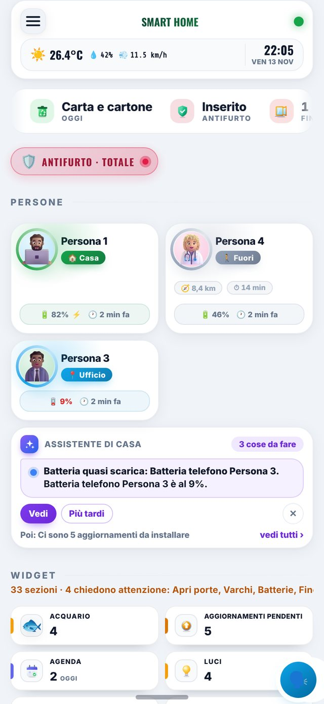
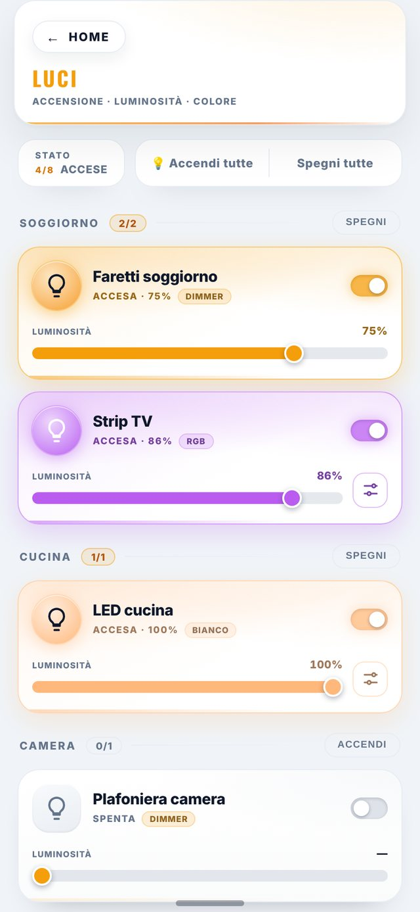
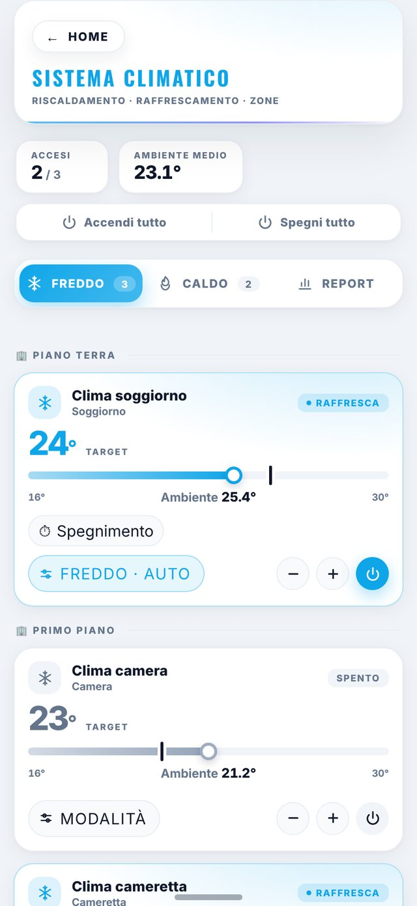
L'app aperta sulla plancia, la sezione Luci e la sezione Clima.
2. Cosa serve
Un Home Assistant con il Supervisor:
| OS: il sistema completo, su Raspberry, mini PC o
macchina virtuale |
✅ |
| Supervised: Debian con l'installatore
ufficiale |
✅ |
| Container: solo l'immagine Docker |
❌ nessun add-on, di nessuno |
| Core: in un ambiente Python |
❌ idem |
Su Container e Core il negozio degli add-on non esiste: non dipende
da GdAHome. Chi ha Container può passare a Supervised sulla stessa
macchina, perché Docker c'è già.
Servono anche:
- un telefono o un tablet, Android o iPhone/iPad,
oppure un browser (l'app nel browser è compresa in Premium);
- nessun account: GdAHome non ne chiede.
GdAHome è un add-on, non un'integrazione:
HACS non lo accetta. Si installa dal negozio degli
add-on.
3. Installare l'add-on
in Home Assistant
3.1 Aggiungere l'archivio
- In Home Assistant apri Impostazioni → Add-on → Negozio degli
add-on.
- Tocca i tre puntini in alto a destra →
Archivi.
- Incolla questo indirizzo e premi Aggiungi:
https://github.com/danigio15/gdahomeapp
- Chiudi la finestra.
3.2 Installare e avviare
- Nell'elenco compare la sezione GdAHome: apri
l'add-on.
- Premi Installa. La prima volta ci vogliono alcuni
minuti, anche dieci su un Raspberry.
- Premi Avvia.
- Accendi Mostra nella barra laterale: comparirà la
voce «Configura GdAHome».
3.3 Il primo controllo
Apri «Configura GdAHome» dalla barra laterale. Si
apre la sezione Casa:
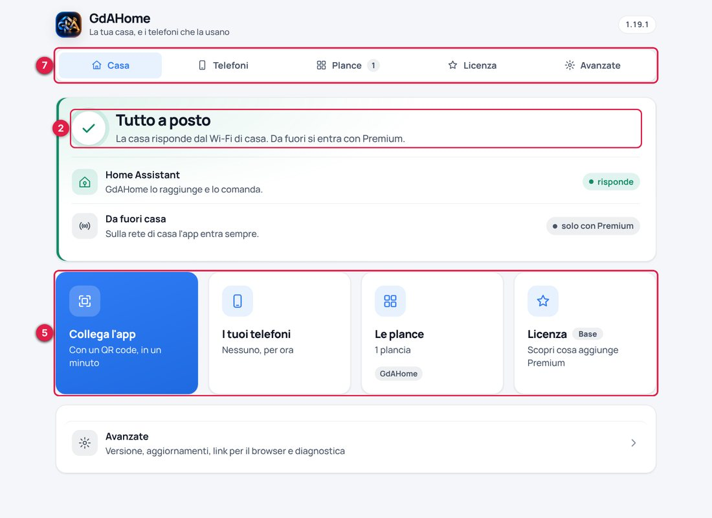
Legenda
- ① Le schede: Casa, Telefoni, Plance, Licenza,
Avanzate. Su un telefono diventano un elenco, e si torna indietro con
«‹».
- ② Lo stato della casa: «Tutto a posto» quando
funziona tutto, «C'è una cosa da sistemare» quando c'è un problema.
Sotto ci sono le righe dei controlli (Home Assistant, Da fuori
casa…).
- ③ «Collega l'app»: abbina un telefono nuovo
(capitolo 4).
- ④ «I tuoi telefoni»: i telefoni abbinati.
- ⑤ «Le plance»: le plance della casa.
- ⑥ «Licenza»: Base o Premium.
- ⑦ «Avanzate»: versione, link per il browser,
diagnostica.
Se c'è scritto «Serve riavviare Home Assistant una
volta» (succede la prima volta):
- Vai in Impostazioni → Sistema.
- In alto a destra tocca ⏻ → Riavvia Home
Assistant.
- Entro un minuto dal riavvio la plancia compare da sola fra le
Dashboard.
3.4 Se avevi
l'integrazione DashboardModern
Non serve più: la plancia è già nell'add-on, e alla prima
apertura GdAHome prende la configurazione che avevi.
Disinstalla l'integrazione da HACS e togli la sua voce da
Impostazioni → Dashboard. Se la lasci, quella voce
mostra «Errore di configurazione».
3.5 Aggiornare l'add-on
Si aggiorna come ogni altro add-on: Impostazioni → Add-on →
GdAHome → Aggiorna. Puoi farlo anche dall'app, dalla pagina Aggiornamenti.
4. Abbinare il telefono alla
casa
4.1 Scaricare l'app
4.2 Generare il QR
code (in Home Assistant)
- Apri «Configura GdAHome» e premi la tessera blu
«Collega l'app». Si apre la pagina «Collega
l'app GdAHome», con tre passi.
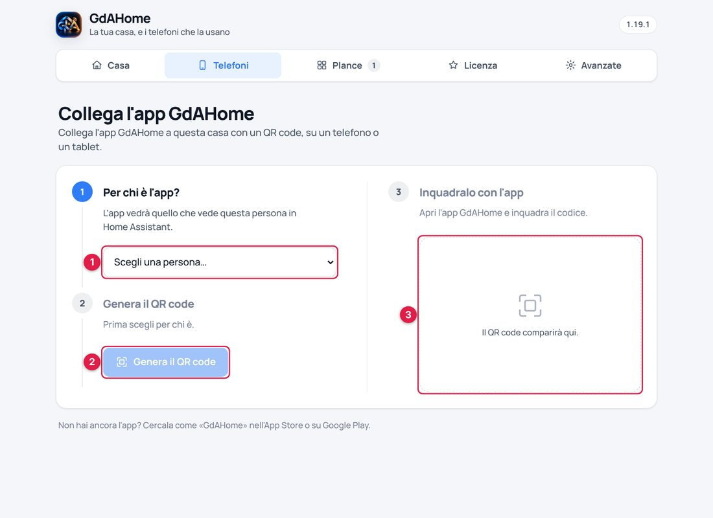
Legenda
- ① «Per chi è l'app?»: scegli dall'elenco l'utente
di Home Assistant che userà il telefono. L'app vedrà quello che
vede quella persona.
- ② «Genera il QR code»: resta grigio finché non hai
scelto la persona.
- ③ Qui comparirà il QR code.
- Scegli la persona in ①.
- Premi ②, «Genera il QR code».
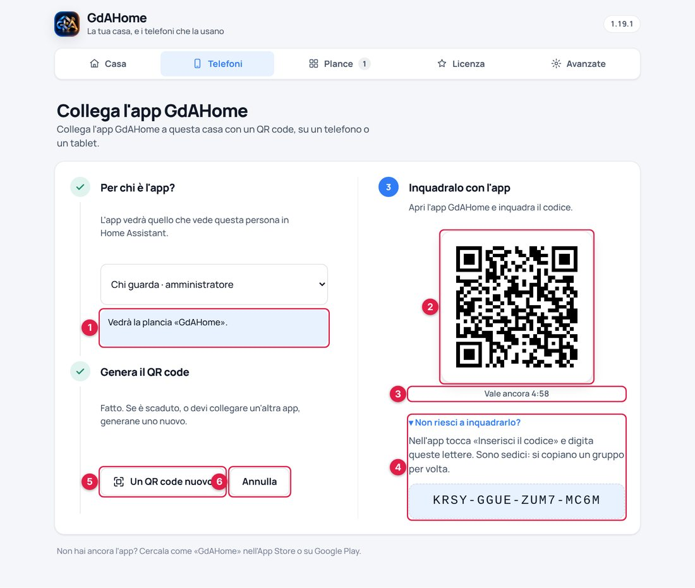
Legenda
- ① L'anteprima: dice quali plance vedrà il telefono,
per esempio «Vedrà la plancia «GdAHome».».
- ② Il QR code da inquadrare con l'app.
- ③ Il conto alla rovescia: «Vale ancora 4:58». Il
codice vale 5 minuti e una volta sola.
- ④ «Non riesci a inquadrarlo?»: mostra i
sedici caratteri da scrivere a mano, in quattro
gruppi.
- ⑤ «Un QR code nuovo»: se è scaduto, ne crea un
altro.
- ⑥ «Annulla»: cancella subito il codice.
4.3 Inquadrarlo con l'app
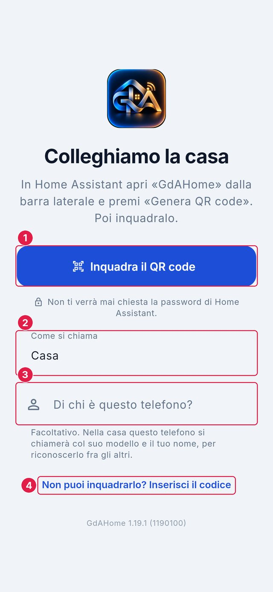
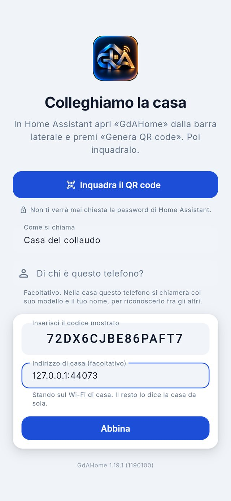
Legenda (schermata a sinistra)
- ① «Inquadra il QR code»: apre la fotocamera.
- ② «Come si chiama»: il nome della casa nell'app,
per esempio «Casa» o «Casa al mare».
- ③ «Di chi è questo telefono?»: il tuo nome
(facoltativo). Serve a riconoscere il telefono fra quelli abbinati.
- ④ «Non puoi inquadrarlo? Inserisci il codice»: per
scrivere il codice a mano.
Con il QR code
- Apri l'app: compare «Colleghiamo la casa».
- Se vuoi, cambia il nome ② e scrivi il tuo nome ③.
- Premi ① e consenti l'uso della fotocamera. Al buio c'è il tasto
«Torcia».
- Inquadra il QR code sullo schermo di Home Assistant.
Fatto: la plancia si apre. 🔒 Non ti verrà mai chiesta la
password di Home Assistant.
Con il codice a mano (schermata a destra)
- Premi ④.
- In «Inserisci il codice mostrato» scrivi i sedici
caratteri, un gruppo alla volta.
- Lascia vuoto «Indirizzo di casa (facoltativo)».
Scrivilo solo se l'app lo chiede: è l'indirizzo di Home Assistant sulla
rete di casa, per esempio
192.168.1.50.
- Premi «Abbina».
4.4 Errori possibili
| «Non trovo la casa. Controlla che l'add-on sia acceso, e che il
codice non sia scaduto…» |
Controlla che l'add-on sia avviato e genera un QR nuovo. |
| «Non trovo GdAHome a quell'indirizzo…» |
Collegati al Wi-Fi di casa e controlla l'indirizzo. |
| «GdAHome non ha il permesso di usare la fotocamera…» |
Consenti la fotocamera nelle impostazioni del telefono, oppure usa
il codice a mano. |
| «L'accesso remoto di Home Assistant non arriva agli add-on…» |
Collegati al Wi-Fi di casa e scrivi l'indirizzo locale. |
4.5 Da sapere
- Ogni telefono ha il suo abbinamento e si toglie con
un tasto (capitolo 20).
- Un telefono vede le plance della persona per cui è
stato abbinato.
- Con Base si abbinano fino a 2
telefoni; con Premium, quanti ne vuoi.
- Se avevi abbinato il telefono prima che esistesse il nome del
proprietario, l'app te lo chiede una volta, con il foglio «Di
chi è questo telefono?»: scrivi il nome e premi
«Salva», oppure «Più tardi».
Il menu si apre in tre modi:
- toccando i tre trattini in alto a sinistra della
plancia;
- toccando ☰ in alto a sinistra nelle altre
pagine;
- premendo Indietro su Android. Con il menu aperto,
un altro Indietro esce dall'app.
Il menu si chiude toccando una voce, trascinandolo verso sinistra,
oppure da solo dopo qualche secondo.
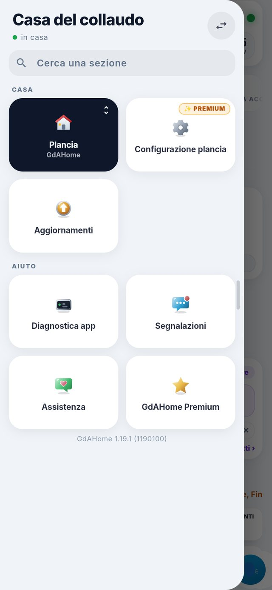
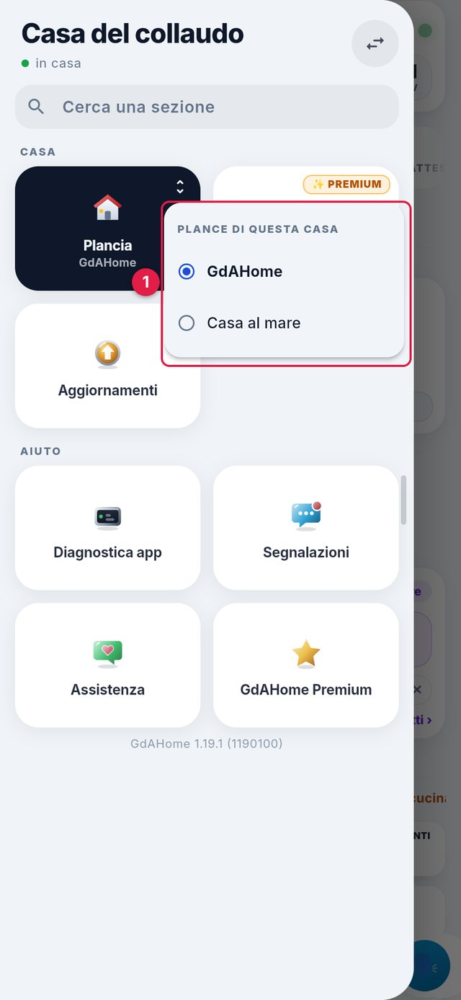
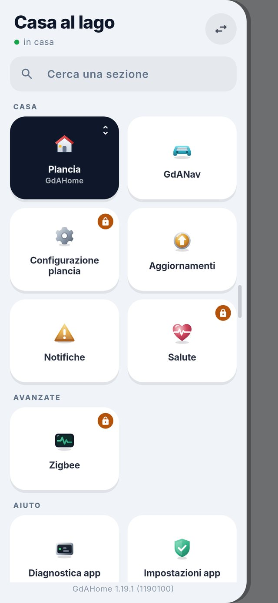
Legenda (prima schermata)
- ① Il nome della casa, e sotto come sei collegato:
«in casa» (verde) o «da fuori».
- ② ⇄ Le tue case: per passare a un'altra casa o
aggiungerne una (capitolo 9).
- ③ «Cerca una sezione»: scrivi un nome per trovare
subito la voce.
- ④ «Plancia»: torna alla plancia.
- ⑤ ⇕ Quale plancia: tocca qui per cambiare plancia.
L'elenco «PLANCE DI QUESTA CASA» è nella seconda schermata; le plance
con il lucchetto richiedono Premium.
- ⑥ Una voce Premium: con Premium ha il bollino «✨
PREMIUM», con Base un lucchetto.
La terza schermata è il menu completo sul telefono.
Alcune voci ci sono solo nell'app e non nel browser: GdANav, Notifiche,
Salute, Zigbee e Impostazioni app.
5.2 Tutte le voci
Gruppo «Casa»
| Plancia |
Torna alla plancia |
|
| Dispositivi |
Dispositivi stanza per stanza e integrazioni |
Premium, solo amministratori |
| GdANav |
Il navigatore |
Solo app |
| Configurazione plancia |
Cambia la plancia dal telefono |
Premium |
| Aggiornamenti |
Aggiornamenti di Home Assistant, degli add-on e dei firmware;
riavvio |
Il numero indica quanti sono in attesa |
| Notifiche |
Cosa ricevere su questo telefono |
Solo app |
| Salute |
Le misure dell'orologio inviate alla casa |
Solo app, Premium |
Gruppo «Avanzate»
| Automazioni |
Automazioni e Pianificatore |
Premium, solo amministratori |
| Aiutanti |
Interruttori, numeri, timer, sensori calcolati |
Premium, solo amministratori |
| Zigbee |
Abbinare dispositivi Zigbee |
Solo app, Premium, solo con ZHA o Zigbee2MQTT |
| Gestione installatore |
Il cruscotto di chi installa |
Solo sugli impianti degli installatori |
Gruppo «Aiuto»
| Impostazioni app |
Plancia leggera e lucchetto con volto o impronta |
| Diagnostica app |
Come sta andando l'app |
| Segnalazioni |
Un problema, un'idea o una domanda |
| Assistenza |
Chat privata con chi fa l'app |
| GdAHome Premium |
Abbonamento, prova gratuita, codice regalo |
6. La plancia: usarla tutti
i giorni
6.1 Com'è fatta
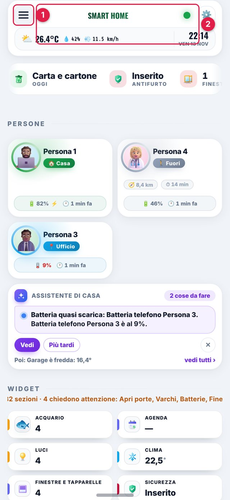
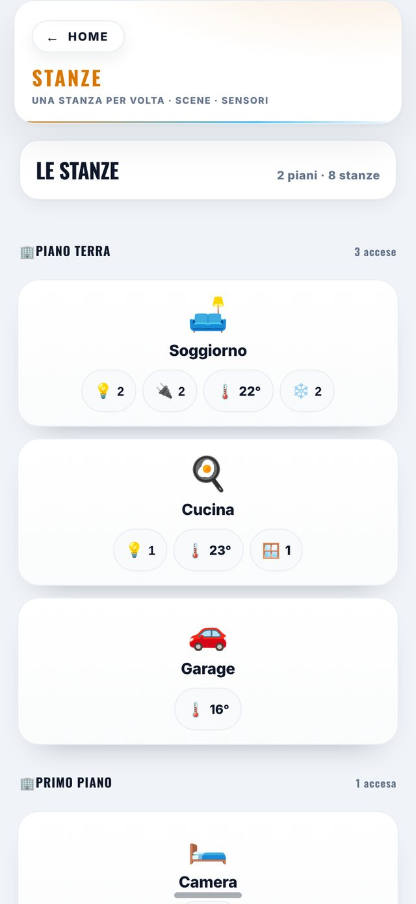
Legenda
- ① Il menu della plancia (tre trattini). Nell'app
apre il menu dell'app.
- ② La testata: nome della casa, meteo, ora, stato
del collegamento.
In fondo allo schermo c'è la barra delle sezioni:
scorrila e tocca una sezione per aprirla. In ogni sezione, «←
HOME» in alto riporta alla Home.
Nella Home trovi, dall'alto in basso:
- i blocchi di riepilogo: rifiuti di domani, antifurto, avvisi;
- Persone: chi è in casa e chi è fuori, con batteria
e posizione;
- Assistente di casa: le cose da fare, per esempio
una batteria scarica;
- Widget: i riquadri con i numeri della casa (luci
accese, clima, aggiornamenti…).
La seconda schermata è la sezione Stanze: ogni
stanza mostra quante luci sono accese, la temperatura e cosa c'è dentro.
Toccala per aprirla.
6.2 Come si comanda
- Un tocco su una luce la accende o la spegne.
Trascinando la barra sotto la luce ne cambi la
luminosità.
- Un tocco su una tapparella, un termostato o una
telecamera apre i suoi comandi o il video dal vivo.
- I tasti come «Accendi tutte» / «Spegni tutte»
agiscono su tutta la sezione.
- Porte e cancelli si aprono dalla sezione «Apri
porte» e, se l'hai impostato, chiedono il PIN.
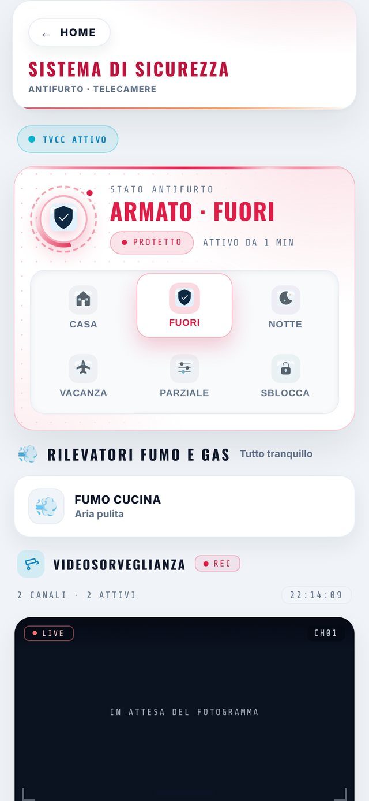
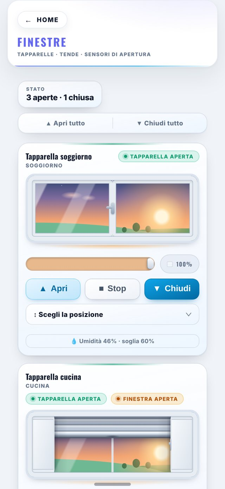
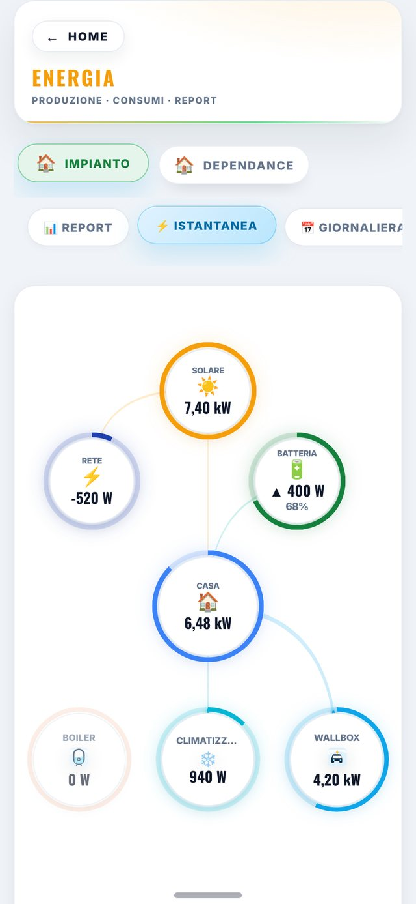
Sicurezza (antifurto con i modi Casa, Fuori, Notte…), Finestre (tapparelle con Apri, Stop, Chiudi) ed Energia (il flusso fra sole, rete, batteria e casa).
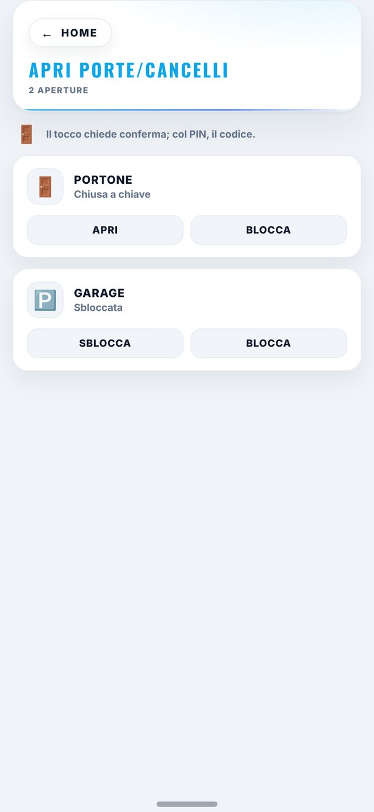
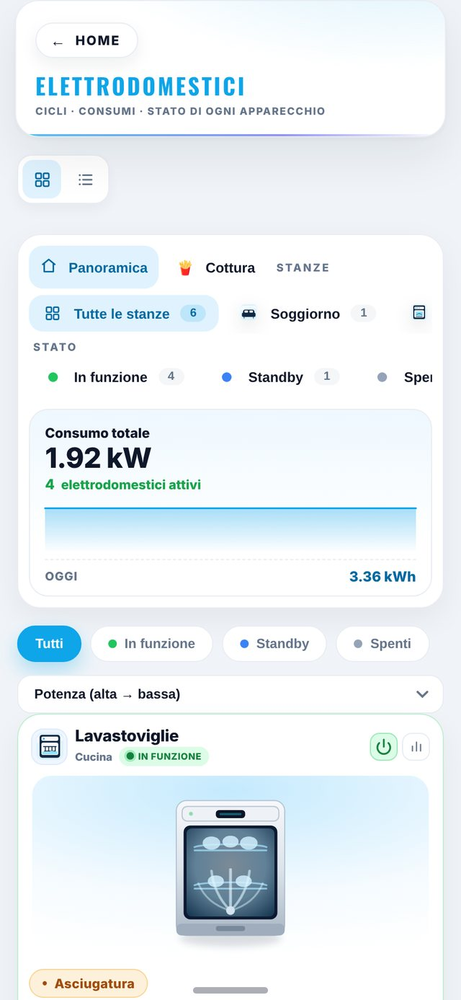
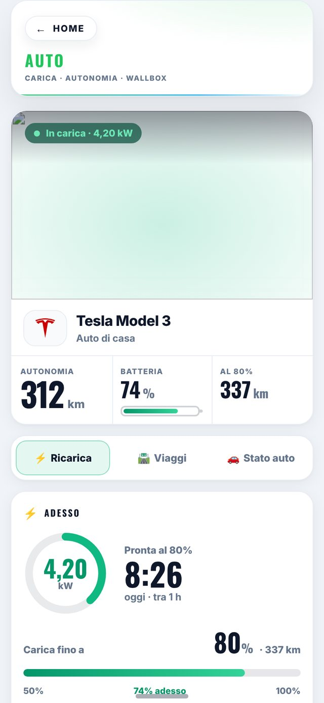
Apri porte e cancelli («Apri», «Blocca», «Sblocca»), Elettrodomestici (cicli e consumi) e Auto (batteria, autonomia, ricarica).
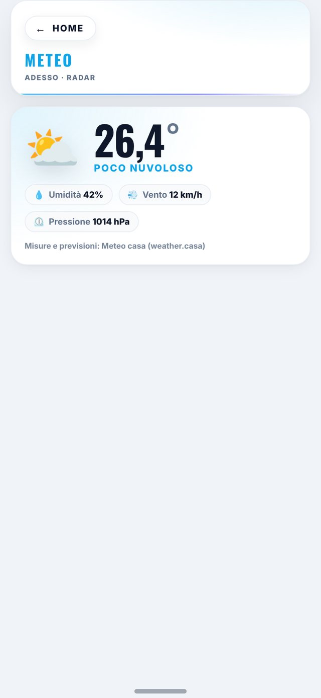
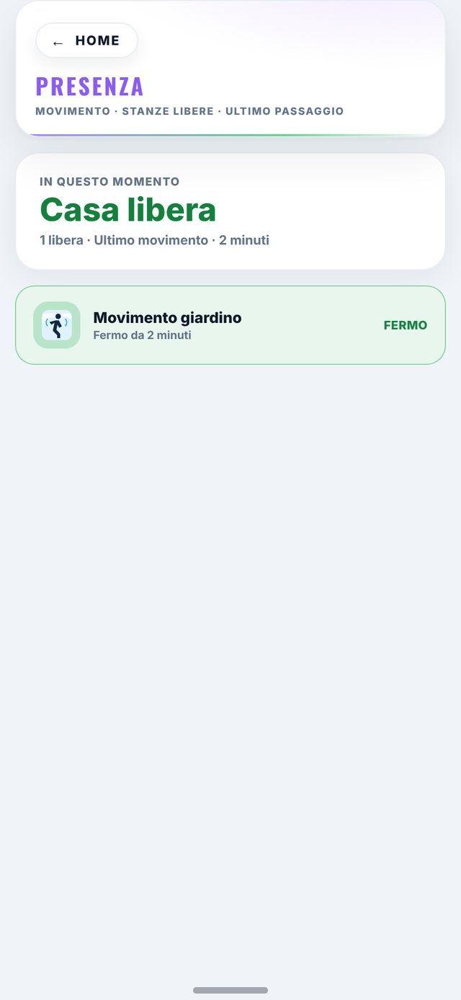
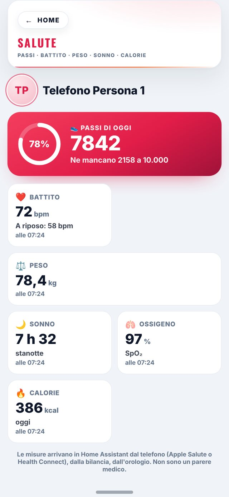
Meteo, Presenza (stanze libere e ultimi passaggi) e Salute (le misure dell'orologio, capitolo 12).
6.3 Le sezioni della plancia
Le sezioni si accendono e si spengono dalla Configurazione (capitolo
7). Una sezione senza contenuto non compare nella barra.
| 🏠 Home |
Il riepilogo della casa e i widget |
| ⚡ Energia |
Fotovoltaico, rete, accumulo, consumi, tariffe, report |
| 🚗 Auto |
Auto elettrica, colonnina, evcc, ricarica di notte |
| 🧭 GdANav |
Viaggi pianificati, che ritrovi nel navigatore |
| 🌞 Gestione termica |
Solare termico, scaldabagno, caldaia, pellet |
| 🛡️ Sicurezza |
Antifurto, telecamere, sensori di fumo e gas |
| 🖥️ MiniPC (Server e rete) |
Server, container, rete |
| 🌡️ Temperatura |
Le temperature delle stanze |
| 🌦️ Meteo |
Condizioni, previsioni, radar |
| ⚽ Sport |
Squadra del cuore, Formula 1, MotoGP |
| ❤️ Salute |
Le misure dall'orologio |
| ❄️ Clima |
Termostati, condizionatori, VMC |
| 🪟 Finestre |
Tapparelle e finestre |
| 🏊 Piscina · 💧 Irrigazione · 🪴 Piante |
|
| 🧺 Elettrodomestici |
Lavatrice, lavastoviglie e altri, con cicli e costi |
| 🤖 Robot |
Aspirapolvere robot |
| 🐾 Animali |
Anche acquari e terrari |
| 💡 Luci · 🔌 Prese · 🛋️ Stanze |
|
| 📅 Agenda · 🗑️ Rifiuti · ⛈️ Allerte |
|
| 🔌 UPS |
Gruppi di continuità |
| 🚪 Varchi · 🏃 Presenza |
Porte e finestre aperte, movimento |
| 🔓 Apri porte |
Porte e cancelli, con PIN |
| 📮 Citofono |
Campanello e posta |
| 🎵 Musica |
Lettori, radio, Alexa |
| 🔋 Batterie |
Le batterie dei dispositivi |
| 🖨️ Stampanti · 💧 Acqua e gas |
|
| ⭐ Le tue sezioni |
Sezioni create da te |
7. Configurare la plancia
Qui trovi le basi. Ogni scheda dell'editor, una per
una, è spiegata nel capitolo 27; la
stessa guida si apre anche dentro la plancia, con «📖 Come si
configura questa scheda».
(Premium dall'app; dal browser è sempre disponibile
all'amministratore.)
7.1 Aprire la Configurazione
- Dall'app: menu → «Configurazione plancia».
- Dalla plancia: la voce CONFIG in fondo alla barra
delle sezioni.
La Configurazione si apre solo all'utente indicato come «Utente
admin».
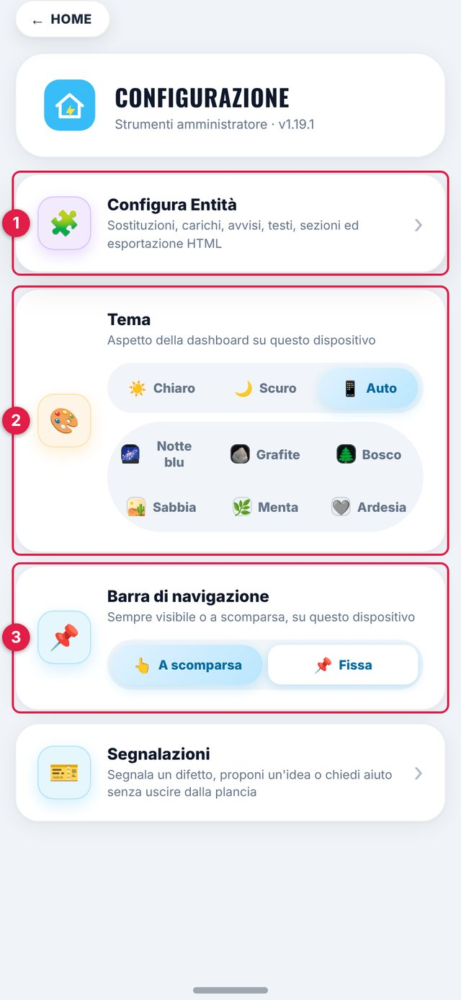
Legenda
- ① «Configura Entità»: l'editor completo della
plancia. Qui si sceglie cosa va in ogni sezione.
- ② «Tema»: Chiaro, Scuro, Auto e le tavolozze (Notte
blu, Grafite, Bosco…). Vale solo per questo dispositivo.
- ③ «Barra di navigazione»: «A scomparsa» o «Fissa».
Vale solo per questo dispositivo.
- ④ «Segnalazioni»: per segnalare un problema senza
uscire dalla plancia.
7.2 L'editor: come è
organizzato
Tocca ① «Configura Entità»: si apre l'EDITOR
DASHBOARD.
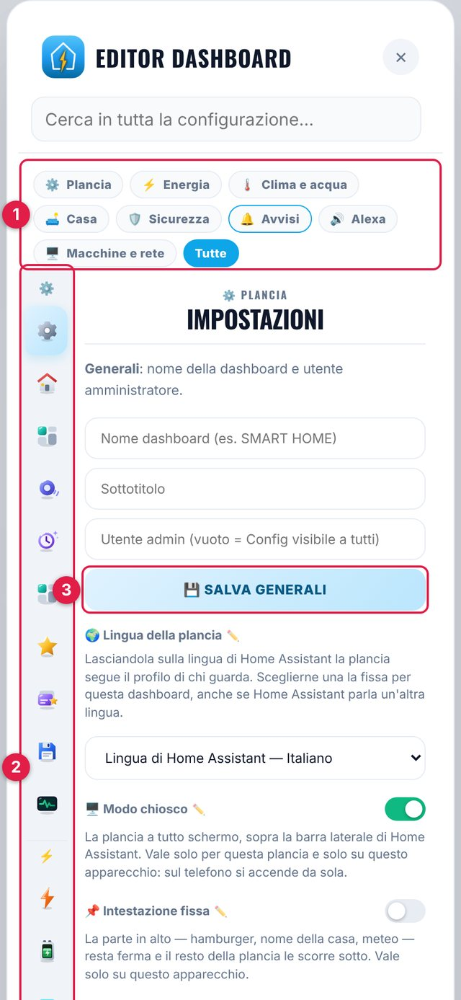
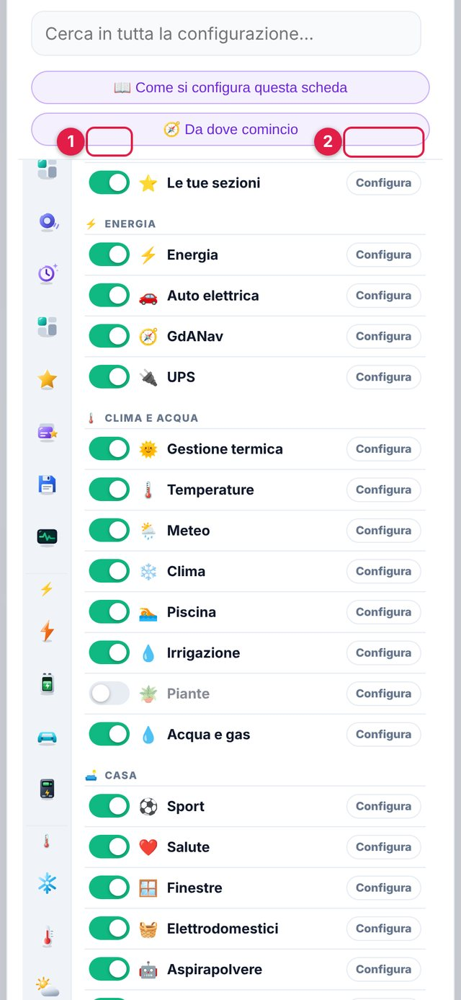
Legenda (schermata a sinistra)
- ① Le famiglie: Plancia, Energia, Clima e acqua,
Casa, Sicurezza, Avvisi, Alexa, Macchine e rete, oppure «Tutte». Toccane
una per vedere solo le sue schede.
- ② Le schede: la colonna di icone a sinistra. Ogni
icona è una scheda (Impostazioni, Home, Luci, Clima…). In cima c'è la
casella «Cerca in tutta la configurazione».
- ③ «💾 Salva generali»: salva il nome della plancia
e l'utente amministratore.
Legenda (schermata a destra: «Le sezioni della
plancia», più in basso nella scheda Impostazioni)
- ① L'interruttore verde: accende o spegne la sezione
nella plancia.
- ② «Configura»: apre la scheda di quella
sezione.
7.3
Mettere un dispositivo in una sezione (esempio: una luce)
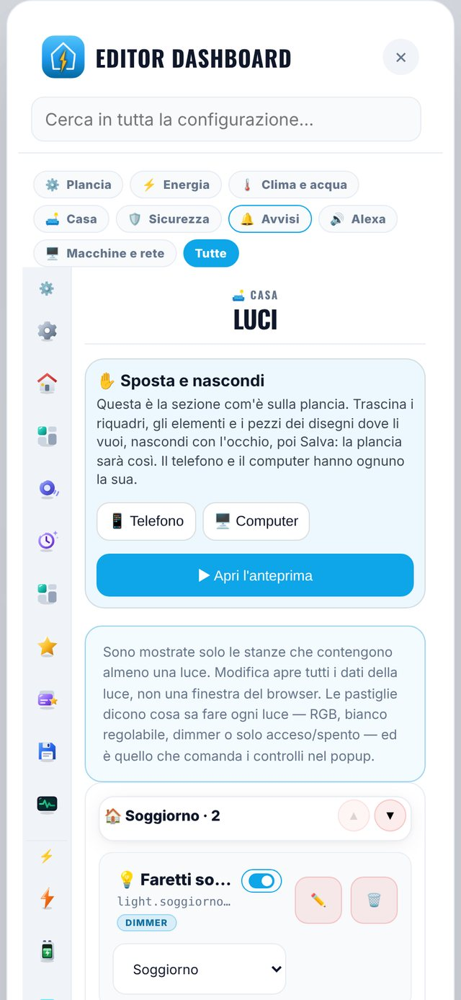
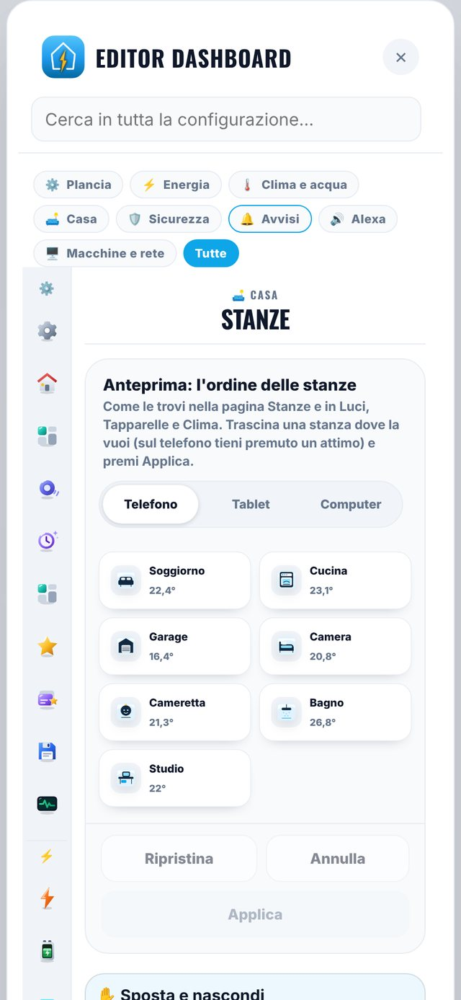
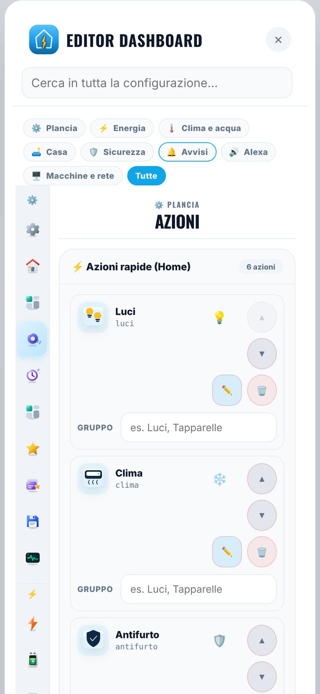
- Nell'editor apri la scheda Luci (famiglia
Casa).
- Nella riga di una luce scegli quale entità di Home Assistant
mostrare.
- Dalla tendina della riga scegli la stanza (per
esempio «Soggiorno»).
- Per aggiungere un'altra luce usa il tasto +; per
toglierla, il cestino.
- Premi Salva in fondo alla scheda.
Se lasci la scheda senza salvare, compare «Ricordati di
salvare» con tre scelte: salvare, uscire senza salvare,
restare.
Le altre schede che si usano di più:
- Stanze (al centro): l'anteprima e l'ordine delle
stanze. Le stanze vengono dalle aree di Home Assistant e si riordinano
trascinandole.
- Azioni (a destra): i tasti rapidi della Home, per
esempio «Esco», che spegne tutto. Sono anche i comandi proposti in auto
e sull'orologio.
7.4 Le tue sezioni, le
persone, gli annunci
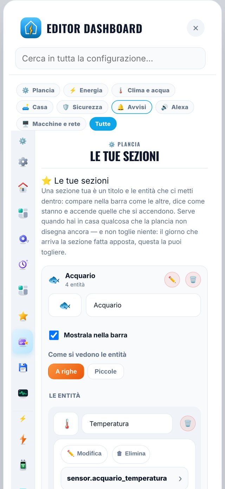
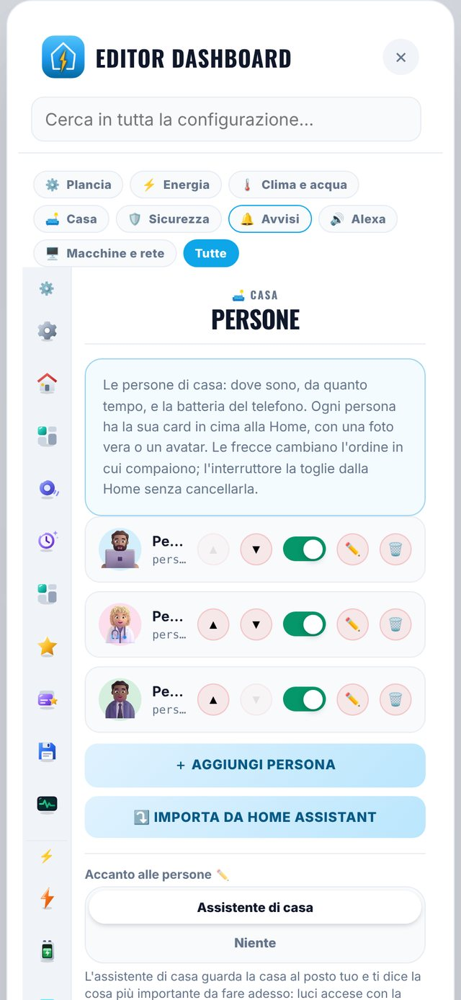
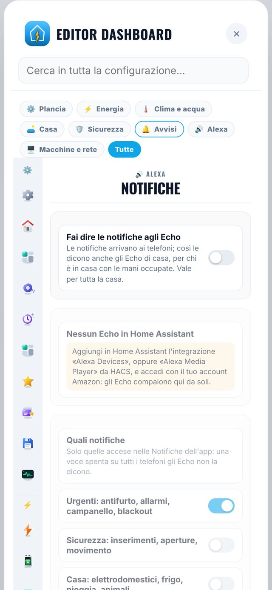
- Le tue sezioni (a sinistra): crea una sezione nuova
con titolo e icona e mettici le entità che vuoi (nell'esempio,
«Acquario»). La sezione compare nella barra.
- Le tue entità: aggiunge entità in fondo a una
sezione esistente.
- Persone (al centro): le persone della Home. Usa
«+ Aggiungi persona» oppure «Importa da Home
Assistant».
- Notifiche (a destra, famiglia Alexa): fa dire le
notifiche dagli altoparlanti Echo, se in Home Assistant c'è
l'integrazione Alexa.
7.5 Backup e ripristino
della plancia
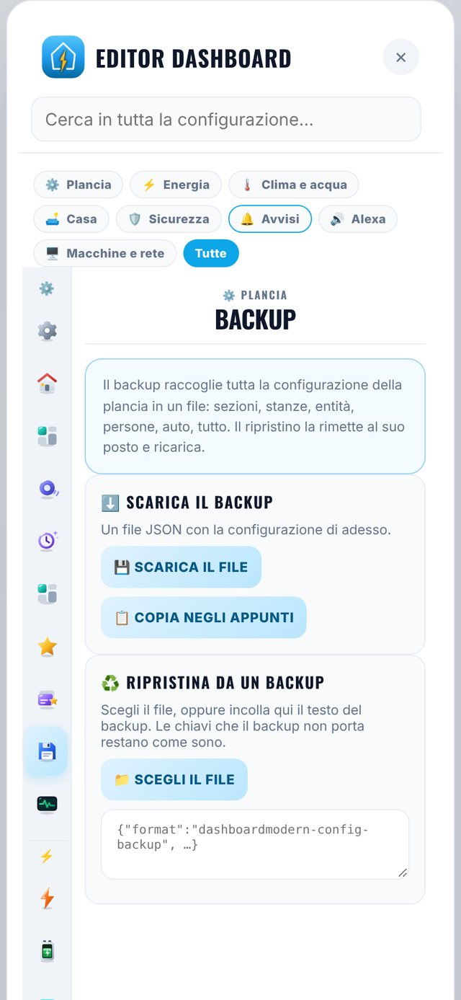
- Apri la scheda Backup.
- «Scarica il file» salva tutta la configurazione in
un file JSON; «Copia negli appunti» la copia come
testo.
- Per ripristinare: «Scegli il file» (oppure incolla
il testo) e conferma. Il ripristino non cancella quello
che nel file non c'è.
8. Più plance: a
muro, Colpo d'occhio, Casa 3D
Con Base c'è una plancia, la principale. Con
Premium puoi averne fino a 30 per
casa, per esempio una per la famiglia, una per il tablet in
cucina e una per l'ufficio.
8.1 Creare una plancia
Le plance si creano dalla pagina dell'add-on in Home Assistant:
«Configura GdAHome» → Plance.
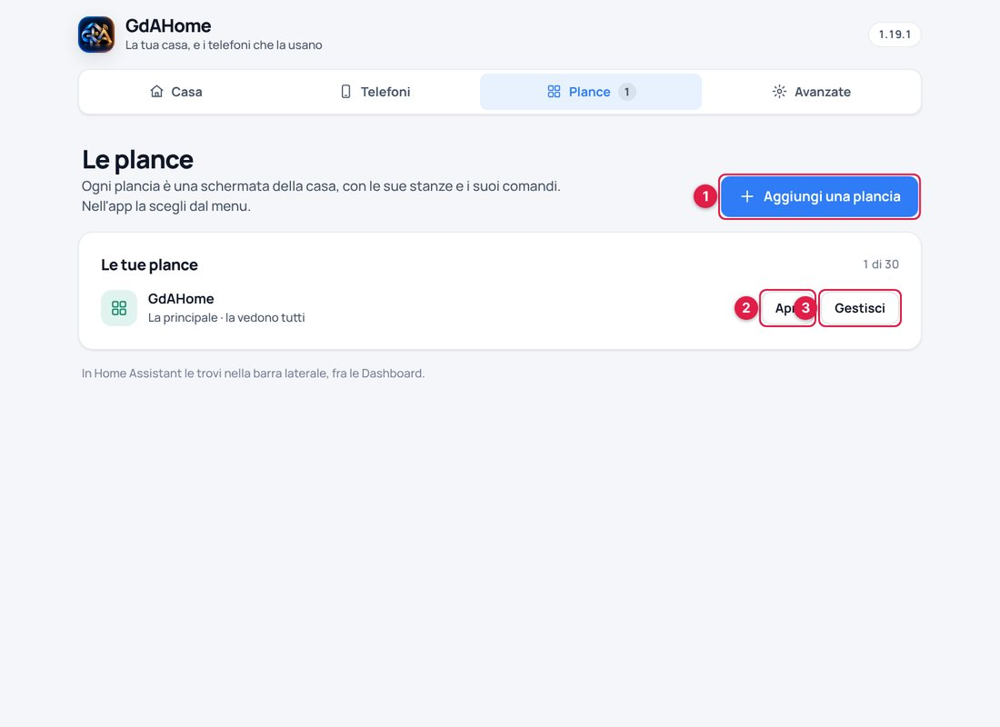
Legenda
- ① «Aggiungi una plancia»: apre il modulo per una
plancia nuova.
- ② «Apri»: apre la plancia in Home Assistant.
- ③ «Gestisci»: chi la vede, rinomina, togli.
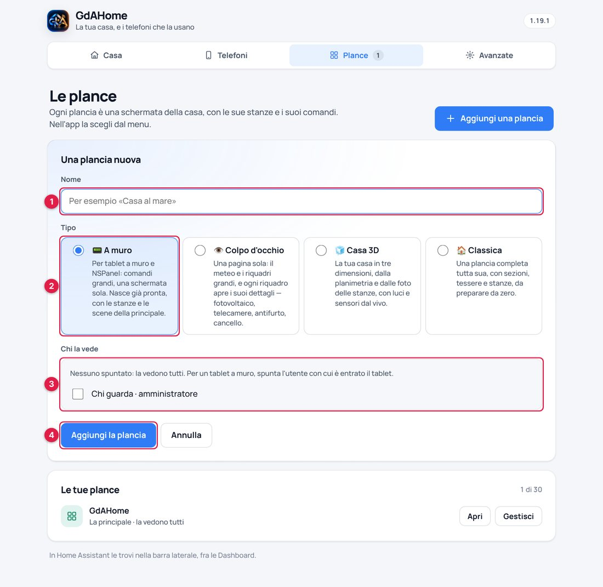
Legenda
- ① «Nome»: fino a 40 caratteri, per esempio «Casa al
mare».
- ② «Tipo»:
- 📟 A muro: per tablet a muro e NSPanel. Comandi
grandi, una schermata sola. Nasce già pronta, con le stanze e le scene
della principale.
- 👁️ Colpo d'occhio: una pagina sola con il meteo e
riquadri grandi.
- 🧊 Casa 3D: la casa in tre dimensioni.
- 🏠 Classica: una plancia completa, da preparare da
zero.
- ③ «Chi la vede»: spunta gli utenti che possono
vederla. Nessuna spunta = la vedono tutti. Per un
tablet a muro, spunta l'utente con cui è entrato il tablet.
- ④ «Aggiungi la plancia»: crea la plancia.
Nell'app la nuova plancia compare nel selettore delle
plance del menu (⇕, capitolo 5).
8.2 Chi vede una plancia
Premi Gestisci accanto alla plancia:
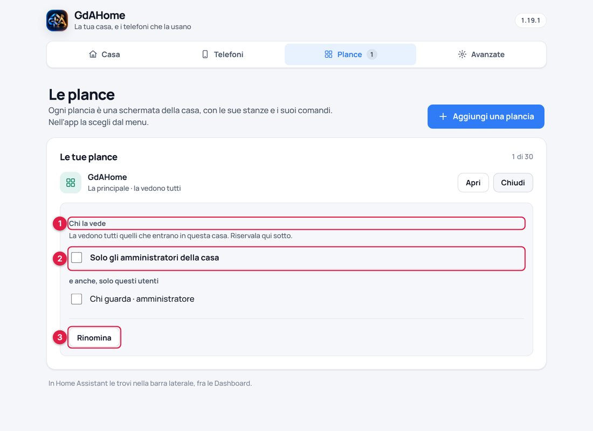
Legenda
- ① «Chi la vede»: la frase dice chi la vede
adesso.
- ② «Solo gli amministratori della casa»: la riserva
agli amministratori. Sotto, «e anche, solo questi
utenti» permette di spuntare singole persone. Le scelte si
salvano subito.
- ③ «Rinomina». Per le plance aggiunte c'è anche
«Togli la plancia», che cancella anche sezioni e stanze
e non si può annullare.
Chi non vede nessuna plancia legge nell'app «Non hai plance associate
alla tua utenza».
8.3 La plancia a muro
(Premium)
Trasforma un tablet fisso o un Sonoff NSPanel in un
pannello con comandi grandi, fino a 8 pagine.
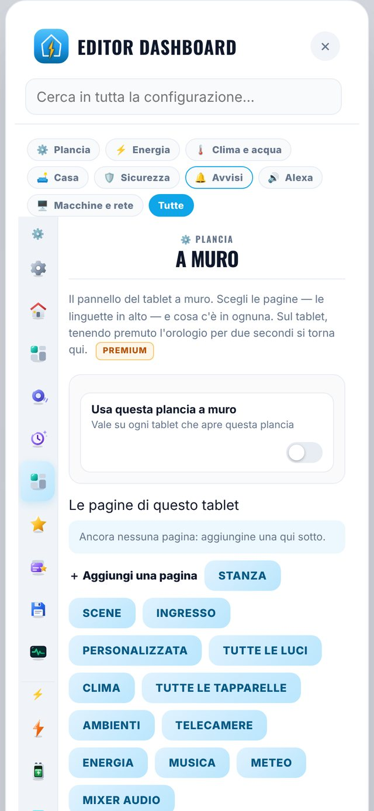
- Apri la plancia del tablet e vai in Configurazione →
Configura Entità → scheda «A muro».
- Accendi «Usa questa plancia a muro».
- In «Prende le cose da» scegli se usare stanze,
luci, clima e antifurto di questa plancia o della
principale.
- In «Le pagine di questo tablet» premi «+
Aggiungi una pagina» e scegli il tipo: Stanza, Scene, Ingresso,
Personalizzata, Tutte le luci, Clima, Tutte le tapparelle, Ambienti,
Telecamere, Energia, Musica, Meteo, Mixer audio…
- Per ogni pagina scegli quanti riquadri: da 4 a 24 (di serie 6).
- In «Altre impostazioni» regola orientamento, tema,
riposo, notte (schermo nero), luminosità, chi c'è vicino (sensore di
presenza) e il PIN per uscire dal pannello.
- Premi «Salva». Finché non salvi, il tablet non vede
le modifiche.
Sul tablet si passa da una pagina all'altra con le linguette o
facendo scorrere il dito. Dopo qualche minuto senza tocchi resta
l'orologio.
8.4 Colpo d'occhio (Premium)
Una pagina sola: nome della casa e ora, meteo, e i riquadri grandi
Fotovoltaico, Telecamere,
Antifurto e Cancello. Si accende in
Configurazione → scheda «Colpo d'occhio» →
«Accesa: questa plancia si apre a colpo d'occhio».
8.5 Casa 3D (Premium)
La tua casa in tre dimensioni, dalla planimetria: si crea con la
procedura guidata «Crea la tua casa», in 8 passi, e poi
si arreda. È spiegata passo per passo, con le schermate, nel capitolo 28.
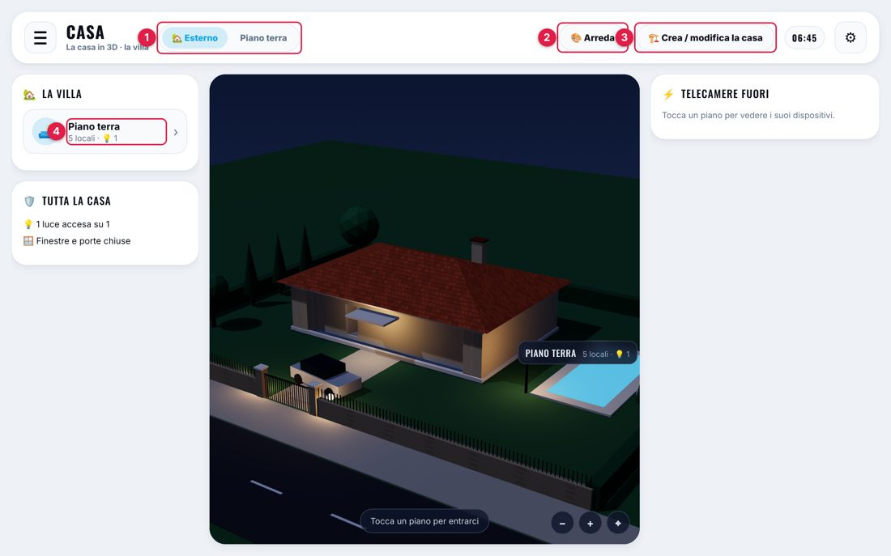
Con Base la plancia a muro resta una plancia normale, e Colpo
d'occhio e Casa 3D mostrano un avviso. La configurazione resta
salvata.
9. Più case e il
collegamento da fuori casa
9.1 Le tue case (Premium: fino
a 10)
Apri il menu e tocca ⇄ (② nella prima schermata del
capitolo 5).
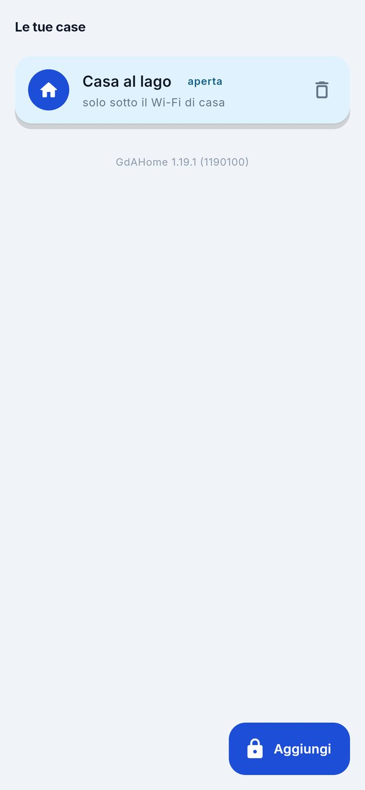
- Passare a un'altra casa: tocca il suo nome. Sotto
il nome c'è da dove la raggiungi: «in casa adesso», «da fuori adesso»,
«solo sotto il Wi-Fi di casa».
- Aggiungere una casa: premi
«Aggiungi» e ripeti l'abbinamento (capitolo 4)
sull'Home Assistant dell'altra casa. Con Base il tasto ha il lucchetto
(schermata a destra).
- Togliere una casa dal telefono: tocca il
cestino e conferma con «Elimina». Per
toglierla anche dalla parte della casa: «Configura GdAHome» → Telefoni →
⋯ → «Togli da questa casa».
9.2 Da fuori casa (Premium)
Sul Wi-Fi di casa l'app parla direttamente con l'add-on. Con
Premium la casa si raggiunge da qualunque posto:
- senza aprire porte sul router, senza VPN e senza
indirizzo pubblico;
- cifrato da un capo all'altro;
- in automatico: appena esci di casa l'app cambia
strada da sola.
L'opzione dell'add-on «Da fuori casa» deve essere
accesa (lo è di serie).
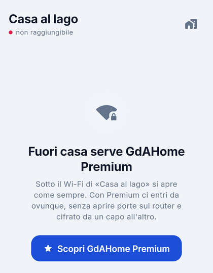
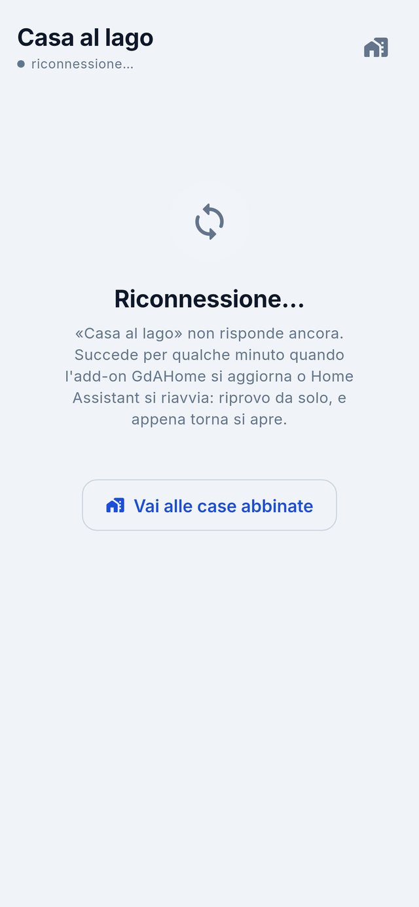
A sinistra: con Base, fuori dal Wi-Fi di casa. A destra: mentre l'add-on si aggiorna o Home Assistant si riavvia, l'app riprova da sola.
9.3 L'app dal browser
(Premium)
Apri webapp.gdahome.org e
abbinala con il codice a mano (paragrafo 4.3).
L'indirizzo esatto lo trovi anche in «Configura GdAHome» → Avanzate →
«GdAHome nel browser».
10. Le notifiche
La casa ti avvisa anche ad app chiusa: l'antifurto
che scatta, il campanello, la lavatrice che ha finito.
- Le regole stanno nell'add-on: è la casa a guardare
i sensori e a decidere quando scriverti.
- Sul telefono scegli quali notifiche ricevere.
- Le notifiche partono già cifrate con la chiave del
tuo telefono: né il centralino, né Google, né Apple le possono
leggere.
Con Base arrivano solo gli avvisi di
sicurezza: fumo, gas, allagamento, antifurto scattato e
campanello. Tutto il resto è Premium, e nella pagina è
segnato con un lucchetto.
10.1 Attivarle
- La prima volta che entri in una casa compare «Le notifiche
di casa»: premi «Attiva» e consenti le
notifiche al telefono. Se avevi scelto «Non ora», le attivi dalla pagina
Notifiche.
- Apri menu → «Notifiche».
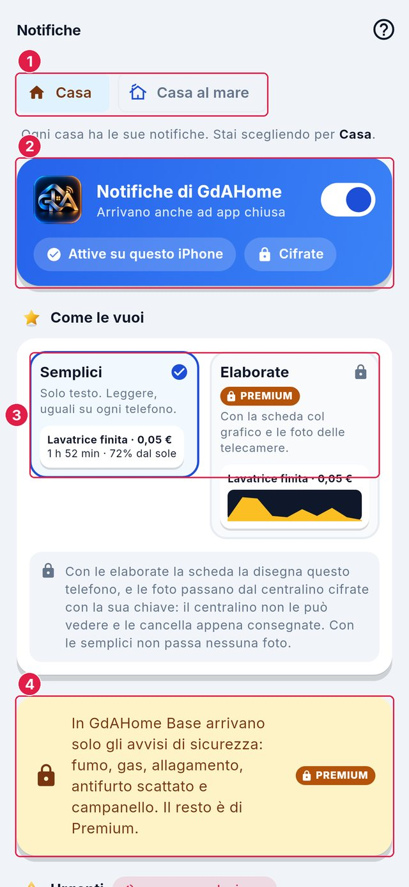
Legenda
- ① Per quale casa: ogni casa ha le sue notifiche.
Tocca il nome della casa per cui stai scegliendo.
- ② «Notifiche di GdAHome»: l'interruttore
principale. Sotto devono comparire «Attive su questo
iPhone» (o telefono) e «Cifrate».
- ③ «Come le vuoi»:
- «Semplici»: solo testo (di serie);
- «Elaborate» (Premium): con il grafico e le foto
delle telecamere.
- ④ L'avviso di Base: con Base arrivano solo gli
avvisi di sicurezza.
- Accendi ②.
- In fondo alla pagina premi «Manda una notifica di
prova». Se leggi «Partita: arriva fra qualche secondo»,
funziona.
Requisiti:
- l'opzione dell'add-on «Da fuori casa» deve essere
accesa, perché le notifiche passano dal centralino;
- il telefono deve essere abbinato a un utente di Home Assistant.
Se manca qualcosa, la pagina lo dice con una scheda gialla e spiega
cosa fare.
10.2 Cosa puoi ricevere
Scorri la pagina: ogni voce ha un interruttore, e di serie sono tutte
accese.
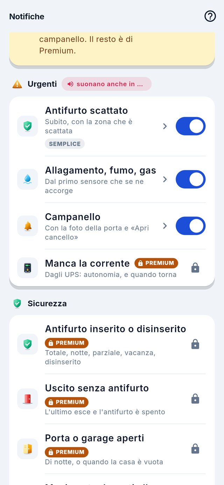
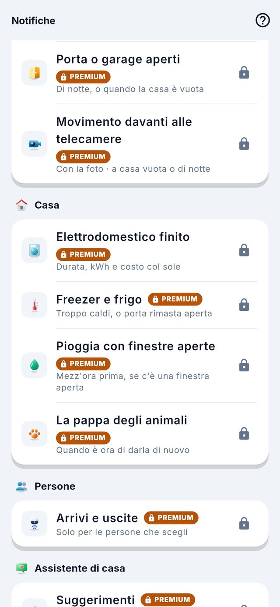
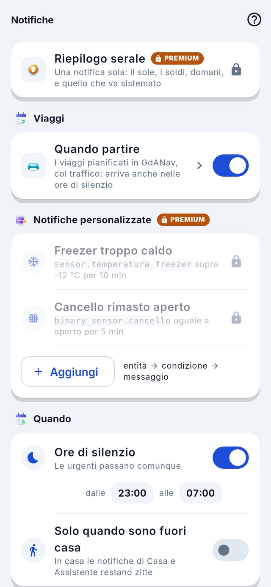
| Urgenti (suonano anche in silenzioso) |
Antifurto scattato |
Subito, con la zona |
|
Allagamento, fumo, gas |
Dal primo sensore che se ne accorge |
|
Campanello |
Con la foto della porta e «Apri cancello» |
|
Manca la corrente |
Dagli UPS: autonomia, e quando torna |
| Sicurezza |
Antifurto inserito o disinserito |
Totale, notte, parziale, vacanza |
|
Uscito senza antifurto |
L'ultimo esce e l'antifurto è spento |
|
Porta o garage aperti |
Di notte, o con la casa vuota |
|
Movimento davanti alle telecamere |
Con la foto, a casa vuota o di notte |
| Casa |
Elettrodomestico finito |
Durata, kWh e costo |
|
Freezer e frigo |
Troppo caldi, o porta aperta |
|
Pioggia con finestre aperte |
Mezz'ora prima |
|
La pappa degli animali |
Quando è ora |
| Persone |
Arrivi e uscite |
Solo per le persone che scegli |
| Assistente di casa |
Suggerimenti |
Luci o clima accesi con la casa vuota, ecc. |
| Manutenzione |
Riepilogo serale |
Ogni sera all'ora scelta |
| Viaggi |
Quando partire |
I viaggi pianificati in GdANav |
In fondo alla pagina (terza schermata) trovi:
- le «Notifiche personalizzate» (paragrafo
10.5);
- la scheda «Quando», con:
- «Ore di silenzio»: accese di serie, dalle 23:00
alle 07:00. Tocca gli orari per cambiarli. Le urgenti passano
comunque.
- «Solo quando sono fuori casa»: quando sei in casa,
le notifiche di «Casa» e «Assistente» restano zitte.
10.3 Regolare una singola
notifica
Tocca il nome di una voce (non l'interruttore): si
apre il suo foglio. Le scelte valgono solo per quella notifica,
su questo telefono, e si salvano subito.
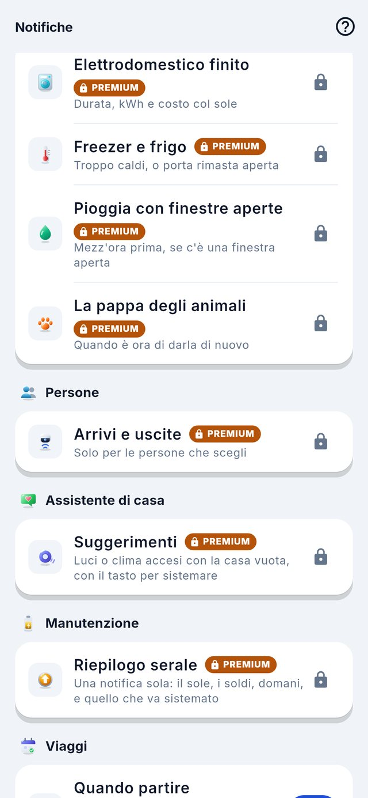
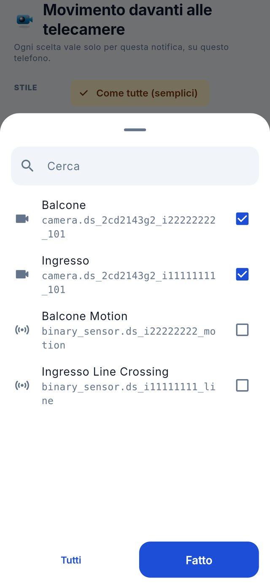
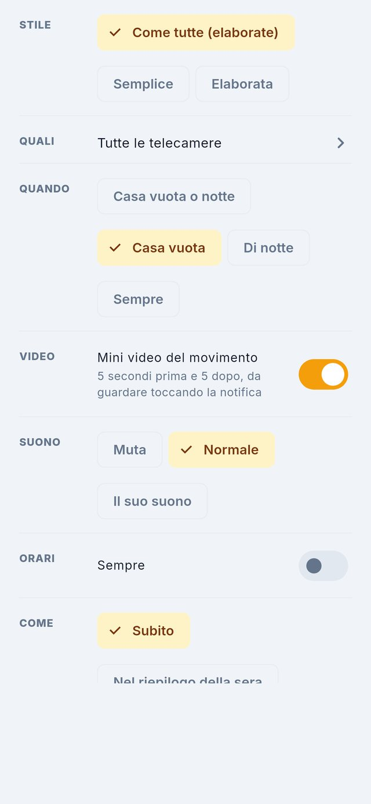
| Stile |
Come tutte, Semplice oppure Elaborata |
| Quali |
Quali elettrodomestici, UPS o telecamere seguire. Si apre un elenco
con «Cerca», le spunte e «Fatto» (seconda schermata) |
| Quando (Movimento) |
«Casa vuota o notte» (di serie), «Casa vuota», «Di notte»,
«Sempre» |
| Video (Movimento, Premium) |
«Mini video del movimento»: 5 secondi prima e 5 dopo (terza
schermata) |
| Solo se |
Per esempio «Solo se il ciclo costa più di … €» |
| Suono |
«Muta», «Normale», «Il suo suono» |
| Orari |
«Sempre» oppure «Solo in queste ore» |
| Come |
«Subito» oppure «Nel riepilogo della sera» (Premium) |
«Prova: mandamela adesso» ti manda subito un
esempio.
Le notifiche urgenti non si possono silenziare:
arrivano sempre e subito.
10.4 Com'è una
notifica, e cosa fare quando arriva
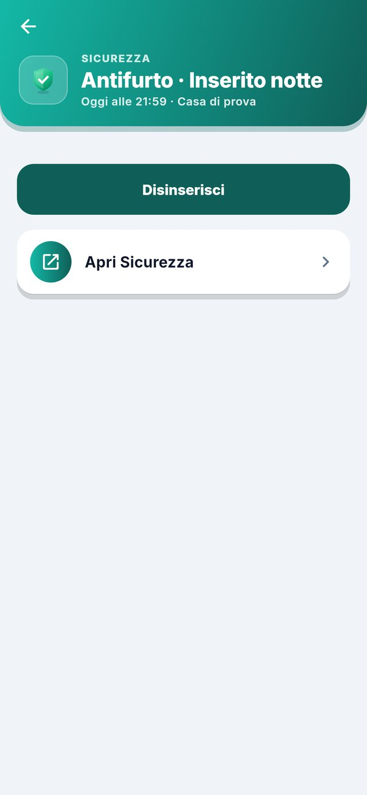
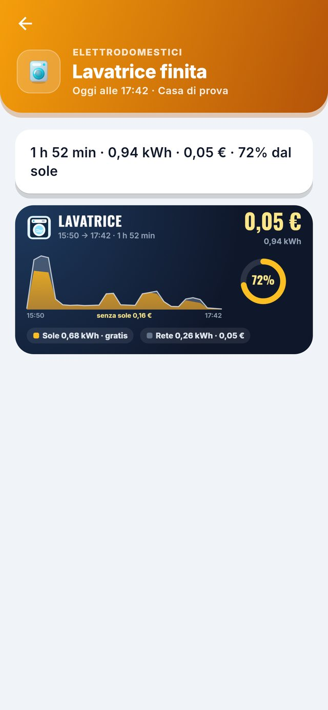
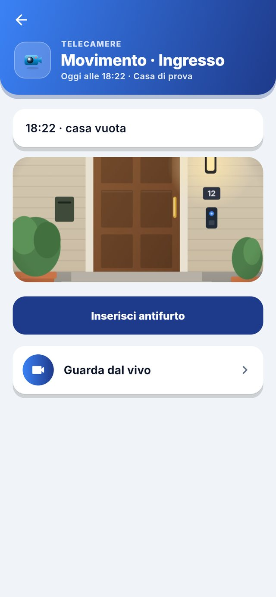
Quattro notifiche aperte nell'app: antifurto inserito, lavatrice finita (con il costo e la parte presa dal sole), movimento davanti a una telecamera, campanello a tutto schermo.
Toccando la notifica si apre la pagina giusta:
Sicurezza, la telecamera, Elettrodomestici, Energia, Persone, Meteo, «La
tua giornata» o GdANav.
I tasti nelle notifiche (valgono 2 ore):
| Antifurto scattato |
«Spegni sirena», «Disinserisci», «Guarda» |
| Campanello |
«Apri cancello» / «Apri», «Ignora» |
| Uscito senza antifurto |
«Inserisci», «Più tardi» |
| Porta o garage aperti |
«Chiudi», «Va bene così», «Più tardi» |
| Movimento |
«Guarda», «Inserisci antifurto» |
| Luci con casa vuota |
«Spegni», «Restano così», «Più tardi» |
| Riepilogo serale |
«Apri la giornata», «OK» |
- «Va bene così» zittisce quel suggerimento per 12
ore.
- «Più tardi» lo rimanda di un'ora.
- Con il lucchetto dell'app acceso, i tasti chiedono prima volto o
impronta.
Il campanello si presenta a tutto schermo, come una
telefonata, con la foto dal vivo della porta e i tasti
«Ignora» e «Apri». «Apri» chiede prima
di sbloccare il telefono. Resta valido per 60 secondi.
Da una notifica di movimento: la foto del momento, «Guarda dal vivo» e il mini video. A destra due suggerimenti dell'assistente («Nessuno in casa da 1 h» con «Spegni le 2 luci», e il garage aperto con «Chiudi»).
10.5 Notifiche
personalizzate (Premium)
Sono regole tue, per esempio «quando il freezer va sopra i -12 °C per
10 minuti, avvisami».
- Notifiche → «Notifiche personalizzate» →
«Aggiungi».
Legenda (schermata a sinistra)
- ① I tre passi: Entità → Condizione →
Messaggio.
- ② L'entità da controllare: toccala e cerca il
sensore.
- ③ La condizione e il valore: «sopra», «sotto»,
«uguale a» o «diverso da», e il valore (per esempio -12 °C).
- ④ Per quanto tempo: subito, 1, 5, 10, 15, 30 minuti
o 1 ora.
- ⑤ Il valore di adesso («tutto a posto» o
«scatterebbe») e il grafico delle ultime 24 ore, con la
soglia tratteggiata.
- ⑥ «Titolo» del messaggio (obbligatorio).
- ⑦ «Prova adesso»: la ricevi subito, solo tu.
- ⑧ «Salva».
- Compila ②, ③ e ④.
- Scrivi il Titolo ⑥ e, se vuoi, il testo «Sotto il
titolo».
- Nella seconda parte (a destra) scegli:
- «Urgenza»: «Bassa», «Normale» oppure «Urgente»
(passa anche in silenzioso);
- «Chi la riceve»: di serie solo tu; un
amministratore può scegliere altre persone;
- «Non ripetere per»: al massimo una volta ogni 15
min, 30 min, 1 h, 3 h, 12 h o 24 h.
- Premi ⑦ «Prova adesso» per vedere com'è, poi
⑧ «Salva».
Ogni casa può avere fino a 40 notifiche personalizzate. Per toglierne
una: aprila → «Togli questa notifica».
10.6
Le notifiche che già mandi con Home Assistant (Premium)
Se hai automazioni di Home Assistant che mandano notifiche alla sua
app, GdAHome le trova e le elenca nella scheda «Da Home
Assistant».
- Premi «Accendi quelle di questo telefono», oppure
tocca una singola automazione (seconda schermata).
- Scegli «Chi la riceve» e se deve «Rispetta
le ore di silenzio».
- Premi «Ricevila anche in GdAHome».
Arrivano nello stesso momento e con lo stesso testo, ma cifrate.
L'app di Home Assistant continua a riceverle: se non le vuoi doppie,
spegnile lì.
11. Il riepilogo
della sera e «La tua giornata»
11.1 Il riepilogo serale
(Premium)
Ogni sera, all'ora che scegli (di serie 20:30),
arriva una notifica sola con la giornata della casa:
energia dal sole, soldi spesi e risparmiati, chi ha consumato di più, un
consiglio per domani e le cose da sistemare.
Per cambiare l'ora: Notifiche → Manutenzione →
«Riepilogo serale» → tocca l'orario «Ogni sera
alle».
11.2 La pagina «La tua
giornata» (Premium)
Si apre toccando il riepilogo serale (o «Apri la
giornata»), oppure da Notifiche → Manutenzione → «La
tua giornata». Per aggiornarla, tira la pagina verso il
basso.
La pagina intera, dall'alto in basso.
| In breve |
Tre o quattro fatti della giornata |
| Energia |
Ora per ora, chi ha consumato di più, i soldi, la batteria di
casa |
| Clima di casa |
Temperature per stanza, quanto è stato acceso il riscaldamento |
| Acqua calda |
Il solare termico e quanto ha fatto risparmiare |
| Auto e consumi |
Ricariche, chilometri, acqua e gas |
| La casa |
Porte aperte, automazioni eseguite, avvisi |
| Rispetto a |
Ieri, la settimana, il mese |
| Domani |
Il meteo e le ore di sole |
| Da sistemare |
Le cose che chiedono attenzione |
12. La Salute dall'orologio
(Premium, solo nell'app sul telefono.) Passi,
battito, pressione, peso, sonno e le altre misure dell'orologio arrivano
a casa e diventano sensori di Home Assistant. Funziona con:
- Apple Salute: iPhone e Apple Watch;
- Health Connect su Android: Galaxy Watch, Pixel
Watch, Fitbit, Amazfit e gli altri. Serve Android 8 o successivo.
12.1 Attivarla
- Menu → «Salute».
- Su Android, se manca Health Connect, premi «Installa Health
Connect».
- Accendi «Manda le misure alla casa» e concedi il
permesso di lettura della salute.
- Lascia acceso «Manda anche ad app chiusa».
- In «Come ti chiama la casa» scrivi il tuo nome: con
questo nome le tue misure compaiono nella plancia.
- In «Cosa mandare» spunta le misure: Passi,
Distanza, Piani saliti, Battito, Battito a riposo, Peso, Massa grassa,
Pressione, Ossigeno, Sonno, Calorie…
- Premi «Manda adesso» per il primo invio.
Ogni persona di famiglia fa lo stesso sul proprio
telefono. Nella sezione Salute della plancia (terza schermata)
compare una persona per telefono. Toccando una scheda apri lo storico a
7, 30 o 90 giorni.
12.2 Se una misura non arriva
- Android: premi «Dai i permessi che
mancano». Se la richiesta non compare, vai in
Impostazioni → Health Connect → Autorizzazioni app →
GdAHome.
- iPhone: vai in Impostazioni → Salute →
Accesso ai dati e dispositivi → GdAHome.
Privacy. Le misure vanno solo alla tua
casa, cifrate. GdAHome non scrive mai in Salute. Spegnendo
l'interruttore, la casa cancella le tue misure.
Chiunque possa aprire la plancia con la sezione Salute vede le
misure. Se vuoi tenerle riservate, metti la sezione in una plancia
visibile solo a te («Chi la vede», capitolo 8).
13. Dispositivi,
integrazioni, aiutanti e Zigbee
Queste pagine cambiano Home Assistant: sono
Premium e solo per chi amministra Home
Assistant. Gli altri utenti non le vedono nel menu.
13.1 Dispositivi
Menu → «Dispositivi».
Legenda (schermata a sinistra)
- In cima, i tre riquadri: quanti dispositivi, quante
entità, quanti non rispondono.
- ⑤ Un dispositivo: nome, marca e modello, e a destra
il suo comando o il suo stato. «Non risponde» in rosso vuol dire
scollegato.
- Sopra l'elenco ci sono le schede «Dispositivi» e
«Integrazioni», il raggruppamento «Per stanza»
/ «Per integrazione» e la casella «Cerca un
dispositivo…».
Toccando un dispositivo si apre il suo foglio (a
destra): marca, modello, integrazione, tutte le sue
entità con i comandi, e «↻ Ricarica
l'integrazione».
13.2 Integrazioni
Tocca la scheda «Integrazioni».
Legenda
- ① I riquadri: «Installate», «Dispositivi» e «Da
sistemare».
- «Da guardare» raccoglie le integrazioni con un
problema. Per esempio «Casa · errore auth» vuol dire che
l'accesso va rifatto: tocca ↻ o «Ripara».
- «＋ Aggiungi» aggiunge un'integrazione nuova.
Aggiungere un'integrazione
- Premi «＋ Aggiungi».
- Cerca il nome (per esempio «Shelly», «Hue», «Sonos»).
- Rispondi alle domande della procedura guidata di Home Assistant, una
alla volta.
Toccando un'integrazione trovi «Ricarica»,
«⚙️ Opzioni», «Disattiva» ed
«Elimina».
«Elimina» toglie l'integrazione con tutti i suoi
dispositivi, e le automazioni che li usano smettono di funzionare. Non
si torna indietro.
13.3 Aiutanti
Menu → «Aiutanti»: interruttori, numeri, elenchi,
timer e sensori «fatti in casa», da usare nelle automazioni.
Legenda (prima schermata)
- ① «Per tipo» / «Tutti»: come raggruppare
l'elenco.
- ② «Cerca un aiutante…».
- ③ Un gruppo (Interruttori): gli aiutanti di quel
tipo. Toccane uno per cambiarne subito il valore, modificarlo o
eliminarlo.
Creare un aiutante
- Premi «＋ Nuovo».
- Scegli il tipo (seconda schermata): Interruttori, Numeri, Elenchi,
Testi, Date e ore, Pulsanti, Timer, Contatori, Programmi.
- Compila il modulo (terza schermata): Nome,
Icona e i campi del tipo scelto.
- Premi «Salva in Home Assistant».
13.4 Zigbee:
aggiungere un dispositivo dal telefono
(Premium, solo app.) La voce
«Zigbee» compare se in casa c'è ZHA o
Zigbee2MQTT.
- Menu → «Zigbee» (prima schermata).
- Leggi «Prima di cominciare»:
- porta il dispositivo vicino a una presa o a una lampadina
già in casa;
- tienilo spento.
- Premi «Apri la rete». Parte un conto alla rovescia
di circa 4 minuti, poi la rete si richiude da sola.
- Accendi il dispositivo e mettilo in abbinamento.
Quasi sempre si tiene premuto il tasto per cinque secondi, finché la
spia non lampeggia.
- Aspetta. Quando compare «È entrato», scrivi un nome
chiaro in «Come lo chiami» (per esempio «Luce
comodino») e premi «Chiamalo così».
- Premi «Adesso mettilo nella plancia»: si apre
«Dove lo metto?» (seconda schermata).
- La plancia ti propone la sezione giusta e ti dice perché (qui: «è
una lampadina»).
- Scegli la «Stanza».
- Se preferisci, sotto «Oppure» scegli un'altra
sezione.
- Premi «Mettilo in Luci» (o nella sezione scelta).
«Più tardi» rimanda.
Dalla pagina Zigbee, toccando un dispositivo già presente, puoi
rinominarlo («Salva il nome»), metterlo nella plancia o
toglierlo dalla rete («Togli dalla rete»).
«Guarda la rete» disegna la mappa della rete.
14. Automazioni e
Pianificatore
(Premium, solo amministratori.) Sono vere
automazioni di Home Assistant: le esegue la casa anche ad app
chiusa. Le ritrovi anche in Home Assistant, in Impostazioni →
Automazioni.
14.1 L'elenco
Menu → «Automazioni».
Legenda (schermata a sinistra)
- ① «Automazioni» e ②
«Pianificatore»: le due schede della pagina.
- I riquadri «Attive», «Spente» e
«Prossima» (la prossima che scatta a un orario).
- ③ «N proposte per la tua casa»: idee pensate sui
tuoi dispositivi. Tocca «Vedi ›»; per ognuna scegli
«Crea» o «No, grazie».
- ④ Come raggruppare: «Per categoria», «Per tipo»,
«Per stanza».
- A destra della ricerca c'è «＋ Nuova», per crearne
una.
Nell'elenco (a destra), ogni automazione ha il suo
interruttore per accenderla o spegnerla. Toccandola
trovi «Esegui ora», «✏️ Modifica»,
«Duplica» ed «Elimina».
14.2 Creare un'automazione
- Premi «＋ Nuova».
- Scegli un modello pronto oppure «Da zero» (prima
schermata qui sotto).
I modelli sono: «Luce col movimento», «Tapparelle a orario», «Clima
spento con finestra aperta», «Avvisami quando la lavatrice ha finito»,
«Tutti fuori: spegni tutto», «Bentornato a casa», «Cronotermostato»,
«Routine a orari», «Calendario a fasce» e «Da zero».
- Compila i tre blocchi dell'editor (seconda e terza schermata):
- QUANDO (cosa la fa partire): a un orario, una porta
che si apre, c'è movimento, un valore che sale o scende, qualcuno che
arriva o esce, l'antifurto, un elettrodomestico che finisce…
- SOLO SE (facoltativo): è notte, fra due orari,
certi giorni, chi è in casa, un'entità in un certo stato. Aggiungi con
«+ Un'altra condizione».
- ALLORA (cosa fare): accendi, spegni, tapparella,
clima, notifica, aspetta… Ogni azione ha il suo numero (1, 2, 3);
aggiungi con «+ Aggiungi un'azione».
- Controlla la frase «Si legge così:», che racconta
l'automazione in italiano. Per esempio: «quando c'è movimento in
Movimento giardino, solo se di notte, accendi Faretti soggiorno al 30%,
aspetta 2 min e spegni Faretti soggiorno».
- Premi «💾 SALVA IN HOME ASSISTANT».
14.3
Il Pianificatore: routine a orari e calendari a fasce
Tocca la scheda «Pianificatore».
- Premi «＋ Crea la prima» (o «＋
Nuova»).
- Scegli il tipo (seconda schermata):
- «Routine a orari»: a ogni orario le sue azioni. Per
esempio «alle 6:30 caldaia, alle 7 tapparelle su».
- «Calendario a fasce»: tiene accesa una cosa nelle
fasce che disegni.
Calendario a fasce (terza schermata)
- Scrivi il «Nome» e scegli in «Cosa
accende» l'entità (per esempio la caldaia o l'antifurto).
- In «Quando vale» scegli «Tutto
l'anno» oppure un periodo.
- In «Le fasce» trascina il dito
sulle barre dei giorni per segnare quando è acceso.
- Per fare prima usa «Copia lun su mar–ven» e
«Copia sab su dom»; «Svuota» cancella
tutto.
- Salva.
Routine a orari
- Scegli i giorni.
- Premi «＋ Aggiungi un orario» e, per ogni orario,
scegli le azioni.
- Scegli «Quando vale» e salva.
15.
In auto e al polso: GdANav, Android Auto, CarPlay, orologi
15.1 GdANav, il navigatore
Nell'app c'è GdANav, un navigatore pensato per
l'auto elettrica che va bene anche a benzina o a gasolio. Offre:
- percorso con guida vocale e lo svincolo ingrandito agli
incroci;
- distributori con i prezzi del giorno;
- traffico, autovelox e meteo lungo la strada;
- segnalazioni degli utenti: incidenti, polizia, lavori, strade
chiuse.
La guida con lo svincolo, il viaggio con le soste alle colonnine, i distributori con i prezzi e le segnalazioni.
Aprirlo
- Menu → «GdANav», oppure tocca la tessera GdANav in
cima al menu.
- «A casa» e «Al lavoro» partono
subito, se quei luoghi sono impostati nel navigatore.
- GdANav si accende da solo quando colleghi il telefono all'auto.
Segnalare qualcosa sulla strada: tocca il
triangolo giallo e scegli cosa (traffico, polizia,
incidente, pericolo, lavori, strada chiusa, autovelox).
L'auto elettrica. GdANav usa l'auto della sezione
Auto della plancia e ne legge dal vivo batteria e
autonomia.
| Auto a benzina o gasolio |
completa |
completa |
| Auto elettrica |
batteria scritta a mano, percorso senza
soste |
batteria letta
dall'auto, soste alle colonnine |
| Traffico, autovelox, meteo |
✅ |
✅ |
| Home Assistant, Android Auto, CarPlay |
— |
✅ |
15.2 Pianificare un
viaggio (GdANav Premium)
I viaggi si pianificano dal telefono (tessera GdANav →
«Pianifica i viaggi») oppure dal computer, nella
sezione GdANav della plancia. Li ritrovi nel
navigatore, su CarPlay e su Android Auto.
- Premi «+ Nuovo viaggio».
- Scegli «Una volta», «Ogni
settimana» oppure «A tappe».
- Se vuoi, scrivi un nome (per esempio «Giro clienti»).
- Controlla la partenza («Casa», oppure
«Cambia») e scrivi «Dove vai?». Scegli
il suggerimento con 📍.
- Scegli «Quando» e «Arrivo entro»
oppure «Parto alle», con l'orario.
- Con l'auto elettrica, nella scheda «L'auto» scegli
la carica alla partenza e quella minima all'arrivo. Il piano mostra le
soste di ricarica.
- In «Avvisi» scegli quanti minuti prima di partire
vuoi l'avviso.
- In «Prepara l'auto e la casa» puoi:
- accendere il clima dell'auto 10 minuti prima;
- avere nell'avviso un tasto per aprire il garage
(non si apre mai da solo).
- Premi «Salva il viaggio».
15.3 La casa in
Android Auto e CarPlay (Premium)
Sullo schermo dell'auto si apre la mappa di GdANav. Il tasto con la
casetta apre i «Comandi rapidi»: una
griglia di tasti di casa (6 su ogni auto, fino a 12 sugli schermi
grandi). Da lì trovi anche:
- «Dispositivi»;
- «Azioni rapide»;
- «Come sta la casa» (energia e chi è in casa).
Scegliere i tasti per l'auto (cancello,
portone…)
- Sul telefono apri GdANav → menu ☰ →
«Comandi rapidi in auto».
- La prima volta la pagina è già compilata con le azioni rapide della
plancia, il cancello e il garage.
- In «I TUOI COMANDI» (fino a 12):
- tocca un comando per cambiare nome, icona e
«Chiedi conferma in auto», poi
«Salva»;
- tieni premuto per spostarlo: i primi 6 si vedono su
ogni auto;
- il tasto meno lo toglie.
- Per aggiungerne altri:
- «AZIONI RAPIDE DELLA PLANCIA» →
«Aggiungi»;
- «DALLA CASA» → cerca e tocca;
- oppure «Crea un comando»:
- scegli il dispositivo;
- scegli cosa fa (per esempio «Apri»);
- scrivi il nome sul tasto;
- premi «Aggiungi in auto».
Le modifiche si salvano da sole. Le serrature chiedono sempre
conferma.
«Quasi a casa»: nella stessa pagina scegli quale
comando proporre arrivando (per esempio «Apri cancello») e
«Quanto prima di arrivare» (100 m – 2 km, di serie 500
m). Arrivando, l'auto chiede «Quasi a casa» con
«Fallo» / «Non ora». Perché funzioni,
imposta «Casa» nel navigatore.
Su iPhone puoi usare Siri: «Portami a casa con
GdAHome», «Portami al lavoro con GdAHome», «Naviga con GdAHome».
15.4 Al polso: Apple
Watch e Wear OS (Premium)
L'orologio non ha impostazioni sue: i suoi tasti
sono gli stessi «Comandi rapidi in auto».
- Apri GdAHome sul telefono una volta con l'orologio
collegato.
- Sull'orologio trovi:
- i comandi rapidi;
- «Dispositivi»;
- «Azioni rapide»;
- «Come sta la casa»;
- il «Navigatore»: «Portami a casa» e «Al lavoro», e
durante la guida la freccia con la distanza.
Se l'orologio dice «Il telefono non risponde», tieni il telefono
vicino. Su Wear OS controlla anche il Bluetooth.
16. GdAHome Premium e licenze
16.1 Base e Premium a
confronto
| L'add-on e la plancia in Home Assistant |
✅ |
✅ |
| Plance |
una, la principale |
fino a 30 per casa |
| Telefoni abbinati alla casa |
fino a 2 |
senza limite |
| Case nell'app |
una |
fino a 10 |
| Dove funziona |
sul Wi-Fi di casa |
anche da fuori,
cifrato |
| L'app dal browser |
— |
✅ |
| Configurare la plancia dal telefono |
— |
✅ |
| Dispositivi, integrazioni, aiutanti, automazioni |
— |
✅ |
| Zigbee dall'app |
— |
✅ |
| Notifiche |
solo sicurezza |
tutte, elaborate, mini video, riepilogo
serale |
| La tua giornata |
— |
✅ |
| Plancia a muro, Colpo d'occhio, Casa 3D |
— |
✅ |
| La Salute dall'orologio |
— |
✅ |
| Al polso e in auto |
— |
✅ |
| GdANav |
gratis |
Premium compreso |
| Segnalazioni, assistenza, aggiornamenti, lucchetto |
✅ |
✅ |
I primi 14 giorni di Premium sono gratis, la prima
volta. Se non ti serve, disdici dal Play Store o dall'App Store prima
che finiscano.
Premium è della casa, non del telefono. Si attiva
una volta per la casa: tutti i telefoni abbinati, e
anche l'app nel browser, diventano Premium insieme. Chi abita con te
non paga un'altra volta.
16.2 Attivare Premium
dall'app
Legenda (schermata a sinistra)
- ① Cosa comprende Premium.
- ② «Annuale»: 49,99 € all'anno (si risparmia il
17%).
- ③ «Mensile»: 4,99 € al mese.
- ④ «Prova gratis per 14 giorni»: avvia la prova e
poi l'abbonamento.
- Menu → «GdAHome Premium».
- Scegli ② o ③.
- Premi ④ e conferma con Google Play o con l'App Store.
- Compare «Fatto: ora la casa è Premium.». La pagina
diventa come quella a destra.
Più in basso nella pagina ci sono altri tre tasti:
- «Gestisci abbonamento»: apre l'abbonamento nel
negozio, per cambiarlo o disdirlo.
- «Ripristina abbonamento»: dopo un cambio di
telefono. Un abbonamento vale per una casa alla
volta.
- «Ho un codice regalo»: vedi qui sotto.
Dal browser non si compra: compri dal telefono, e
vale anche nel browser.
16.3 Con un codice regalo
I codici sono fatti così: GDA-XXXX-XXXX-XXXX e
valgono una volta sola.
Dall'app (anche dal browser)
- Menu → «GdAHome Premium» → «Ho un codice
regalo».
- Scrivi il codice.
- Premi «Riscatta».
Dalla pagina dell'add-on: «Configura GdAHome» →
Licenza → casella ③ e tasto ④ (vedi capitolo 20.4).
16.4 Dal tuo installatore
Se l'impianto te l'ha fatto un installatore, può:
- assegnare Premium direttamente alla tua casa: non
devi fare niente;
- mandarti un codice regalo, che riscatti come
sopra.
16.5 Quando Premium finisce
Non si perde niente. La casa torna Base:
- la plancia principale resta; le altre restano
salvate e tornano con Premium;
- restano abbinati i due telefoni usati più di
recente, gli altri si staccano;
- una casa senza internet resta Premium per fino a 8
giorni.
17.
Impostazioni dell'app, lucchetto e diagnostica
17.1 Impostazioni app
Menu → «Impostazioni app» (solo nell'app sul
telefono).
Legenda
- ① «Plancia leggera» (spenta di serie): ferma le
animazioni e toglie le sfocature. Accendila solo se il telefono va a
scatti.
- ② «Composizione ibrida» (Android): prova a
spegnerla solo se, con lei accesa, l'app va peggio.
- ③ «Chiedilo quando apro l'app»: il
lucchetto. L'app si apre solo con il volto o
l'impronta.
- ④ «Anche quando ci torno»: lo chiede di nuovo se
hai lasciato l'app per più di un minuto.
Accendere il lucchetto
- Accendi ③.
- Più sotto, in «Con che cosa», scegli
«Volto» e/o «Impronta».
- In «E una seconda volta prima di» puoi chiederlo
anche per:
- «Aprire le pagine di gestione»;
- «Comandare dalla scheda Dispositivi»;
- «Togliere una casa dall'app».
Volto e impronta non escono dal telefono: GdAHome
riceve solo un «sì».
17.2 Diagnostica app
Menu → «Diagnostica app»: una pagina di sola lettura
su come va l'app nell'ultimo minuto. Mostra fotogrammi lenti, il
collegamento con la casa e quanto ci mettono i dati. Se l'app va
a scatti, fai una foto di questa pagina e allegala a una
segnalazione.
18. Aggiornamenti e
riavvio della casa
Menu → «Aggiornamenti». Il numero sulla voce dice
quanti aggiornamenti sono in attesa.
Installare un aggiornamento
- In «Da fare» ci sono gli aggiornamenti di Home
Assistant, degli add-on, di GdAHome e dei firmware.
- Tocca «Cosa cambia» per leggere le novità
(schermata a destra).
- Premi «Installa» e conferma con
«Aggiorna».
Quelli segnati «riavvia la casa» riavviano Home
Assistant: per qualche minuto l'app resta senza collegamento, poi si
ricollega da sola.
Riavviare Home Assistant (quando qualcosa non
risponde e non si capisce perché)
- In fondo, scheda «Riavvia Home Assistant» →
«Riavvia».
- Conferma.
- Per qualche minuto luci, tapparelle e automazioni non
rispondono.
Aggiornare l'app. L'app si aggiorna dal Play Store o
dall'App Store. Se è troppo vecchia, compare «C'è una versione
nuova di GdAHome»: premi il tasto e aggiorna. Case e plance
restano come sono.
19. Segnalazioni e assistenza
19.1 Segnalazioni
Servono per un problema, un'idea o
una domanda. Arrivano a chi fa l'app con le
informazioni tecniche già allegate, e la risposta torna nell'app.
Le segnalazioni sono pubbliche: diventano pagine su
GitHub che chiunque può leggere. Non scriverci password, dati personali
o indirizzi.
- Menu → «Segnalazioni» → «Nuova
segnalazione».
- Scegli il tipo: «Problema», «Idea»
oppure «Domanda».
- Scrivi il titolo «In due parole» (per esempio «La
luce del salotto non risponde»).
- In «Racconta» spiega cosa stavi facendo, cosa ti
aspettavi e cosa è successo.
- Se serve, allega foto e video con
«Foto», «Scatta» o
«Video» (massimo 10 MB). La prima volta l'app ricorda
che foto e video saranno pubblici (terza schermata): premi «Ho
capito».
- Premi «Manda».
In «Le tue segnalazioni» (prima schermata) le filtri
per «Da lavorare», «In lavorazione»,
«Chiuse», «Tutte». Apri una
segnalazione per leggere le risposte e aggiungere messaggi.
19.2 Assistenza
Menu → «Assistenza»: una chat
privata con chi fa l'app, che non finisce su nessuna pagina
pubblica.
- Scrivi nella casella «Scrivi a chi fa l'app…» e
invia.
- La risposta arriva qui sotto.
Con il messaggio partono da sole le versioni di plancia, add-on e
app. È la strada più veloce per chiedere aiuto.
20. La pagina
«Configura GdAHome» in Home Assistant
Nella barra laterale di Home Assistant c'è «Configura
GdAHome». Qui gestisci telefoni, plance e licenza. La pagina
Casa è nel capitolo 3.3, l'abbinamento nel capitolo
4.2, le plance nel capitolo 8.
La pagina con due telefoni abbinati.
20.1 Telefoni
Scheda Telefoni: i telefoni e i tablet abbinati, con
il contatore (per esempio «2 di 10»). Ogni riga mostra:
- il nome e il proprietario;
- «Collegato adesso» oppure quando è stato visto
l'ultima volta;
- il modello e la versione dell'app.
Il menu «⋯» della riga ha due voci:
- «Rinomina»: scrivi il nome e premi
Salva.
- «Togli da questa casa»: il telefono esce
subito. Per rientrare dovrà abbinarsi di nuovo con un QR
nuovo.
Hai perso il telefono? Toglilo da qui: da quel
momento non entra più.
20.2 Licenza
Legenda
- ① Lo stato: «Base», oppure «Premium attivo» con la
scadenza e la provenienza (abbonamento, regalo, installatore).
- ② «Ricontrolla adesso»: chiede subito la licenza.
Usalo dopo aver appena comprato Premium. La casa la ricontrolla comunque
da sola ogni 6 ore.
- ③ La casella del codice regalo
(
GDA-XXXX-XXXX-XXXX).
- ④ «Attiva»: riscatta il codice.
- ⑤ «Matricola della casa»: il codice da mandare a
chi ti vuole regalare Premium (con il tasto
Copia).
Al centro, la tabella «Base e Premium» segna con «il
tuo» il piano della tua casa.
La stessa scheda con Premium attivo.
20.3 Avanzate
Legenda
- ① «Versione e aggiornamenti»: la versione
dell'add-on. Gli aggiornamenti arrivano da Home Assistant.
- ② «GdAHome nel browser»: l'indirizzo dell'app dal
browser, con «Apri nel browser». Con Premium funziona
da casa e da fuori.
21. Le opzioni dell'add-on
In Home Assistant: Impostazioni → Add-on → GdAHome →
Configurazione. Dopo ogni cambio premi Salva:
l'add-on si riavvia da solo.
21.1 «La casa»: le opzioni
che contano
| Da fuori casa |
acceso |
L'app entra anche da fuori passando dal centralino. Serve anche per
notifiche e segnalazioni. |
| Il codice di chi ti ha fatto l'impianto |
vuoto |
Lascialo vuoto, a meno che un installatore non ti abbia dato un
codice (capitolo 22). |
| Ogni quanto parte un rapporto |
1 minuto |
Conta solo se il codice sopra è scritto. |
| Lascia che chi ti ha fatto l'impianto aggiorni da
lontano |
spento |
Può solo installare aggiornamenti già in attesa e riavviare Home
Assistant. |
| Lascia che chi ti ha fatto l'impianto configuri la plancia
da lontano |
spento |
Può vedere e cambiare com'è fatta la plancia. |
| Lascia che la plancia porti il marchio di chi ti ha fatto
l'impianto |
acceso |
Il nome e il logo dell'installatore sulla plancia. |
| Quanto vive un QR di abbinamento |
5 minuti |
Da 1 a 60. |
| Dopo quanto un telefono va riabbinato |
90 giorni |
0 = mai. |
| Quanti telefoni insieme |
10 |
Con Base al massimo 2; con Premium senza limite. |
21.2 Le altre sezioni
- «Chi installa»: solo per chi monta GdAHome nelle
case degli altri. In casa tua lascia tutto com'è.
- «Chi gestisce il cruscotto» e
«L'assistenza»: servono a una sola casa al mondo.
Lasciale vuote.
- «Avanzate»:
- la porta dell'app (8098): cambiala solo se è già usata da un altro
programma;
- «Quanto scrive il registro»: lascia «info».
22. Se la casa te
l'ha montata un installatore
Il tuo installatore può tenere d'occhio l'impianto senza
entrare in casa tua. Decidi tu, con interruttori che puoi
spegnere quando vuoi.
22.1 Collegare la casa
all'installatore
- L'installatore ti dà un codice di abbinamento: 16
caratteri, valido un giorno.
- In Home Assistant apri Impostazioni → Add-on → GdAHome →
Configurazione.
- Incolla il codice in «Il codice di chi ti ha fatto
l'impianto» e premi Salva.
22.2 Cosa vede e cosa non
vede
| Come sta la macchina: processore, memoria, disco, temperatura |
Se le luci sono accese o le porte aperte |
| Rete e internet |
Chi è in casa e dove sono le persone |
| Versioni, add-on, aggiornamenti in attesa |
Cosa riprendono le telecamere |
| Quanti telefoni e i nomi delle plance |
Il nome del tuo Wi-Fi |
| I nomi dei dispositivi che non rispondono, le batterie scariche,
l'ultimo backup |
|
Il rapporto lo leggi parola per parola in «Configura GdAHome»
→ Installatore → «Leggi l'ultimo rapporto, parola per
parola».
22.3 I permessi in più
(spenti di serie)
- «…aggiorni da lontano»: può installare gli
aggiornamenti già pronti (sempre dopo un backup) e riavviare Home
Assistant. Nient'altro.
- «…configuri la plancia da lontano»: può sistemare
la plancia senza venire. Vede i nomi di stanze, dispositivi ed entità,
mai le telecamere né gli stati dei sensori.
- «…porti il marchio» (acceso di serie): la plancia
mostra il suo nome e il suo logo.
22.4 Smettere
In «Configura GdAHome» → Installatore premi
«Smetti di mandarlo» e conferma con
Smetti.
23. Per chi installa: il
cruscotto
Chi monta impianti per i clienti ha il cruscotto per
installatori («Gestione installatore»): tutti
gli impianti in una pagina e le licenze Premium da dare ai clienti.
23.1 Come si comincia
- Chiedi l'accesso su gdahome.org/#contatti: ricevi
il codice del cruscotto e il pacchetto di licenze.
- Sul tuo Home Assistant (mai su quello di un
cliente) apri le opzioni dell'add-on, sezione «Chi
installa».
- Accendi l'interruttore, scrivi il codice e premi
Salva.
- Compare «Gestione installatore» nella barra
laterale e nel menu dell'app.
Il cruscotto ha quattro schede: Impianti · Aggiornamenti ·
Abbinamento · Licenze.
23.2 Collegare un cliente
- Scheda Abbinamento → «Genera
codice» e copialo. Vale un giorno e per un
solo impianto.
- A casa del cliente: Impostazioni → Add-on → GdAHome →
Configurazione → incolla in «Il codice di chi ti ha
fatto l'impianto» → Salva.
- Entro un minuto l'impianto compare in «Nuovi
impianti»: dagli un nome e premi Salva.
23.3 Tenere d'occhio gli
impianti
- La scheda Impianti colora ogni impianto: in
ordine, da verificare,
offline.
- «Da verificare ora» mette in cima quelli che
chiedono qualcosa.
- Ogni impianto ha dieci controlli al giorno:
plancia, telefoni, collegamento da fuori, dispositivi, aggiornamenti,
add-on, rete, macchina, backup, batterie.
- Ricevi un avviso quando una casa smette di farsi sentire e quando
riprende.
Se il cliente l'ha permesso, dalla scheda dell'impianto puoi
installare gli aggiornamenti (uno alla volta, dopo il
backup) e riavviare Home Assistant.
23.4 Le licenze per i clienti
Nella scheda Licenze, scegli App e
Durata, poi una delle due strade:
- «Assegna all'impianto»: la casa è Premium
subito;
- «Genera un codice»: lo mandi al cliente, che lo
scrive in «Ho un codice regalo».
Una licenza tolta o un codice annullato torna nel tuo
pacchetto.
24. Se qualcosa non va
| Il QR non funziona |
Vale 5 minuti e una volta sola: generane uno nuovo, oppure usa il
codice a mano (4.3). |
| «Fuori casa serve GdAHome Premium» |
Con Base la casa si apre solo dal Wi-Fi di casa. |
| Da fuori non entro, ma ho Premium |
In «Configura GdAHome» → Casa leggi il motivo sotto «Da fuori casa».
Controlla che l'opzione «Da fuori casa» sia accesa. |
| «Da fuori casa: cade di continuo» |
C'è un'altra copia della casa accesa (per esempio un backup
ripristinato su un'altra macchina): spegni GdAHome sulla copia. |
| «Riconnessione…» |
L'add-on si sta aggiornando o Home Assistant si sta riavviando:
l'app riprova da sola. |
| «Questo telefono è stato staccato» |
Riabbinalo con un QR nuovo. |
| «Con Base si abbinano al massimo 2 telefoni» |
Sono rimasti i due usati più di recente. Con Premium riabbini anche
questo. |
| «Non hai plance associate alla tua utenza» |
L'amministratore deve abilitarti: «Configura GdAHome» → Plance →
Gestisci → «Chi la vede». |
| La plancia dice che Home Assistant va riavviato |
Riavvia Home Assistant (3.3). |
| Le notifiche non arrivano |
Controlla l'interruttore principale, il permesso del telefono e
l'opzione «Da fuori casa», poi premi «Manda una notifica di prova». |
| La Salute non arriva |
Paragrafo 12.2. |
| L'app va a scatti |
Accendi «Plancia leggera» (17.1); se non basta, manda una
segnalazione con la foto di «Diagnostica app». |
| Manca la voce «Zigbee» |
Serve ZHA o Zigbee2MQTT, Premium, e l'app sul telefono. |
| Mancano Dispositivi, Automazioni, Aiutanti |
Sono solo per chi amministra Home Assistant, e con Premium. |
| Ho perso il telefono |
«Configura GdAHome» → Telefoni → ⋯ → «Togli da questa casa». |
Se il problema resta, scrivi in Assistenza o apri
una Segnalazione (capitolo 19).
25. Domande frequenti
Si installa su Home Assistant in Docker? No: su
Container e Core gli add-on non esistono. Serve OS o Supervised.
L'add-on serve solo per l'app? No: la plancia si usa
anche in Home Assistant, da qualunque browser di casa.
Devo installare anche l'integrazione
DashboardModern? No: la plancia è già nell'add-on.
Siamo in quattro in casa: paghiamo quattro volte?
No. Premium è della casa: tutti i telefoni abbinati sono Premium
insieme.
Il mio installatore mi ha dato un codice. Dove lo
metto? Dipende dal codice:
- codice regalo (
GDA-…): nell'app,
«GdAHome Premium» → «Ho un codice regalo»;
- codice di abbinamento (16 caratteri): nelle opzioni
dell'add-on, in «Il codice di chi ti ha fatto l'impianto».
Devo creare un account? No.
Qualcuno può vedere le mie telecamere? No. Da fuori
i messaggi viaggiano cifrati fra telefono e casa, e il segreto di Home
Assistant non lascia mai l'add-on.
Le automazioni create dall'app funzionano ad app
chiusa? Sì: sono automazioni di Home Assistant e le esegue la
casa.
Cosa succede se disdico Premium? Non perdi niente:
la casa torna Base e quello che hai preparato resta salvato.
L'app parla inglese? Sì: sceglie da sola la lingua
del telefono (italiano o inglese).
26. Privacy, contatti e chi
c'è dietro
I tuoi dati restano in casa. Nessun account, nessuna
pubblicità, nessun tracciamento. Per sapere se una casa è Premium,
l'add-on manda solo un identificativo anonimo. I pagamenti li gestiscono
Google e Apple. I dettagli sono nell'informativa sulla privacy e
nei termini d'uso.
Contatti
Chi c'è dietro. GdAHome la fa CRV
Immobiliare S.r.l., impresa di impianti elettrici e tecnologici
di Aversa (CE).
27. Configurare la
plancia, scheda per scheda
Questo capitolo spiega ogni scheda dell'editor della
plancia, una per una: a cosa serve, cosa trovi e come si
configura. È lo stesso testo che trovi dentro la
plancia: nell'editor, sotto la casella di ricerca, il tasto
«📖 Come si configura questa scheda» apre la guida
della scheda che stai guardando, e «👉 Mostrami» ti
porta sul campo giusto (paragrafo 27.0).
Come si apre l'editor
- Apri la Configurazione: dall'app, menu → «Configurazione
plancia»; dalla plancia, la voce CONFIG in
fondo alla barra.
- Premi «Configura Entità»: si apre l'EDITOR
DASHBOARD.
- Scegli la famiglia (Plancia, Energia, Clima e
acqua, Casa, Sicurezza, Avvisi, Alexa, Macchine e rete) e poi la
scheda. Oppure scrivi una parola in «Cerca in
tutta la configurazione…».
Quasi tutte le schede funzionano allo stesso modo:
- «Scegli entità ›» apre l'elenco delle entità di
Home Assistant, con la ricerca; «✏️ Modifica» permette
di scriverla a mano.
- La tendina della stanza mette l'elemento nella
stanza giusta.
- ▲ ▼ cambiano l'ordine; 🗑
toglie.
- In cima o in fondo c'è l'interruttore «🟢 Sezione visibile
in dashboard — tocca per nascondere».
- Alla fine si preme «💾 Salva sezione»: senza, le
modifiche non restano.
27.0 La guida
interattiva dentro il Config
- Nell'editor, sotto la ricerca, premi «📖 Come si configura
questa scheda». Si apre la guida della scheda aperta: sul
telefono nella metà bassa dello schermo, sul computer a destra. La
scheda resta visibile.
- Premi «Comincia ▶»: il primo passo si evidenzia e
il campo di cui parla si accende di rosso nella scheda,
con il numero del passo.
- Fai quello che dice il passo, poi «Avanti ▶». Su
ogni passo c'è anche «👉 Mostrami», per tornare a quel
campo.
- Sotto i passi: «🔎 Cosa trovi in questa scheda» e
«💡 Consigli».
- Cambiando scheda, la guida segue: mostra sempre quella aperta.
- «🧭 Da dove comincio» apre il percorso consigliato
per una casa nuova: per ogni tappa «Vai ›» apre la
scheda con la sua guida, e la spunta «Fatto» ti ricorda
a che punto sei (resta su quel dispositivo).
- ✕ chiude la guida.
Sul computer la guida sta a destra: qui la scheda Energia, al passo 1, con la linguetta «FLUSSI ED ENTITÀ» accesa.
27.1 Impostazioni (Plancia)
A cosa serve. È la scheda che si apre per prima. Qui
dai il nome alla plancia, scegli la lingua, decidi quali sezioni si
vedono e in che ordine stanno nella barra.
Cosa trovi
- Generali: il nome della dashboard e l'utente
amministratore. Si salvano con «💾 Salva
generali».
- «🌍 Lingua della plancia»: con «Lingua di Home
Assistant» la plancia segue il profilo di chi guarda; scegliendo una
lingua la fissi per questa plancia.
- «🖥️ Modo chiosco»: la plancia a tutto schermo,
sopra la barra laterale di Home Assistant. Vale solo per questa plancia
e solo su questo apparecchio; sul telefono è già acceso.
- «📌 Intestazione fissa»: la parte alta (menu, nome
della casa, meteo) resta ferma mentre il resto scorre. Vale solo su
questo apparecchio.
- «🗣️ Assist»: aggiunge un tasto che apre
l'assistente di Home Assistant, a voce o scrivendo. Puoi far leggere la
risposta ad alta voce («Leggi la risposta ad alta voce») e scegliere
l'«Assistente» (vuoto = automatico).
- «Le sezioni della plancia»: tutte le sezioni divise
per famiglia, ognuna con il suo interruttore (visibile o nascosta) e il
tasto «Configura» che apre la sua scheda.
- «Ordine navbar»: l'elenco delle voci della barra.
Si spostano trascinandole da ⠿ o con le frecce ▲ ▼; la matita ✏️ serve a
rinominare la voce.
- «Disposizioni salvate» e «Disegni
salvati»: le pagine e i disegni che hai cambiato nelle
anteprime. «Ripristina» li rimette come di serie.
- «Rilevamento e manutenzione»: «🪄 Avvia
autorilevamento» e «🗑️ Reset totale
configurazione».
Come si configura
Nome e amministratore
- Scrivi il nome della plancia e scegli l'utente amministratore.
- Premi «💾 Salva generali».
Mostrare o nascondere una sezione
- Scorri fino a «Le sezioni della plancia».
- Tocca l'interruttore della sezione: verde = visibile.
- Per sistemarne il contenuto, premi «Configura»
accanto.
Riordinare la barra
- In «Ordine navbar» trascina la voce, oppure usa ▲ ▼.
- Per cambiarle nome tocca ✏️, scrivi il nuovo nome e premi
Salva.
Partire con una casa nuova
- Premi «🪄 Avvia autorilevamento»: la plancia
esamina le entità di Home Assistant e compila da sola luci, clima,
stanze, telecamere e collegamenti.
- Controlla e correggi il risultato nelle altre schede.
Consigli
- «Reset totale configurazione» cancella tutta la
configurazione salvata, su tutti i dispositivi
collegati. Prima fai un backup (vedi 27.9).
- Modo chiosco e Intestazione fissa valgono solo sull'apparecchio che
stai usando: su un altro tablet vanno riaccesi.
27.2 Home (Plancia)
A cosa serve. Decide com'è fatta la pagina Home:
l'ordine dei blocchi, quali stanze si vedono, il meteo e l'antifurto in
testa, la riga di «pastiglie» sotto il meteo e le immagini dei
riquadri.
Cosa trovi
- «🏠 Ordine dei blocchi della Home»: un'anteprima
con i blocchi «Intestazione e menù», «Intestazione col meteo»,
«Persone», «Widget», «Azioni rapide», «Stanze», «Dispositivi». Si può
guardare come «Telefono», «Tablet» o «Computer».
- «Pastiglie di stato»: la riga in cima alla Home
(caldaia accesa, antifurto inserito). Compare da sola quando ha qualcosa
da dire.
- «🛋️ Stanze in plancia»: le stanze da mostrare in
Home, con temperatura e numero di cose accese. Nessuna spuntata = nessun
blocco stanze.
- Il riquadro «🏠 Home»: le entità principali della
Home.
- Il meteo (un'entità
weather).
L'interruttore «Usa entità proprie per la stazione meteo», se acceso, ti
lascia scegliere sensori tuoi; spento, temperatura, umidità e vento si
leggono dall'entità meteo.
- L'antifurto (la centrale), con «Modalità da
mostrare» (Casa, Fuori, Notte, Vacanza, Parziale: compaiono solo quelle
che la centrale accetta).
- «🚨 Quando è scattato»: l'entità che dice che
l'allarme sta suonando, il valore che vuol dire «scattato» (vuoto =
«on»), la «Sirena (facoltativa)» e «Che cosa l'ha fatto scattare
(facoltativo)».
- «Tasti d'inserimento su misura»: per chi non ha una
centrale (antifurto fatto con ESPHome, script o un elenco di
modalità).
- Accanto a ogni casella c'è «NEL WIDGET»: decide se
quel valore compare anche nella tessera della Home.
- «🏠 Barra sotto il meteo»: le pastiglie da mostrare
(Posta, Rifiuti, Sicurezza, Porte, Finestre, Luci, Temperatura,
Pioggia…), l'ora dopo cui si annuncia il ritiro rifiuti di domani, e i
sensori: cassetta della posta, temperatura, umidità, intensità della
pioggia, pioggia caduta oggi.
- «✨ Le tue entità nella fascia»: pastiglie tue (per
esempio il livello del serbatoio), anche visibili solo in certe
condizioni.
- «🖼️ Immagini dei riquadri»: tutte le card della
plancia (luci, clima, tapparelle, telecamere, stanze, elettrodomestici,
azioni rapide, tessere della Home…). Ognuna può avere una foto o un
disegno.
Come si configura
Riordinare i blocchi
- Nell'anteprima trascina un blocco dove lo vuoi (sul telefono tieni
premuto un attimo), oppure usa ▲ ▼.
- Premi «Applica». «Annulla» scarta,
«Ripristina» torna all'ordine di serie.
Scegliere le stanze in Home
- In «🛋️ Stanze in plancia» spunta le stanze che vuoi vedere.
Meteo e antifurto
- Nel riquadro «🏠 Home» tocca la casella del meteo e scegli l'entità
con «Scegli entità».
- Fai lo stesso per la centrale d'allarme e togli le modalità che non
usi.
- In «🚨 Quando è scattato» scegli dove si legge l'allarme e, se vuoi,
la sirena.
- Senza centrale: «＋ Aggiungi un tasto», dai il nome
e l'icona, scegli cosa premere, dove si legge se è inserito e, se vuoi,
un PIN (4–8 cifre); poi «Salva il tasto».
Barra sotto il meteo
- Spunta le pastiglie che vuoi.
- Scegli i sensori (posta, temperatura, umidità, pioggia) con «Scegli
entità».
- Per aggiungerne una tua: «＋ Aggiungi un'entità»,
scegli l'entità, il nome, il segno e il colore e, se vuoi, quando deve
comparire.
Mettere un'immagine in un riquadro
- In «🖼️ Immagini dei riquadri» tocca 🖼️ accanto alla card.
- Scegli «Carica una foto» (dal telefono o dal
computer) oppure «Scegli dai disegni».
- Sistema l'inquadratura e lo zoom. «Togli immagine»
fa tornare il disegno di sempre.
Alla fine premi «💾 Salva sezione».
Consigli
- I sensori della pioggia scelti qui sono gli stessi che usa
l'Irrigazione (27.20) e il Meteo
(27.17): si mettono una volta sola.
- La foto caricata resta in casa, nell'add-on: non passa da server
esterni.
- L'ordine dentro ogni blocco non si fa qui: le persone nella
loro scheda, le tessere in Widget, le azioni rapide in
Azioni.
A cosa serve. Sceglie quali tessere si vedono nella
Home e in che ordine, e prepara le tessere d'avviso che compaiono da
sole.
Cosa trovi
- «Anteprima della Home»: le tessere come le vedi in
Home, con i valori di adesso. Si guarda come «Telefono», «Tablet» o
«Computer». Si trascinano, e l'occhio le nasconde.
- «Compaiono quando servono»: le tessere che non sono
in Home adesso ma arrivano da sole (Assistenza, Aggiornamenti, Caldaia,
Allerte, Dispositivi non connessi, Stampanti…).
- «Tessere compatte»: «Mai», «Auto» (si stringono
solo sugli schermi stretti) o «Sempre».
- «Avvisi personalizzati a finestra»: quando un
avviso personalizzato si accende, la plancia lo apre da sola.
- L'elenco di tutte le tessere, con ⠿ e ▲ ▼ per
l'ordine. Alcune hanno una scelta in più: Luci e Prese «Solo quando
qualcosa è acceso», Elettrodomestici «Solo quando uno è in funzione»,
Clima e Temperatura «Cosa mostra» (la media o una sola
unità/stanza).
- «⭐ In evidenza · le tue tessere»: una tessera per
un'entità qualsiasi, anche di una sezione che non esiste.
- «🔔 Widget di avviso»: i sensori sorvegliati dalle
tessere d'avviso (batterie, allagamenti, fumo e gas) e gli avvisi
personalizzati.
Come si configura
Ordinare e nascondere le tessere
- Nell'anteprima trascina la tessera (sul telefono tieni premuto un
attimo).
- Tocca l'occhio per nasconderla.
- Premi «Applica». «Ripristina»
torna come di serie.
Aggiungere una tessera «In evidenza»
- Premi «＋ Aggiungi entità».
- Scegli l'entità, il nome e, se vuoi, l'icona e la stanza.
- Accendi «Tessera a sé in Home» se la vuoi da sola;
altrimenti finisce nel riassunto «In evidenza».
- Premi «Salva entità».
Aggiungere un avviso
- In «🔔 Widget di avviso» scegli il tipo: «🔋 Batterie (%)», «💧
Allagamenti», «💨 Rilevatori fumo e gas» o «⭐ Personalizzato».
- Scegli l'entità con «Scegli entità».
- Premi «＋ Aggiungi avviso».
Alla fine premi «💾 Salva sezione».
Consigli
- Porte e finestre non si mettono più qui: le mostra la tessera
Finestre, con i sensori delle tapparelle (27.25).
- Le tessere d'avviso restano nascoste finché non hanno qualcosa da
dire: è normale non vederle.
27.4 Azioni (Plancia)
A cosa serve. Prepara i tasti rapidi della Home, per
esempio «Luci» o «Cancello». Sono anche i comandi proposti in auto e
sull'orologio.
Cosa trovi
- «⚡ Azioni rapide (Home)»: l'elenco delle azioni,
con ▲ ▼ per l'ordine, ✏️ per modificare e 🗑️ per togliere. Per alcune
puoi scegliere una stanza.
- «GRUPPO»: facoltativo. Le azioni con lo stesso
gruppo stanno insieme in Home, sotto un titolo che si chiude con un
tocco.
- Il tipo di azione: «💡 Popup luci — scegli TU le
luci», «💡 Popup TUTTE le luci», «🔌 Popup TUTTE le prese», «❄️ Popup
Clima», «🛡️ Popup Antifurto», «🧺 Popup Lavatrice», «🔀 Toggle entità»,
«🔊 Lettore multimediale», «📜 Script», «🎬 Scena».
Come si configura
- Scegli il tipo di azione dalla tendina.
- Scrivi il nome e, se vuoi, l'icona.
- Per «Toggle entità», «Script» e «Scena» scegli anche l'entità da
comandare. Se è un menu a tendina, scegli quale voce deve mettere.
- Se vuoi, scrivi un messaggio di conferma (per esempio «Sei
sicuro?»).
- Premi «＋ Aggiungi azione rapida».
- Per «Popup luci — scegli TU le luci», dopo aver premuto Aggiungi
scegli le luci da una lista con ricerca.
- Premi «💾 Salva sezione».
Consigli
- I popup «pronti» (tutte le luci, clima, antifurto…) non chiedono
un'entità: basta il nome, anche facoltativo.
- Il messaggio di conferma è utile per le azioni che non si possono
annullare, come aprire il cancello.
27.5 Automazioni (Plancia)
A cosa serve. Mostra tutte le automazioni di Home
Assistant, a gruppi: le crei, le modifichi, le accendi e le spegni. Le
esegue Home Assistant, anche con la plancia e l'app chiuse. È una
funzione Premium.
Cosa trovi
- L'interruttore della sezione: mostra o nasconde le
Automazioni nella plancia.
- «PROSSIMO» e «ULTIME ESEGUITE»:
l'automazione che partirà fra poco e quelle appena eseguite.
- «Suggerite per la tua casa ✨»: proposte fatte dai
tuoi dispositivi (per esempio «avvisami quando la lavastoviglie ha
finito»), con il perché. Per vederle tutte, «Vedi
tutte».
- «Le automazioni di casa»: l'elenco, raggruppato
«Per categoria», «Per tipo» o «Per stanza», con la ricerca 🔍 e il tasto
«＋ Nuova».
Come si configura
- Per un suggerimento, premi «Crea» se ti va bene,
«No, grazie» per scartarlo.
- Per una nuova automazione premi «＋ Nuova» (vedi il
capitolo 14).
- Per accendere, spegnere o modificare un'automazione, aprila
dall'elenco.
Consigli
- Le automazioni vivono in Home Assistant: cambiarle qui le cambia
anche lì.
27.6 A muro (Plancia)
A cosa serve. Configura il pannello per il tablet
appeso al muro: le pagine (le linguette in alto) e cosa c'è in ognuna. È
una funzione Premium (vedi anche 8.3).
Cosa trovi
- «Usa questa plancia a muro»: vale su ogni tablet
che apre questa plancia.
- «Le pagine di questo tablet»: l'elenco delle
pagine.
- «＋ Aggiungi una pagina»: i tipi di pagina, fra cui
Stanza, Scene, Ingresso, Personalizzata, Tutte le luci, Clima, Tutte le
tapparelle, Ambienti, Telecamere, Energia, Musica, Meteo, Mixer audio,
Telecamera con comandi, Comandi di regia.
- «⚙️ Altre impostazioni»: orientamento, tema, meteo,
riposo, notte, luminosità, PIN.
Come si configura
- Accendi «Usa questa plancia a muro».
- Premi «＋ Aggiungi una pagina» e scegli il
tipo.
- Compila la pagina con quello che chiede (stanza, comandi,
letture…).
- Ripeti per ogni pagina che vuoi.
- Apri «⚙️ Altre impostazioni» per orientamento,
riposo, notte, luminosità e PIN.
- Premi «💾 Salva sezione».
Consigli
- Sul tablet, tenendo premuto l'orologio per due secondi si torna a
questa scheda.
27.7 Le tue entità (Plancia)
A cosa serve. Aggiunge un'entità in fondo a una
sezione che ha caselle fisse, come Energia o Sicurezza, dove non ci
sarebbe posto per un sensore in più.
Cosa trovi
- L'elenco delle entità aggiunte, con il nome e la
scheda dove compaiono (per esempio «Cisterna» in Irrigazione). ✏️ per
modificare, 🗑️ per togliere.
- «＋ Aggiungi entità».
Come si configura
- Premi «＋ Aggiungi entità».
- Scegli l'entità con «Scegli entità».
- In «In quale scheda» scegli la sezione dove deve
comparire.
- Se vuoi, scrivi un nome («Nome (facoltativo)»), scegli l'icona e la
stanza.
- Premi «Salva entità», poi «💾 Salva
sezione».
Consigli
- L'entità compare in fondo alla pagina scelta. Se si può accendere,
si accende da lì.
- Le schede fatte a elenco (Luci, Prese, Telecamere) non servono
questa scheda: lì l'entità si aggiunge direttamente.
27.8 Le tue sezioni (Plancia)
A cosa serve. Crea una sezione nuova, con un titolo
e le entità che vuoi tu, per le cose che la plancia non disegna ancora
(per esempio un acquario).
Cosa trovi
- L'elenco delle tue sezioni, ognuna con titolo,
icona e numero di entità. ✏️ per modificare, 🗑️ per togliere.
- «Mostrala nella barra»: la sezione compare nella
barra come le altre.
- «Come si vedono le entità»: «A righe» o
«Piccole».
- «LE ENTITÀ»: le entità della sezione. Per ognuna
puoi scegliere gli «Attributi da mostrare».
Come si configura
- Premi «＋ Aggiungi sezione».
- Scrivi il titolo e scegli l'icona.
- Premi «＋ Aggiungi entità» e scegli l'entità.
Ripeti per ognuna.
- Se vuoi, apri «Attributi da mostrare» e spunta quelli che ti
servono.
- Accendi «Mostrala nella barra» e scegli come si
vedono le entità.
- Premi «💾 Salva sezione».
Consigli
- La sezione non toglie niente alle altre. Quando arriverà una sezione
fatta apposta, potrai cancellare questa.
27.9 Backup (Plancia)
A cosa serve. Salva in un file tutta la
configurazione della plancia (sezioni, stanze, entità, persone, auto…) e
la rimette al suo posto quando serve.
Cosa trovi
- «⬇️ Scarica il backup»: «💾 Scarica il
file» (un file JSON) e «📋 Copia negli
appunti» (lo stesso contenuto come testo).
- «♻️ Ripristina da un backup»: «📁 Scegli il
file», oppure incolla il testo del backup.
Come si configura
Fare un backup
- Premi «💾 Scarica il file».
- Conserva il file in un posto sicuro.
Ripristinare
- Premi «📁 Scegli il file» e scegli il backup,
oppure incolla il testo.
- Conferma. La plancia rimette la configurazione e si ricarica.
Consigli
- Il ripristino non cancella quello che nel backup non c'è: le voci
assenti restano come sono.
- Fai un backup prima di un «Reset totale configurazione» o di grandi
modifiche.
27.10 Runtime (Plancia)
È una pagina di diagnostica tecnica (versioni, indirizzi, tempi di
avvio): serve solo all'assistenza, che potrebbe chiederti di
leggerla.
27.11 Energia (Energia)
A cosa serve. Collega i sensori di energia di Home
Assistant (casa, rete, fotovoltaico, batteria) alla pagina Energia e
alla sua tessera in Home. Qui si mettono anche carichi, report e
costi.
Cosa trovi
- «✋ Sposta e nascondi»: l'anteprima della sezione
com'è sulla plancia («📱 Telefono» o «🖥️ Computer»). Si apre con
«▶ Apri l'anteprima»: si trascinano i riquadri e si
nascondono con l'occhio. Telefono e computer hanno ognuno la sua
disposizione.
- Gli impianti: le linguette in alto (per esempio
«Impianto», «Dependance») e «+ Aggiungi impianto». Ogni
impianto ha il suo misuratore, il suo fotovoltaico, la sua batteria e i
suoi carichi. Per ognuno: «Nome impianto» e, in Home, «Una
tessera sola» (la somma) o «Una per impianto».
L'impianto principale non si può eliminare.
- Quattro linguette:
- «FLUSSI ED ENTITÀ»: i riquadri «🏠 Casa», «🔌 Rete
· prelievo», «🔌 Rete · immissione», «☀️ Fotovoltaico», «🔋 Batteria ·
carica», «🔋 Batteria · scarica». In ognuno: «Potenza istantanea» (W),
«Energia giornaliera», «Energia mensile», «Energia annuale» e «Contatore
energia totale» (kWh). Accanto, l'interruttore «NEL WIDGET».
- «CARICHI E DISPOSITIVI»: i cerchi sotto la Casa
(per esempio una stanza o la cucina) e gli elettrodomestici dentro
ciascuno.
- «REPORT»: le voci del Report Energia, ognuna con
etichetta, icona e contatore per lo storico.
- «IMPOSTAZIONI»: il costo dell'energia e le fasce
orarie, la soglia di potenza, le bollette e i fornitori di energia.
- «⚡ Come leggere la configurazione Energia»: un
riassunto che dice da dove la plancia legge giorno, mese, anno e
storico.
Come si configura
I flussi
- Apri la linguetta «FLUSSI ED ENTITÀ».
- Apri il riquadro «🏠 Casa» e tocca ogni casella per scegliere il
sensore con «Scegli entità».
- Fai lo stesso per Rete, Fotovoltaico e Batteria.
- Il titolo di ogni riquadro dice quante caselle hai compilato (per
esempio «5/5 configurati»).
- Premi «💾 Salva sezione».
Un secondo impianto
- Premi «+ Aggiungi impianto» e dai il nome.
- Compila le sue caselle: parte da zero e non tocca il primo.
- Scegli se in Home vuoi una tessera sola o una per impianto.
I carichi
- Apri «CARICHI E DISPOSITIVI» e premi
«Aggiungi carico».
- Dai il nome, l'icona e la stanza, e scegli il sensore di
potenza.
- Con «Aggiungi dispositivo» o «Scegli da
Elettrodomestici» metti gli apparecchi dentro il carico.
- Premi «Salva carichi».
Consigli
- Il «Contatore energia totale» è il sensore che
cresce sempre: se c'è, giorno, mese e anno vengono calcolati da lui e i
sensori di periodo non vengono letti. In quel caso puoi svuotarli con
«Svuota i campi di periodo».
- Lo storico e i mesi precedenti si leggono sempre dal contatore
totale.
- Una batteria che passa dall'inverter si mette qui, nei riquadri
«Batteria · carica» e «Batteria · scarica». La scheda «Batteria di
accumulo» (27.12) serve solo per vedere i pacchi uno per uno.
27.12 Batteria di accumulo
(Energia)
A cosa serve. Mostra i pacchi della batteria di
accumulo e i loro BMS, uno per uno. Si vedono nella linguetta Batterie
di Energia e nella tessera Accumulo in Home. È
facoltativa.
Cosa trovi
- L'elenco dei pacchi (all'inizio «Nessun pacco di
batterie»).
- «＋ Aggiungi pacco»: apre la scheda di un pacco.
Dentro: «Tipo di BMS», «Stato di carica (SoC)», «Stato di salute (SoH)»,
«Tensione», «Corrente», «Potenza», «Temperatura», «Temperatura MOS»,
«Cicli», «Capacità», «Energia residua» e le celle.
Come si configura
- Premi «＋ Aggiungi pacco».
- Scegli il tipo di BMS.
- Scegli l'entità dello stato di carica: è l'entità principale del
pacco.
- Compila le altre caselle che hai (salute, tensione,
temperature…).
- Premi «Trova le celle» per far cercare le tensioni
delle celle.
- Se serve, indica il segno della corrente («Positiva in carica» o
«Negativa in carica»).
- Premi «Salva pacco», poi «💾 Salva
sezione».
Consigli
- Una batteria che comunica attraverso l'inverter (per esempio una
Huawei LUNA2000) non ha un BMS da scegliere: la metti in
Energia, linguetta «Flussi ed entità» (27.11).
27.13 Veicoli (Energia)
A cosa serve. Configura le auto e le moto della
sezione Auto: batteria o serbatoio, autonomia, ricarica, foto. Qui si
collegano anche la colonnina e evcc.
Cosa trovi
- «✋ Sposta e nascondi»: l'anteprima della sezione
(vedi 27.11).
- L'elenco dei veicoli, con il numero di entità
collegate. ✏️ apre il veicolo, 🗑️ lo toglie, l'interruttore lo mostra o
lo nasconde nella sezione.
- «🔗 Aggiungi da un'integrazione»: scegli il
dispositivo (Hyundai, Tesla, Renault, BMW…) e l'auto arriva già
compilata.
- «🔌 Collega la colonnina»: vale per tutte le auto.
Porta potenza, energia, tensione, temperatura e lo stato del cavo.
- «☀️ Collega evcc»: modalità di ricarica, limite di
carica, sessione e quota di sole.
- «＋ Nuovo veicolo»: una scheda vuota da compilare a
mano.
Come si configura
Da un'integrazione (più semplice)
- Premi «🔗 Aggiungi da un'integrazione».
- Scegli il dispositivo dell'auto.
- Controlla le caselle compilate e salva.
A mano
- Premi «＋ Nuovo veicolo».
- Indica se è un'auto o una moto.
- Scrivi nome, marca e modello.
- Scegli le entità, una casella alla volta.
- Aggiungi le due foto (anche una sola).
- Premi il tasto di salvataggio («Salva il nuovo veicolo»).
Consigli
- Il veicolo da guardare si sceglie dalle linguette della sezione
Auto, non da qui.
- Colonnina ed evcc si collegano una volta sola e valgono per tutte le
auto.
27.14 UPS (Energia)
A cosa serve. Collega i gruppi di continuità. Con la
corrente presente la tessera mostra la carica della batteria; quando la
corrente manca mostra i minuti che restano e si accende.
Cosa trovi
- «✋ Sposta e nascondi»: l'anteprima della sezione
(vedi 27.11).
- Per ogni UPS: «Nome» e le caselle «Stato dell'UPS»,
«Presenza rete», «Carica della batteria (%)», «Carico (%)», «Autonomia
residua», «Tensione di rete (V)», «Potenza assorbita (W)»,
«Temperatura».
- «Il sensore dice il contrario»: da spuntare se
«Presenza rete» è acceso quando la corrente non
c'è.
- «＋ Aggiungi un UPS».
Come si configura
- Scrivi il nome dell'UPS.
- Scegli almeno lo «Stato dell'UPS».
- Compila le altre caselle che hai.
- Se hai un altro UPS, premi «＋ Aggiungi un UPS» e
ripeti.
- Premi «💾 Salva sezione».
Consigli
- Nessuna casella è obbligatoria: con il solo stato dell'UPS (NUT) la
tessera sa già dire se c'è corrente.
- L'«Autonomia residua» è il numero grande della tessera quando la
corrente manca.
27.15 Clima (Clima e acqua)
A cosa serve. Collega condizionatori, termostati,
pompe di calore, deumidificatori, ventilazione e caldaia alla pagina
Clima e al popup Clima della Home.
Cosa trovi
- «✋ Sposta e nascondi»: l'anteprima della sezione
(vedi 27.11).
- «❄️ Unità clima»: l'elenco delle unità, con la
stanza. ✏️ per modificare, 🗑️ per togliere.
- Il modulo per una nuova unità: il tipo («❄️
Freddo», «🔥 Caldo», «♨️ Pompa di calore»), «Entità clima», la stanza e
«Valvola TRV (posizione %)».
- «Tasto Clima rapido»: cosa fa il tasto di questa
unità nel popup Clima della Home: «Modalità» (Raffrescamento,
Riscaldamento, Deumidificazione, Solo ventola), «Temperatura» e
«Ventola».
- «💧 Deumidificatori»: ognuno ha una card sua.
- «🔄 Ventilazione meccanica»: la VMC con le quattro
temperature, il bypass, la stagione e i filtri.
- «🔥 Entità caldaia (switch — facoltativa)»:
l'entità che dice se la caldaia ha il consenso ad accendersi.
- «🔥 Stato termico (Caldo)»: caldaia, pompe e altro
da mostrare acceso o spento nel popup Caldo.
- «Mostra «Caldaia accesa» nella Home» e
«Nelle card mostra grande l'ambiente (target
sotto)».
Come si configura
Un'unità clima
- Scegli il tipo: Freddo, Caldo o Pompa di calore.
- Scegli l'«Entità clima» e la stanza.
- Se hai una valvola termostatica, scegli la sua entità di
posizione.
- In «Tasto Clima rapido» scegli modalità, temperatura e ventola
(vuote = il tasto non le tocca).
- Premi «＋ Aggiungi unità clima».
Un deumidificatore
- Premi «＋ Aggiungi un deumidificatore».
- Scegli l'entità
humidifier (obbligatoria), il nome e la
stanza. Le altre caselle si riempiono da sole quando salvi.
La ventilazione (VMC)
- Premi «＋ Aggiungi una VMC».
- Scegli le quattro temperature (aria esterna, immissione, ripresa,
espulsione) e, se li hai, ventole, bypass, filtri.
La caldaia
- Scegli l'entità caldaia.
- In «Stato termico» premi «＋ Aggiungi voce» per
ogni cosa da vedere accesa o spenta.
Alla fine premi «💾 Salva sezione».
Consigli
- La valvola TRV non serve se l'unità clima comunica già la posizione
della valvola.
- Senza voci in «Stato termico» il pannello nel popup Caldo non
compare.
27.16 Temperatura (Clima e
acqua)
A cosa serve. Associa a ogni stanza il suo sensore
di temperatura e, se c'è, di umidità. Sono i numeri della pagina
Temperature e delle stanze.
Cosa trovi
- «✋ Sposta e nascondi»: l'anteprima della sezione
(vedi 27.11).
- L'elenco delle associazioni: stanza, sensore di
temperatura e di umidità. ✏️ per modificare, 🗑️ per togliere.
- «＋ Aggiungi temperatura»: «Stanza», «Nome
temperatura» (facoltativo), «Entità temperatura», «Nome umidità»,
«Entità umidità» (facoltativa).
Come si configura
- Scegli la stanza.
- Scegli l'«Entità temperatura» con «Scegli entità».
- Se c'è, scegli l'«Entità umidità».
- Se vuoi, scrivi un nome.
- Premi «Associa sensori», poi «💾 Salva
sezione».
Consigli
- La stessa stanza si può scegliere più volte, per esempio per due
sensori in punti diversi: dai a ognuno un nome.
- L'umidità della stanza serve anche alle Finestre, per consigliare di
arieggiare (27.25).
27.17 Meteo (Clima e acqua)
A cosa serve. Prepara la pagina Meteo: il tempo di
adesso, la tua stazione meteo con le ultime 24 ore, le previsioni e il
radar della pioggia.
Cosa trovi
- «✋ Sposta e nascondi»: l'anteprima della sezione
(vedi 27.11).
- «PREVISIONI»: l'«Entità meteo (weather)». È la
stessa del meteo nella testata della Home.
- «LA MIA STAZIONE»: dodici caselle, tutte
facoltative (temperatura esterna, umidità, percepita, pressione, vento,
raffica, direzione, pioggia di oggi, intensità della pioggia, indice UV,
radiazione solare, luminosità), e «🪄 Trova i sensori della
stazione».
- «RADAR PIOGGIA»: «Nessuno», «Servizio di mappe»
(RainViewer) o «Camera di Home Assistant».
- «LA PAGINA»: l'ordine dei blocchi («Adesso», «La
mia stazione», «Prossime 24 ore», «Prossimi giorni», «Radar pioggia»),
con ▲ ▼.
Come si configura
- Scegli l'entità meteo.
- Premi «🪄 Trova i sensori della stazione», oppure
scegli i sensori uno per uno.
- Scegli la fonte del radar.
- Metti i blocchi della pagina nell'ordine che preferisci.
- Premi «💾 Salva sezione».
Consigli
- Basta l'entità meteo: un blocco senza dati non compare.
- Cambiare l'entità meteo qui la cambia anche nella Home. Temperatura,
umidità, percepita, vento e pioggia sono gli stessi campi della Home e
dell'Irrigazione: si scelgono una volta sola.
- Con «Servizio di mappe» il servizio esterno sa quale zona guardi. Se
non vuoi, scegli «Nessuno».
27.18 Gestione termica
(Clima e acqua)
A cosa serve. Disegna il locale caldaia: solare
termico, scaldabagno, caldaia e stufa a pellet, con temperature, pompe e
comandi.
Cosa trovi
«✋ Sposta e nascondi»: l'anteprima della
sezione (vedi 27.11).
«🔥 Cosa c'è nel locale caldaia»: le caselle da
spuntare: «Solare termico», «Scaldabagno», «Caldaia», «Stufa a pellet».
Con più d'una, in pagina compaiono le linguette per passare dall'una
all'altra.
«🌞 Solare termico»: le caselle divise in
gruppi:
- «☀️ Pannello»: la temperatura dei pannelli.
- «🔁 Circuito»: se la pompa gira, la differenza di
temperatura, la pressione.
- «🛢️ Accumulo»: le temperature alta e bassa, la
potenza.
- «🎛️ Comandi»: gli interruttori e le valvole da
comandare.
Ogni casella ha la stanza e l'interruttore «NEL WIDGET».
«＋ Aggiungi un secondo impianto solare»: per
due tetti o due accumuli.
Come si configura
- Spunta in «Cosa c'è nel locale caldaia» solo quello che hai
davvero.
- Apri il riquadro di ognuno e tocca ogni casella per scegliere
l'entità.
- Se preferisci scrivere il nome dell'entità a mano, usa
«Modifica manuale».
- Accendi «NEL WIDGET» sui valori da mostrare nella tessera della
Home.
- Premi «💾 Salva sezione».
Consigli
- La pagina mostra solo quello che hai spuntato.
- Il sensore che dice se la pompa gira fa scorrere la luce nei tubi
del disegno.
27.19 Piscina (Clima e acqua)
A cosa serve. Collega i sensori e i comandi della
piscina e gestisce la filtrazione automatica di ogni giorno.
Cosa trovi
- «✋ Sposta e nascondi»: l'anteprima della sezione
(vedi 27.11).
- I sensori e i comandi: «Temperatura piscina», «pH»,
«Cloro», «Pompa filtrazione», «Riscaldamento piscina», «Luce
piscina».
- «Soglie qualità (avvisi) e filtrazione»: i valori
minimi e massimi di pH e cloro, le ore di filtrazione, «Ore
automatiche (temperatura/2)» e «Filtrazione giornaliera
attiva (col tablet acceso)».
- «🏊 Nome della prima vasca».
- «🏊 Altre piscine» con «＋ Aggiungi
piscina».
Come si configura
- Scegli le entità di temperatura, pH, cloro, pompa, riscaldamento e
luce.
- Scrivi le soglie di pH e cloro: fuori da queste arriva
l'avviso.
- Per la filtrazione automatica spunta «Ore automatiche» e
«Filtrazione giornaliera attiva».
- Dai un nome alla vasca.
- Se hai un'altra piscina, premi «＋ Aggiungi
piscina» e compila i suoi sensori.
- Premi «💾 Salva sezione».
Consigli
- Con le ore automatiche, le ore di filtrazione sono la temperatura
divisa per due, da un minimo di 2 a un massimo di 12.
- La filtrazione programmata parte solo se il tablet con la plancia è
acceso.
27.20 Irrigazione (Clima e
acqua)
A cosa serve. Configura le zone del giardino e il
programma: le zone partono una dopo l'altra, ognuna per i suoi minuti, e
il giro salta se piove.
Cosa trovi
- «✋ Sposta e nascondi»: l'anteprima della sezione
(vedi 27.11).
- Le zone: nome, durata in minuti e stanza (per
esempio «Prato fronte · 15 min»). ✏️ per modificare, 🗑️ per
togliere.
- «Valvola della zona» e «＋ Aggiungi
zona».
- Meteo e programma: «Sensore probabilità pioggia»,
«Sensore umidità terreno», «Umidità ideale min (%)» e «max (%)», «Salta
il programma se ≥ (%)», «Avvia da solo se < (%)», «Meteo», l'orario
di avvio.
- «Altri orari di irrigazione»: «Ora», «Durata», «Se
sotto (%)», con «+ Aggiungi un orario».
- «Programma attivo (ogni giorno, col tablet
acceso)».
Come si configura
- Scrivi il nome della zona e i minuti.
- Scegli la valvola della zona (un interruttore o una valvola) e la
stanza.
- Premi «＋ Aggiungi zona». Ripeti per ogni zona; ✏️
la modifica dopo.
- Scegli il sensore di pioggia e, se c'è, quello di umidità del
terreno.
- Scrivi le soglie e l'orario di avvio.
- Se vuoi più giri al giorno, premi «+ Aggiungi un
orario».
- Spunta «Programma attivo».
- Premi «💾 Salva sezione».
Consigli
- Con il terreno già bagnato il programma salta (e la card lo dice);
sotto la soglia bassa parte da solo, una volta al giorno.
- I sensori della pioggia della Home (27.2) sono gli stessi che guarda
l'Irrigazione.
- Il programma funziona solo se il tablet con la plancia è
acceso.
27.21 Piante (Clima e acqua)
A cosa serve. Elenca le piante di casa. La pagina
Piante dice quali sono da innaffiare, quali aspettano la pioggia e
quando toccherà alle altre.
Cosa trovi
- L'elenco delle piante (all'inizio «Nessuna pianta
configurata»).
- «＋ Aggiungi pianta»: il nome, il disegno, «Umidità
della terra», «Temperatura della terra», «Da innaffiare sotto il (%)»,
«Troppa acqua sopra il (%)», e «All'aperto: se sta per piovere,
aspetta».
- La scritta «⚪ Sezione vuota»: la sezione compare
solo quando c'è almeno una pianta.
Come si configura
- Premi «＋ Aggiungi pianta».
- Scrivi il nome e scegli il disegno.
- Scegli il sensore di umidità della terra e, se c'è, quello di
temperatura.
- Scrivi le due soglie (troppo secca, troppa acqua).
- Per le piante all'aperto spunta «All'aperto: se sta per piovere,
aspetta».
- Premi «Salva pianta», poi «💾 Salva
sezione».
27.22 Acqua e gas (Clima e
acqua)
A cosa serve. Collega i contatori di casa: acqua,
gas e i sensori dell'impianto. La pagina mostra oggi, ieri e il mese, la
pressione e l'acqua che non smette di scorrere.
Cosa trovi
- L'elenco dei contatori: entità, nome, stanza e
valore di adesso. ✏️ per modificare, 🗑️ per togliere.
- «＋ Aggiungi contatore»: «Entità del sensore», il
nome, il disegno e «Cosa misura» (per esempio contatore
acqua, contatore gas, pressione, portata, sale dell'addolcitore).
Secondo il tipo compaiono caselle in più: «Prezzo al m³ (€)», «Ideale da
(bar)» e «Ideale fino a (bar)», «Da ricomprare sotto».
Come si configura
- Premi «＋ Aggiungi contatore».
- Scegli il sensore con «Scegli entità».
- Scegli cosa misura e scrivi un nome.
- Compila le caselle in più (prezzo, forcella della pressione…).
- Premi «Salva contatore», poi «💾 Salva
sezione».
Consigli
- Un sensore di portata permette alla pagina di accorgersi dell'acqua
che scorre senza fermarsi.
27.23 Stanze (Casa)
A cosa serve. Gestisce le stanze e i piani della
casa. Le stanze create qui compaiono nelle tendine di luci, clima,
elettrodomestici e telecamere.
Cosa trovi
- «Anteprima: l'ordine delle stanze»: l'ordine usato
nella pagina Stanze e in Luci, Tapparelle e Clima.
- «✋ Sposta e nascondi»: l'anteprima della sezione
(vedi 27.11).
- «🏢 I piani della casa»: i piani con le loro
stanze. ▲ ▼ per l'ordine, ✏️ per rinominare, 🗑️ per eliminare,
«＋ Aggiungi piano».
- «Vista della stanza»: come si presenta una stanza
aperta: «Tessere» (ogni cosa col suo comando, in
griglia) o «Righe» (l'elenco diviso per tipo).
- Le stanze, divise per piano, con ▲ ▼, ✏️ e 🗑️.
- «＋ Aggiungi stanza»: icona, nome e piano.
Come si configura
Aggiungere una stanza
- Scegli l'icona e scrivi il nome della stanza.
- Scegli il piano dalla tendina.
- Premi «＋ Aggiungi stanza».
Riordinare le stanze
- Nell'anteprima trascina la stanza (sul telefono tieni premuto un
attimo).
- Premi «Applica».
I piani
- Premi «＋ Aggiungi piano» e scrivi il nome.
- Metti i piani nell'ordine giusto con ▲ ▼.
Alla fine premi «💾 Salva sezione».
Consigli
- Rinominare un piano si porta dietro le sue stanze. Eliminarlo le
lascia senza piano (la plancia lo chiede prima).
- L'ordine dei piani vale anche per le scene delle luci e per le
tapparelle.
- I sensori di temperatura delle stanze si mettono nella scheda
Temperatura (27.16).
27.24 Luci (Casa)
A cosa serve. Elenca le luci della casa, divise per
stanza, per la pagina Luci e il popup delle luci.
Cosa trovi
- «✋ Sposta e nascondi»: l'anteprima della sezione
(vedi 27.11).
- Le luci, stanza per stanza: nome, entità e le
pastiglie che dicono cosa sa fare la luce («RGB», «BIANCO», «DIMMER»,
«ON/OFF»). Si vedono solo le stanze con almeno una luce.
- Per ogni luce: la tendina della stanza, ✏️ che apre
tutti i dati della luce, 🗑️ per toglierla.
- «＋ Aggiungi luce»: «Entità luce» e «STANZA».
Come si configura
- Scegli la luce con «Scegli entità» sotto «Entità
luce».
- Scegli la stanza.
- Premi «＋ Aggiungi luce».
- Per spostare una luce in un'altra stanza, cambia la tendina sulla
sua riga.
- Premi «💾 Salva sezione».
Consigli
- Una luce può essere un'entità luce oppure un interruttore: una
lampada dietro un relè si aggiunge allo stesso modo.
- Le pastiglie (RGB, dimmer…) decidono quali comandi compaiono nel
popup.
27.25 Finestre (Casa)
A cosa serve. Collega tapparelle, tende e sensori
delle finestre. Compaiono nella pagina 🪟 Finestre, divise per piano e
stanza.
Cosa trovi
- «✋ Sposta e nascondi»: l'anteprima della sezione
(vedi 27.11).
- «Chiusa sotto il (%), di serie»: una tapparella
ferma a questa percentuale o sotto conta come chiusa (utile per chi
lascia uno spiraglio).
- «Suggerisci di arieggiare sopra il (%), di serie»:
sopra questa umidità la finestra consiglia di aprire. Vuoto = 60, zero =
mai.
- L'elenco delle finestre, con stanza e piano. ⇄
inverte le percentuali, ✏️ modifica, 🗑️ toglie.
- Il modulo per una finestra: «Stanza», «Entità
tapparella», «Relè di discesa», «Tenda», «Tenda · relè di discesa»,
«Tenda da sole», «Tenda da sole · relè di discesa», «Sensore apertura
infisso», «Sensore apertura inferriata», «Posizione preferita (%)», le
soglie solo per questa finestra e «Percentuali invertite (100% =
chiusa)».
Come si configura
- Scegli la stanza.
- Scegli l'entità della tapparella:
- una tapparella motorizzata con posizione: basta lei;
- un relè solo: scegli il relè;
- due relè (uno sale, uno scende): il primo in «Entità tapparella», il
secondo in «Relè di discesa».
- Fai lo stesso per tenda e tenda da sole, se ci sono.
- Se c'è, scegli il sensore di apertura dell'infisso o
dell'inferriata.
- Premi «＋ Aggiungi entità a Finestre».
- Premi «💾 Salva sezione».
Consigli
- Una finestra che si apre a mano (persiane, scuri, maniglia): lascia
vuoti i comandi e metti solo il sensore di apertura. La card la mostra
lo stesso.
- Senza stanza la finestra non ha un'umidità da guardare e non può
consigliare di arieggiare.
- Se la tapparella segna 100% quando è chiusa, spunta «Percentuali
invertite» (o premi ⇄ sulla sua riga).
27.26 Elettrodom. (Casa)
A cosa serve. Qui metti gli elettrodomestici di
casa: lavatrice, lavastoviglie, forno, frigorifero… Lo stato («In
funzione», «Standby», «Spento») si capisce dal consumo in Watt. Per
questo funziona anche con un elettrodomestico non wifi collegato a una
presa smart.
Cosa trovi
- «✋ Sposta e nascondi»: la sezione com'è sulla
plancia. Scegli «📱 Telefono» o «🖥️
Computer», poi «▶ Apri l'anteprima»: trascini
i riquadri e nascondi quello che non vuoi con l'occhio.
- L'elenco degli elettrodomestici: per ognuno il nome
e quante entità ha (per esempio «Lavatrice · 12 entità»). La matita ✏️
lo modifica, il cestino 🗑️ lo toglie.
- «🔗 AGGIUNGI DA UN'INTEGRAZIONE»: per hOn, Home
Connect, Miele, LG ThinQ, SmartThings o una presa Shelly. Scegli il
dispositivo e l'elettrodomestico arriva con tutte le sue entità già al
posto giusto.
- La compilazione a mano: «STANZA», la casella
«Scegli entità», il tasto «＋ AGGIUNGI QUESTA
ENTITÀ» e la soglia di potenza («Sopra questa potenza = In
funzione»).
- «＋ AGGIUNGI ELETTRODOMESTICO».
- «🟢 SEZIONE VISIBILE IN DASHBOARD — TOCCA PER
NASCONDERE»: accende o spegne la sezione nella plancia.
- «💾 SALVA SEZIONE».
Come si configura
Da un'integrazione (il modo più semplice)
- Tocca «🔗 AGGIUNGI DA UN'INTEGRAZIONE».
- Scegli il dispositivo dall'elenco.
- Controlla nome e stanza, poi premi «💾 SALVA
SEZIONE».
A mano, una entità alla volta
- Tocca «＋ AGGIUNGI ELETTRODOMESTICO» e scrivi il
nome.
- In «STANZA» scegli dove si trova (per esempio «Cucina»).
- In «Scegli entità» scegli il sensore della potenza
(per esempio
sensor.forno_potenza) o l'interruttore, poi
tocca «＋ AGGIUNGI QUESTA ENTITÀ». Ripeti per le altre
entità.
- Imposta la soglia: sopra quel valore l'elettrodomestico è «In
funzione».
- Premi «💾 SALVA SEZIONE».
Consigli
- Per un elettrodomestico non wifi su presa smart imposta circa
5 W.
- Una soglia troppo bassa (sotto 1 W) fa risultare «In funzione» anche
il solo display acceso.
27.27 Musica (Casa)
A cosa serve. Qui scegli i lettori di casa (casse,
TV, Chromecast…). Ogni lettore ha una scheda tutta sua nella pagina
Musica, con la copertina del brano come sfondo.
Cosa trovi
- «✋ Sposta e nascondi»: anteprima della sezione per
«📱 Telefono» e «🖥️ Computer», da
aprire con «▶ Apri l'anteprima».
- L'elenco dei lettori (per esempio «Salone»,
media_player.salone), con la matita ✏️ per modificare e il
cestino 🗑️ per togliere.
- «🔗 AGGIUNGI DA UN'INTEGRAZIONE»: per SmartThings,
Sonos, Chromecast, AirPlay… Il lettore arriva già fatto: la sua entità,
i comandi accanto (l'interruttore di una TV, la tendina della sorgente)
e le sue letture.
- «＋ AGGIUNGI LETTORE»: per compilarlo a mano, una
casella alla volta.
- «🟢 SEZIONE VISIBILE IN DASHBOARD — TOCCA PER
NASCONDERE» e «💾 SALVA SEZIONE».
Come si configura
- Tocca «🔗 AGGIUNGI DA UN'INTEGRAZIONE» e scegli il
dispositivo, oppure tocca «＋ AGGIUNGI LETTORE» e
scegli l'entità del lettore.
- Dai un nome al lettore (per esempio «Cucina»).
- Premi «💾 SALVA SEZIONE».
Consigli
- I tasti della scheda sono solo quelli che il lettore sa fare
davvero: se non ha il brano successivo, quel tasto non c'è.
- Puoi mettere un lettore anche fra le Azioni rapide
della Home: il tasto prende la copertina come sfondo e mette in pausa o
fa ripartire.
27.28 Radio (Casa)
A cosa serve. Qui scegli le radio preferite.
Compaiono in cima alla pagina Musica e si ascoltano su un lettore di
casa o sugli Echo.
Cosa trovi
- «Le radio preferite»: quelle già scelte. Se non ce
n'è nessuna leggi «Nessuna radio preferita».
- «Aggiungi una radio»: le radio di Home Assistant
(Radio Browser), con una casella per cercare per nome e due elenchi
pronti, «Vicino a te» e «Più
ascoltate».
- «💾 SALVA SEZIONE».
Come si configura
- In «Aggiungi una radio» apri «Vicino a te» o
«Più ascoltate», oppure scrivi il nome della
radio.
- Tocca la radio che vuoi: passa fra «Le radio preferite».
- Premi «💾 SALVA SEZIONE».
Consigli
- Se leggi «Nessuna radio con questo nome», prova a scrivere il nome
in un altro modo.
- Le stesse radio si possono far suonare sugli Echo (scheda Musica
della famiglia Alexa).
27.29 Sport (Casa)
A cosa serve. Qui scegli cosa seguire: la tua
squadra di calcio o di hockey, la Formula 1, la MotoGP. La pagina Sport
mostra risultati, prossime partite e gare, classifiche. In Home la
tessera dice la cosa che conta adesso: la partita in corso, quella di
oggi, l'ultimo podio.
Cosa trovi
- «✋ Sposta e nascondi» con «📱
Telefono», «🖥️ Computer» e «▶ Apri
l'anteprima».
- «COSA SEGUI»: l'elenco di quello che segui, con il
conto (per esempio «3/8»: se ne possono seguire fino a otto). Le frecce
▲ ▼ cambiano l'ordine, il cestino 🗑️ toglie.
- «Pilota del cuore» (per Formula 1 e MotoGP): il
pilota da mettere in evidenza, oppure «Nessuno».
- «AGGIUNGI»: quattro tasti, «⚽ SQUADRA DI
CALCIO», «🏒 SQUADRA DI HOCKEY», «🏁
FORMULA 1», «🏍️ MOTOGP».
- «🟢 SEZIONE VISIBILE IN DASHBOARD — TOCCA PER
NASCONDERE» e «💾 SALVA SEZIONE».
Come si configura
- Sotto «AGGIUNGI» tocca il tasto che ti interessa, per esempio
«⚽ SQUADRA DI CALCIO».
- Scegli il campionato e poi la squadra.
- Per Formula 1 o MotoGP scegli, se vuoi, il «Pilota del cuore».
- Con ▲ ▼ metti in alto quello che ti interessa di più.
- Premi «💾 SALVA SEZIONE».
Consigli
- Della squadra si vedono le partite di tutte le competizioni:
campionato, coppe ed Europa.
- I risultati li chiede l'add-on GdAHome alle fonti pubbliche. Se
leggi «Le squadre adesso non arrivano», riprova fra poco.
27.30 Robot (Casa)
A cosa serve. Qui metti i robot di casa,
aspirapolvere e tagliaerba. Ogni robot ha la sua scheda nella sezione
Robot: stato, batteria, comandi e mappa.
Cosa trovi
- «✋ Sposta e nascondi» con «📱
Telefono», «🖥️ Computer» e «▶ Apri
l'anteprima».
- L'elenco dei robot (per esempio «Robot piano
terra»), con la matita ✏️ e il cestino 🗑️.
- «🔗 AGGIUNGI DA UN'INTEGRAZIONE»: per Roborock,
Dreame, Ecovacs, Husqvarna… Il robot arriva già fatto: entità, mappe,
batteria, programmi e letture.
- «＋ AGGIUNGI ROBOT»: per compilarlo a mano.
- «🟢 SEZIONE VISIBILE IN DASHBOARD — TOCCA PER
NASCONDERE» e «💾 SALVA SEZIONE».
Come si configura
- Tocca «🔗 AGGIUNGI DA UN'INTEGRAZIONE» e scegli il
dispositivo, oppure tocca «＋ AGGIUNGI ROBOT».
- A mano, scegli l'«Entità del robot»: è quella dell'aspirapolvere
(
vacuum.…) o del tagliaerba
(lawn_mower.…).
- Dai un nome al robot e premi «💾 SALVA
SEZIONE».
Consigli
- Se l'integrazione dice «non si riconosce nessun robot», il
dispositivo scelto non ha un'entità di aspirapolvere o tagliaerba:
scegline un altro.
27.31 Stampanti (Casa)
A cosa serve. Della stampante la plancia ti dice due
cose: se è pronta e quanto inchiostro le resta. La pagina Stampanti
compare da sola appena ne aggiungi una.
Cosa trovi
- «✋ Sposta e nascondi» con «📱
Telefono», «🖥️ Computer» e «▶ Apri
l'anteprima».
- L'elenco delle stampanti: all'inizio «Nessuna
stampante».
- «＋ AGGIUNGI STAMPANTE»: apre i campi «Entità dello
stato», «Cartucce (facoltativo)» e «Pagine stampate (facoltativo)».
- «⚪ SEZIONE VUOTA — AGGIUNGI UN'ENTITÀ QUI SOTTO PER
MOSTRARLA»: finché non c'è una stampante la sezione non
compare.
- «💾 SALVA SEZIONE».
Come si configura
- Tocca «＋ AGGIUNGI STAMPANTE».
- In «Entità dello stato» scegli l'entità che dice se la stampante è
pronta, in stampa o ferma (la crea l'integrazione della stampante).
- Le cartucce si cercano da sole partendo da quel nome. Se non le
trova, aggiungile tu in «Cartucce (facoltativo)».
- Premi «💾 SALVA SEZIONE».
27.32 Animali (Casa)
A cosa serve. Una scheda per ogni animale di casa,
con la sua foto e quello che lo riguarda: la ciotola, la lettiera,
l'acqua, la porta col microchip, il collare. Anche acquari e terrari,
quanti ne hai.
Cosa trovi
- «✋ Sposta e nascondi» con «📱
Telefono», «🖥️ Computer» e «▶ Apri
l'anteprima».
- L'elenco degli animali (per esempio «Micio»,
«Fido»): per ognuno la tendina della stanza, la matita ✏️ e il cestino
🗑️.
- «🔗 AGGIUNGI DA UN'INTEGRAZIONE»: per PetKit,
SurePetcare, Tractive, Litter-Robot… La scheda arriva già fatta: livello
del cibo, lettiera, filtro dell'acqua, collare.
- «＋ AGGIUNGI ANIMALE», «＋ 🐠
ACQUARIO», «＋ 🦎 TERRARIO».
- «🟢 SEZIONE VISIBILE IN DASHBOARD — TOCCA PER
NASCONDERE» e «💾 SALVA SEZIONE».
Come si configura
Un animale
- Tocca «🔗 AGGIUNGI DA UN'INTEGRAZIONE» e scegli il
dispositivo, oppure tocca «＋ AGGIUNGI ANIMALE» e
riempi le caselle una alla volta.
- Scrivi il nome e, se vuoi, aggiungi una foto. Senza foto la scheda
mostra il disegno del tipo di animale.
- Scegli la stanza dalla tendina.
- Premi «💾 SALVA SEZIONE».
Un acquario o un terrario
- Tocca «＋ 🐠 ACQUARIO» o «＋ 🦎
TERRARIO».
- Aggiungi le sue entità (temperatura, pH…).
- Premi «💾 SALVA SEZIONE».
Consigli
- Nella modifica puoi impostare quando avvisare, per esempio «Avvisa
sotto il cibo (%)» o «Avvisa sotto la sabbia (%)».
27.33 Persone (Casa)
A cosa serve. Le persone di casa: dove sono, da
quanto tempo, e la batteria del telefono. Ogni persona ha la sua card in
cima alla Home, con una foto vera o un avatar. Qui si configura anche
l'Assistente di casa.
Cosa trovi
- L'elenco delle persone (per esempio «Persona 1»,
person.persona_1): le frecce ▲ ▼ cambiano l'ordine in Home,
la matita ✏️ modifica, il cestino 🗑️ cancella. L'interruttore della riga
toglie la persona dalla Home senza cancellarla.
- «＋ AGGIUNGI PERSONA» e «⤵️ IMPORTA DA HOME
ASSISTANT».
- «Accanto alle persone»: cosa mostrare vicino alle
card delle persone, per esempio «Assistente di casa» oppure
«Niente».
- «Di cosa parla»: gli argomenti dell'assistente,
cioè «Sicurezza», «Risparmio», «Elettrodomestici», «Comfort»,
«Promemoria», «Manutenzione».
- «Quanto parla»: «Solo l'importante», «Normale»,
«Proprio tutto».
- «La notte comincia alle»: da 18:00 a 23:00.
- «DIMENTICA QUELLO CHE HA IMPARATO»: azzera quello
che l'assistente ha imparato.
- «Cosa c'è in casa» con «GUARDA COSA HA
CAPITO ›».
- «💾 SALVA SEZIONE».
Come si configura
Aggiungere le persone
- Il modo più veloce: tocca «⤵️ IMPORTA DA HOME
ASSISTANT». Arrivano le persone che Home Assistant conosce
già.
- Per una persona a mano tocca «＋ AGGIUNGI
PERSONA».
- In «Entità persona» scegli l'entità
person.… (o un
device_tracker.…).
- Scrivi il «Nome».
- Scegli una «Foto», oppure un «Avatar (senza foto)», oppure un'emoji.
Se lasci tutto vuoto, compaiono le iniziali del nome.
- Se vuoi, in «Batteria (facoltativa)» scegli il sensore della
batteria del telefono.
- Premi «💾 SALVA SEZIONE».
Impostare l'Assistente di casa
- In «Accanto alle persone» scegli «Assistente di
casa».
- In «Di cosa parla» accendi gli argomenti che ti interessano.
- In «Quanto parla» scegli quanto spesso deve intervenire.
- Scegli l'ora in «La notte comincia alle».
- Premi «💾 SALVA SEZIONE».
Consigli
- L'assistente guarda la casa al posto tuo: luci accese con la casa
vuota, una finestra aperta col riscaldamento acceso, la pioggia in
arrivo, il bucato finito. Impara da quello che scarti.
- Se l'assistente sbaglia a capire una luce, una presa o una porta,
correggilo da «GUARDA COSA HA CAPITO ›».
- Con una foto l'avatar non si vede: vince la foto.
- Sul computer e sul tablet l'assistente sta a destra delle persone,
sul telefono sotto.
27.34 Batterie (Casa)
A cosa serve. Qui scegli le batterie da tenere
d'occhio. La pagina Batterie le mostra dalla più scarica alla più piena,
e in cima dice quante sono da cambiare.
Cosa trovi
- «✋ Sposta e nascondi» con «📱
Telefono», «🖥️ Computer» e «▶ Apri
l'anteprima».
- «Da cambiare sotto il (%)»: vale per tutte. Sotto
questa percentuale la batteria entra nel conto di quelle da
cambiare.
- L'elenco delle batterie: per ognuna il nome,
l'entità, la tendina della stanza e la percentuale di adesso. Matita ✏️
per modificare, cestino 🗑️ per togliere.
- «＋ AGGIUNGI BATTERIA».
- «🟢 SEZIONE VISIBILE IN DASHBOARD — TOCCA PER
NASCONDERE» e «💾 SALVA SEZIONE».
Come si configura
- Scrivi la percentuale in «Da cambiare sotto il (%)».
- Tocca «＋ AGGIUNGI BATTERIA».
- Scegli l'entità della batteria (deve essere in percentuale), scrivi
il nome che vuoi e scegli il disegno.
- Scegli la stanza dalla tendina.
- Ripeti per le altre batterie, poi premi «💾 SALVA
SEZIONE».
27.35 Salute (Casa)
A cosa serve. La pagina Salute mostra i passi, il
battito, la pressione, il peso, il sonno di chi abita la casa, e Strava.
Le misure la plancia le trova da sola fra i sensori di Home Assistant.
Qui scegli l'obiettivo, i nomi e, se serve, i sensori giusti.
Cosa trovi
«✋ Sposta e nascondi» con «📱
Telefono», «🖥️ Computer» e «▶ Apri
l'anteprima».
👟 «OBIETTIVO DEI PASSI»: il campo «Passi al
giorno». L'anello della pagina si chiude a questo numero.
👤 «LE PERSONE»: per ogni telefono trovato, il
nome da usare (per esempio «Come chiamare «Telefono Persona
1»»).
🩺 «LE MISURE»: una tendina per ogni misura:
«Passi», «Battito a riposo», «Battito», «Peso», «Massa grassa»,
«Pressione massima», «Pressione minima», «Ossigeno», «Sonno», «Calorie a
riposo», «Calorie», «Distanza a piedi», «Piani saliti», «Minuti di
esercizio», «Ore in piedi». Ogni tendina offre:
- «Automatico»: la plancia usa il sensore che ha
trovato da sola;
- un sensore preciso, scelto dall'elenco di tutti i sensori di
casa;
- «Nessuno: non mostrare»: la misura non
compare.
Sotto la tendina leggi cosa ha trovato da sola (per esempio «Trovati
da soli: Telefono Persona 1 Steps») oppure «Nessun sensore trovato da
solo».
🏃 «STRAVA»: con l'integrazione Strava di HACS
in Home Assistant, nella pagina Salute compare anche la linguetta
Strava.
«🟢 SEZIONE VISIBILE IN DASHBOARD — TOCCA PER
NASCONDERE» e «💾 SALVA SEZIONE».
Come si configura
- In «OBIETTIVO DEI PASSI» scrivi i «Passi al giorno» (per esempio
8000).
- In «LE PERSONE» scrivi come chiamare ogni telefono, per esempio il
nome della persona.
- In «LE MISURE» guarda le righe «Trovati da soli»:
- se il sensore trovato è giusto, lascia
«Automatico»;
- se è sbagliato o manca, scegli tu il sensore dalla tendina;
- se una misura non ti interessa, scegli «Nessuno: non
mostrare».
- Premi «💾 SALVA SEZIONE».
Consigli
- L'elenco dei sensori nelle tendine è lunghissimo perché contiene
tutti i sensori di casa: scegli solo quello della misura giusta (per
esempio, per il peso, il sensore «Weight» del telefono).
- Per Strava non c'è niente da fare qui: basta l'integrazione in Home
Assistant.
27.36 Prese (Casa)
A cosa serve. Le prese di casa: la TV del salotto,
il Firestick, il modem. Si accendono e si spengono come le luci, ma
stanno per conto loro: così «spegni tutte le luci» non spegne il
modem.
Cosa trovi
- «✋ Sposta e nascondi» con «📱
Telefono», «🖥️ Computer» e «▶ Apri
l'anteprima».
- «🟢 SEZIONE VISIBILE IN DASHBOARD — TOCCA PER
NASCONDERE».
- L'elenco delle prese: icona, nome, entità e stanza
(per esempio «TV salotto · 🏠 Soggiorno»), con la matita ✏️ e il cestino
🗑️.
- Il modulo «＋ Aggiungi presa»:
- «Nome»;
- «Entità Home Assistant»: l'interruttore della
presa;
- «Consumo (facoltativo)»: il wattmetro della presa,
se ce l'ha. La card scrive quanto consuma accanto allo stato;
- «Icona» e «Stanza» (c'è anche «—
Altre zone —»);
- «Si vede ma non si comanda»: per le prese da non
spegnere (frigo, modem, congelatore). La riga resta, ma il tasto non
risponde;
- «IMMAGINE»: «Carica una foto»
(JPG, PNG, HEIC) oppure «Scegli dai disegni». La foto
riempie il riquadro al posto del disegno.
- «＋ AGGIUNGI PRESA» e «💾 SALVA
SEZIONE».
Come si configura
- Tocca «＋ AGGIUNGI PRESA».
- Scrivi il «Nome» e scegli l'«Entità Home Assistant» con
«Scegli entità».
- Se la presa misura il consumo, scegli il sensore in «Consumo
(facoltativo)».
- Scegli «Icona» e «Stanza».
- Per il modem o il frigo accendi «Si vede ma non si
comanda».
- Se vuoi, metti una foto in «IMMAGINE».
- Premi «💾 SALVA SEZIONE».
Consigli
- La foto resta in casa: si salva nell'add-on GdAHome e non passa da
nessun server esterno. Il telefono la riduce a 1200 px prima di
mandarla.
27.37 Sicurezza (Sicurezza)
A cosa serve. Qui colleghi l'antifurto e le
telecamere. La sezione Sicurezza, la tessera della Home e il pannello a
muro mostrano lo stato dell'allarme e diventano rossi quando scatta.
Cosa trovi
- «✋ Sposta e nascondi» con «📱
Telefono», «🖥️ Computer» e «▶ Apri
l'anteprima».
- «🛡️ Sicurezza»: la centrale d'allarme (per esempio
alarm_control_panel.casa), con la sua stanza e il tasto
«Modifica manuale».
- «Modalità da mostrare»: i tasti «CASA», «FUORI»,
«NOTTE», «VACANZA», «PARZIALE». Ci sono solo quelli che la centrale
accetta davvero.
- «🚨 Quando è scattato»:
- «Dove si legge se è scattato»: l'entità che dice
che l'antifurto sta suonando (un interruttore, un sensore o un
aiutante);
- «Il valore che vuol dire «scattato»»: vuoto vuol
dire «on»;
- «Sirena (facoltativa)»: serve per il tasto «Spegni
sirena» nella notifica e nella Sicurezza;
- «Che cosa l'ha fatto scattare (facoltativo)»: un
sensore che dice la zona;
- sotto, lo stato di adesso (per esempio «Adesso: a riposo»).
- «Tasti d'inserimento su misura»: per chi non ha una
centrale (antifurto fatto con ESPHome, con gli script o con un elenco di
modalità). Si aggiungono con «＋ AGGIUNGI UN
TASTO».
- «🛡️ Zone e ingressi della centrale»:
- «Zone di quest'area»: i sensori di movimento della
centrale;
- «Ingressi di quest'area»: i contatti di porte e
finestre.
- «＋ AGGIUNGI UNA SECONDA AREA D'ALLARME»: per una
centrale divisa in aree (zona giorno e zona notte, casa e
capannone).
- «📹 Telecamere»: l'elenco delle telecamere (per
esempio «Ingresso»,
camera.ingresso) e, per ognuna, «Entità
telecamera», «INDIRIZZO RTSP (FACOLTATIVO…)», «Video dal vivo nella
tessera» e la stanza.
- «＋ AGGIUNGI TELECAMERA», «🟢 SEZIONE
VISIBILE IN DASHBOARD — TOCCA PER NASCONDERE» e «💾
SALVA SEZIONE».
Come si configura
La centrale d'allarme
- Controlla che in «🛡️ Sicurezza» ci sia la tua centrale. Se non c'è,
usa «Modifica manuale» e scegli l'entità.
- In «Modalità da mostrare» spegni le modalità che non usi. Si
nascondono solo dalla sezione: la centrale non cambia, e lo sblocco
resta sempre.
- Premi «💾 SALVA SEZIONE».
L'allarme scattato
- In «Dove si legge se è scattato» scegli l'entità che dice che
l'antifurto suona.
- Se quell'entità non dice «on» quando scatta, scrivi il valore giusto
in «Il valore che vuol dire «scattato»».
- Se vuoi il tasto «Spegni sirena», scegli la «Sirena
(facoltativa)».
- Premi «💾 SALVA SEZIONE».
Antifurto senza centrale
- In «Tasti d'inserimento su misura» tocca «＋ AGGIUNGI UN
TASTO».
- Crea un tasto per ogni modo di inserire l'allarme. I tasti compaiono
nella sezione Sicurezza e nella tessera della Home.
- Premi «💾 SALVA SEZIONE».
Zone e ingressi
- In «Zone di quest'area» accendi i sensori che sono vere zone
dell'allarme.
- In «Ingressi di quest'area» accendi le porte e le finestre da
vedere.
- Premi «💾 SALVA SEZIONE».
Le telecamere
- Tocca «＋ AGGIUNGI TELECAMERA».
- In «Entità telecamera» scegli la telecamera con «Scegli
entità».
- Se la telecamera non è in Home Assistant, scrivi l'indirizzo
RTSP.
- Accendi «Video dal vivo nella tessera» solo sulle
telecamere che vuoi vedere muoversi.
- Scegli la stanza e premi «💾 SALVA SEZIONE».
Consigli
- Se lasci vuoto «Che cosa l'ha fatto scattare», la casa guarda quale
porta, finestra o movimento si è acceso per ultimo.
- Se non accendi nessuna zona, la pagina Sicurezza non mostra la parte
«Zone».
- Gli ingressi hanno lo stesso nome e lo stesso stato che hanno nella
scheda Varchi.
- «Video dal vivo nella tessera» tiene aperta una connessione mentre
guardi la sezione: senza, la tessera mostra un'istantanea ogni quattro
secondi.
27.38 Varchi (Sicurezza)
A cosa serve. I varchi di casa: porte, finestre,
portone, basculante. La pagina Varchi li mostra in quest'ordine: verde
chiuso, rosso aperto, e in cima quanti sono aperti adesso.
Cosa trovi
- «✋ Sposta e nascondi» con «📱
Telefono», «🖥️ Computer» e «▶ Apri
l'anteprima».
- L'elenco dei varchi: per ognuno il nome, lo stato
di adesso («Chiusa», «Aperta»), l'entità del contatto, la tendina della
stanza, la matita ✏️ e il cestino 🗑️.
- «＋ AGGIUNGI VARCO».
- «🟢 SEZIONE VISIBILE IN DASHBOARD — TOCCA PER
NASCONDERE» e «💾 SALVA SEZIONE».
Come si configura
- Tocca «＋ AGGIUNGI VARCO».
- Scegli l'entità del contatto (per esempio
binary_sensor.finestra_cucina).
- Scrivi il nome che vuoi e scegli il disegno.
- Scegli la stanza dalla tendina.
- Premi «💾 SALVA SEZIONE».
Consigli
- L'ordine dell'elenco è l'ordine della pagina Varchi.
- Gli stessi contatti si possono mostrare fra gli «Ingressi» della
scheda Sicurezza.
27.39 Presenza (Sicurezza)
A cosa serve. I rilevatori di presenza e di
movimento. La pagina Presenza mostra in cima quante stanze hanno
qualcuno dentro e, sotto, una card per ogni rilevatore con da quanto
tempo è così.
Cosa trovi
- «✋ Sposta e nascondi» con «📱
Telefono», «🖥️ Computer» e «▶ Apri
l'anteprima».
- L'elenco dei rilevatori: nome, entità con lo stato
di adesso (per esempio «libero»), tendina della stanza, matita ✏️ e
cestino 🗑️.
- «＋ AGGIUNGI RILEVATORE».
- «🟢 SEZIONE VISIBILE IN DASHBOARD — TOCCA PER
NASCONDERE» e «💾 SALVA SEZIONE».
Come si configura
- Tocca «＋ AGGIUNGI RILEVATORE».
- Scegli l'entità del rilevatore, scrivi il nome che vuoi e scegli il
disegno.
- Scegli la stanza: serve a contare quante stanze sono occupate.
- Premi «💾 SALVA SEZIONE».
27.40 Apri porte/cancelli
(Sicurezza)
A cosa serve. Le aperture della sezione Sicurezza:
portone, porta di casa, cancello, garage. Ogni porta ha la sua card. Il
tocco chiede conferma e, se imposti un PIN, il codice.
Cosa trovi
- «✋ Sposta e nascondi» con «📱
Telefono», «🖥️ Computer» e «▶ Apri
l'anteprima».
- L'elenco delle aperture: icona, nome, entità (per
esempio
lock.portone), tendina della stanza, matita ✏️ e
cestino 🗑️.
- «＋ AGGIUNGI APERTURA».
- «Chiedi conferma prima di aprire»: l'interruttore
della conferma.
- «🟢 SEZIONE VISIBILE IN DASHBOARD — TOCCA PER
NASCONDERE» e «💾 SALVA SEZIONE».
Come si configura
- Tocca «＋ AGGIUNGI APERTURA».
- Scegli l'entità della serratura o del cancello e scrivi il
nome.
- Se vuoi proteggerla, imposta un PIN nella modifica ✏️.
- Scegli la stanza.
- Decidi se tenere acceso «Chiedi conferma prima di
aprire».
- Premi «💾 SALVA SEZIONE».
Consigli
- Spegni la conferma se apri il portone dieci volte al giorno: si apre
al primo tocco.
- Il PIN non è una conferma: una porta con il PIN continua a chiederlo
anche con la conferma spenta.
27.41 Citofono e posta
(Sicurezza)
A cosa serve. Chi suona alla porta e cosa c'è nella
cassetta delle lettere. Del citofono servono il tasto che apre e, se
c'è, il campanello. Della cassetta basta un sensore.
Cosa trovi
- «✋ Sposta e nascondi» con «📱
Telefono», «🖥️ Computer» e «▶ Apri
l'anteprima».
- «🔔 Citofono»: all'inizio «Niente, per ora».
- «🔗 AGGIUNGI DA UN'INTEGRAZIONE»: per Ring,
Doorbird, 2N, un relè su un cancello… Le caselle si compilano da sole:
il tasto che apre, il campanello e la telecamera.
- «＋ AGGIUNGI CITOFONO»: per compilarlo a mano.
- «📬 Cassetta della posta»: all'inizio «Niente, per
ora».
- «🔗 AGGIUNGI DA UN'INTEGRAZIONE»: per il Vallhorn
di IKEA, un contatto Zigbee sullo sportello, un sensore di luce…
- «＋ AGGIUNGI CASSETTA».
- «⚪ SEZIONE VUOTA — AGGIUNGI UN'ENTITÀ QUI SOTTO PER
MOSTRARLA» e «💾 SALVA SEZIONE».
Come si configura
Il citofono
- Tocca «🔗 AGGIUNGI DA UN'INTEGRAZIONE» sotto «🔔
Citofono» e scegli il dispositivo, oppure tocca «＋ AGGIUNGI
CITOFONO».
- A mano, scegli il tasto che apre (un pulsante, uno script, una
serratura, un cancello motorizzato) e, se c'è, il campanello.
- Premi «💾 SALVA SEZIONE».
La cassetta della posta
- Tocca «🔗 AGGIUNGI DA UN'INTEGRAZIONE» sotto «📬
Cassetta della posta», oppure «＋ AGGIUNGI
CASSETTA».
- Scegli il sensore che dice che è arrivato qualcosa e, se lo hai,
quello dello sportello.
- Premi «💾 SALVA SEZIONE».
Consigli
- Con due sensori (arrivo e sportello) la plancia capisce da sola se
la posta è ancora dentro.
- Con un sensore solo, l'apertura vale come arrivo: quando prendi la
posta lo dici tu, col tasto sulla card.
27.42 Allerte (Avvisi)
A cosa serve. La pagina Allerte raccoglie terremoti,
avvisi della protezione civile, fulmini, pollini, comfort termico, voli
sopra casa, scioperi, treni e qualità dell'aria. Per ognuno scegli il
sensore che la sua integrazione ha già portato in Home Assistant. La
plancia non chiama nessun servizio: legge quello che c'è.
Cosa trovi
- «✋ Sposta e nascondi» con «📱
Telefono», «🖥️ Computer» e «▶ Apri
l'anteprima».
- Un blocco per ogni fonte, ognuno con le sue caselle
«Scegli entità»:
- «TERREMOTI»: «Sensore dei terremoti», «Magnitudo
(facoltativa)», «Distanza in km (facoltativa)». Va bene l'integrazione
INGV Terremoti;
- «PROTEZIONE CIVILE»: «Avviso della protezione
civile» (Meteoalarm o i bollettini della Protezione Civile, che dicono
«gialla», «arancione», «rossa»);
- «FULMINI»: «Conteggio dei fulmini» e «Distanza
dell'ultimo fulmine (km)», per esempio da Blitzortung;
- «POLLINI»: «Pollini di oggi», più «Graminacee»,
«Erbacce», «Alberi» (facoltativi);
- «COMFORT TERMICO»: «Percezione», più «Humidex»,
«Indice di calore», «Rischio gelo» (facoltativi), per esempio da Thermal
Comfort;
- «VOLI SOPRA CASA»: «Voli in zona», per esempio da
Flightradar24;
- «SCIOPERI»: «Sensore degli scioperi»;
- «TRENI»: «Treno seguito» e «Stazione preferita
(facoltativa)».
- 🍃 «QUALITÀ DELL'ARIA»: i sensori dell'aria
(polveri, CO₂, monossido, composti volatili) li trova Home Assistant da
solo. Qui si corregge:
- «La misura in copertina» con il tasto
«METTI»: il numero grande della tessera;
- «Non contare questo sensore» con
«TOGLI»: esclude un sensore;
- «Aggiungi un sensore che non viene trovato»: scegli
il sensore, poi che misura è (PM2.5, PM10, Anidride carbonica…) e premi
«AGGIUNGI»;
- «I confini di ogni misura»: per ogni sostanza i
valori che separano buona, discreta, scarsa e cattiva, e il tasto
«Rimetti le norme».
- «⚪ SEZIONE VUOTA — AGGIUNGI UN'ENTITÀ QUI SOTTO PER
MOSTRARLA» e «💾 SALVA SEZIONE».
Come si configura
Le allerte
- Scegli il blocco che ti interessa, per esempio «FULMINI».
- Nella prima casella tocca «Scegli entità» e scegli
il sensore della tua integrazione.
- Se vuoi, riempi anche le caselle facoltative.
- Ripeti per le altre fonti che hai.
- Premi «💾 SALVA SEZIONE».
La qualità dell'aria
- Se vuoi un numero preciso in copertina (per esempio l'indice della
tua centralina), sceglilo in «La misura in copertina» e premi
«METTI».
- Se un sensore non deve contare (per esempio quello esterno),
sceglilo in «Non contare questo sensore» e premi
«TOGLI».
- Se un sensore fatto in casa non viene trovato, sceglilo in «Aggiungi
un sensore che non viene trovato», indica che misura è e premi
«AGGIUNGI».
- Premi «💾 SALVA SEZIONE».
Consigli
- Nessuna casella è obbligatoria e ognuna basta da sola: la pagina
mostra solo le fonti che hai.
- Lascia vuota «La misura in copertina»: in copertina va la misura
messa peggio, che di solito è la risposta giusta.
- I confini di serie seguono le norme (indice europeo, EN 16798-1 per
la CO₂, OMS per il monossido). Cambiali solo se sai perché; per tornare
indietro usa «Rimetti le norme».
- Un treno soppresso diventa un allarme.
27.43 Agenda (Avvisi)
A cosa serve. Gli impegni e le cose da fare, nella
stessa pagina. Qui scegli quali calendari e quali liste guardare.
Cosa trovi
- «✋ Sposta e nascondi» con «📱
Telefono», «🖥️ Computer» e «▶ Apri
l'anteprima».
- «📅 Calendario»: i calendari di Home Assistant
scelti (per esempio «Famiglia», «Lavoro»), con la stanza, la matita ✏️ e
il cestino 🗑️. Sotto, «＋ AGGIUNGI CALENDARIO» e
«🪄 RILEVA DA HOME ASSISTANT».
- «✅ Cose da fare»: le liste ToDo di Home Assistant
(per esempio «Spesa», «Cose di casa»), con «＋ AGGIUNGI
LISTA» e «🪄 RILEVA DA HOME ASSISTANT».
- «🟢 SEZIONE VISIBILE IN DASHBOARD — TOCCA PER
NASCONDERE» e «💾 SALVA SEZIONE».
Come si configura
- Sotto «📅 Calendario» tocca «🪄 RILEVA DA HOME
ASSISTANT» per prendere tutti i calendari, oppure «＋
AGGIUNGI CALENDARIO» per sceglierne uno.
- Togli con il cestino 🗑️ quelli che non vuoi.
- Fai lo stesso sotto «✅ Cose da fare» con le liste.
- Premi «💾 SALVA SEZIONE».
Consigli
- La sezione «Agenda» compare nella barra appena scegli un
calendario.
- La tessera in Home mostra i prossimi due impegni. Se la tessera si
vede o no lo decidi nella scheda Widget.
- Le cose da fare si spuntano dalla tessera e dalla sezione; quelle
con una scadenza compaiono nel giorno in cui scadono.
27.44 Rifiuti (Avvisi)
A cosa serve. La raccolta differenziata. La pagina
risponde alla domanda della sera, «cosa metto fuori stasera», e la
tessera in Home si accende il giorno prima del ritiro.
Cosa trovi
- «✋ Sposta e nascondi» con «📱
Telefono», «🖥️ Computer» e «▶ Apri
l'anteprima».
- «♻️ Raccolta differenziata»: un bidone per
materiale, ognuno con il suo sensore. Si aggiunge con «＋
AGGIUNGI MATERIALE».
- «Calendario o sensore unico (facoltativo)»: per chi
ha tutti i ritiri in un posto solo.
- «Da che ora si guarda a domani»: da quest'ora la
pagina parla del ritiro di domani.
- «🗓️ Il calendario di casa»: due settimane che si
ripetono, scritte a mano, con il campo «La prima settimana comincia il»
e i giorni da «LUN» a «DOM» di «SETTIMANA 1» e «SETTIMANA 2».
- «🟢 SEZIONE VISIBILE IN DASHBOARD — TOCCA PER
NASCONDERE» e «💾 SALVA SEZIONE».
Come si configura
Con i sensori di Home Assistant
- Tocca «＋ AGGIUNGI MATERIALE».
- Scegli «Che materiale è» (carta, plastica…) e il «Sensore o
calendario del ritiro».
- Ripeti per ogni materiale e premi «💾 SALVA
SEZIONE».
Con un calendario unico
- In «Calendario o sensore unico (facoltativo)» scegli il calendario
con un evento per ritiro, o il sensore con l'elenco dei ritiri.
- Premi «💾 SALVA SEZIONE». Ogni voce diventa una
riga, e il materiale lo indovina dal nome.
A mano, senza sensori
- In «🗓️ Il calendario di casa» scegli la data in «La prima settimana
comincia il».
- Tocca un giorno della «SETTIMANA 1» e scegli cosa esce. Fai lo
stesso per la «SETTIMANA 2».
- Premi «💾 SALVA SEZIONE».
Consigli
- Imposta «Da che ora si guarda a domani» all'ora in cui il ritiro di
oggi è già passato.
- Se un materiale ha già il suo sensore, il calendario di casa non lo
ripete: comanda il sensore.
27.45 Notifiche (Alexa)
A cosa serve. Le notifiche arrivano ai telefoni. Con
questa scheda le dicono anche gli Echo di casa, per chi è in casa con le
mani occupate. Vale per tutta la casa.
Cosa trovi
- «Fai dire le notifiche agli Echo»: l'interruttore e
la scelta degli Echo. Se in Home Assistant non c'è nessun Echo, leggi
«Nessun Echo in Home Assistant».
- «Quali notifiche»: «Urgenti: antifurto, allarmi,
campanello, blackout», «Sicurezza: inserimenti, aperture, movimento»,
«Casa: elettrodomestici, frigo, pioggia, animali», «Persone: chi
arriva», «Le tue notifiche personalizzate», «Dalle automazioni di Home
Assistant».
- «Di notte zitti»: con gli orari «Dalle» e
«alle».
- «Come lo dice»: «Annuncio» (prima il suono, poi la
voce) oppure «Voce» (solo la voce).
- «💾 SALVA SEZIONE».
Come si configura
- Prima, in Home Assistant, aggiungi l'integrazione «Alexa Devices»
(oppure «Alexa Media Player» da HACS) e accedi con il tuo account
Amazon. Gli Echo compaiono qui da soli.
- Accendi «Fai dire le notifiche agli Echo» e tocca
gli Echo che devono parlare.
- In «Quali notifiche» accendi i gruppi che vuoi sentire.
- Se vuoi silenzio di notte, accendi «Di notte zitti» e scegli «Dalle»
e «alle».
- In «Come lo dice» scegli «Annuncio» o «Voce».
- Premi «💾 SALVA SEZIONE».
Consigli
- Gli Echo dicono solo le notifiche accese nelle Notifiche dell'app:
una voce spenta su tutti i telefoni non la dicono.
- Di notte le notifiche urgenti si dicono lo stesso.
27.46 Avvisi personalizzati
(Alexa)
A cosa serve. Frasi tue che gli Echo dicono a un
orario o quando cambia qualcosa in casa, per esempio «È ora di andare a
scuola».
Cosa trovi
- «Alexa non parla ancora»: compare se gli Echo non
sono ancora accesi nella scheda «Notifiche».
- «Avvisi personalizzati»: l'elenco delle tue
frasi.
- «＋ Nuovo avviso»: crea una frase nuova.
- «💾 SALVA SEZIONE».
Come si configura
- Se vedi «Alexa non parla ancora», vai prima nella scheda
Notifiche, accendi gli Echo e sceglili.
- Tocca «＋ Nuovo avviso».
- Scrivi la frase in «Cosa dice».
- Scegli quando: «A un orario» (con i giorni) oppure «Quando cambia
qualcosa».
- In «Su quali Echo» scegli gli Echo. Se non ne scegli nessuno, usa
quelli della scheda Notifiche.
- Premi «💾 SALVA SEZIONE».
Consigli
- Gli avvisi a orario si dicono anche di notte.
27.47 Musica (Alexa)
A cosa serve. Fa suonare la musica e le radio sugli
Echo di casa.
Cosa trovi
- Se in Home Assistant non c'è nessun Echo, la scheda mostra solo
«Nessun Echo in Home Assistant» e come rimediare.
- Con gli Echo collegati: gli Echo su cui suonare, cosa suonare (un
artista, un brano, un album, una playlist o una radio) e le radio
preferite scelte in Musica › Radio.
- «💾 SALVA SEZIONE».
Come si configura
- In Home Assistant aggiungi l'integrazione «Alexa Devices», oppure
«Alexa Media Player» da HACS, e accedi con il tuo account Amazon.
- Torna in questa scheda: gli Echo compaiono da soli.
- Tocca un Echo per sceglierlo e scegli cosa suonare.
- Premi «💾 SALVA SEZIONE».
Consigli
- Il servizio musicale deve essere collegato agli Echo nell'app
Alexa.
- Le radio preferite si scelgono nella scheda Radio
(famiglia Casa); sugli Echo le cerca TuneIn.
27.48 MiniPC (Macchine e rete)
A cosa serve. Tiene d'occhio il computer su cui gira
Home Assistant, gli altri computer di casa e la rete: processore,
memoria, disco, temperatura, internet, velocità della linea.
Cosa trovi
- «🖥️ Monitoraggio server»: i valori del computer
principale. Dalla tendina «— Scegli parametro —» scegli cosa mostrare
(«CPU (%)», «RAM (%)», «Disco (%)», «Temperatura CPU (°C)», «Internet»,
«Speedtest Download (Mbit/s)»…) e premi «＋ AGGIUNGI».
Ogni riga ha la sua entità, la matita «Modifica» e il cestino.
- «✋ Sposta e nascondi» con «📱
Telefono», «🖥️ Computer» e «▶ Apri
l'anteprima».
- «🖧 Altri nodi del cluster»: gli altri computer, uno
per riga, con «🔗 AGGIUNGI DA UN'INTEGRAZIONE» (Proxmox
VE, Glances, System Monitor…) e «＋ AGGIUNGI
NODO».
- Le macchine e la rete: ogni riga è una macchina,
con l'entità, il nome, il disegno e la fascia in cui sta («Macchina o
container» oppure «Pezzo di rete»). C'è «DA QUALI
INTEGRAZIONI» e «＋ AGGIUNGI MACCHINA».
- «Si vede in Home»: mostra o nasconde la tessera in
Home.
- «🟢 SEZIONE VISIBILE IN DASHBOARD — TOCCA PER
NASCONDERE» e «💾 SALVA SEZIONE».
Come si configura
Il computer principale
- In «🖥️ Monitoraggio server» scegli un parametro dalla tendina e
premi «＋ AGGIUNGI».
- Nella riga scegli l'entità giusta (per esempio
sensor.minipc_cpu).
- Ripeti solo per i valori che vuoi vedere, poi premi «💾
SALVA SEZIONE».
Gli altri nodi
- Tocca «🔗 AGGIUNGI DA UN'INTEGRAZIONE» e scegli il
dispositivo del nodo, oppure «＋ AGGIUNGI NODO».
- Dai un nome al nodo e controlla le caselle.
- Premi «💾 SALVA SEZIONE».
Le macchine e la rete
- Tocca «＋ AGGIUNGI MACCHINA».
- Scegli l'«Entità della macchina», il nome e il disegno.
- In «In quale fascia» scegli «Macchina o container» o «Pezzo di
rete».
- Premi «💾 SALVA SEZIONE».
Consigli
- Le caselle dei nodi sono tutte facoltative: una casella vuota è una
barra che non compare.
- Finché non scegli l'entità, una macchina non si vede né nella pagina
né nel conto di quelle giù.
- «Si vede in Home» è lo stesso interruttore di Configurazione
→ Widget, dove scegli anche l'ordine delle tessere.
27.49 Dispositivi
non connessi (Macchine e rete)
A cosa serve. Mostra tutti i dispositivi di Home
Assistant che non rispondono, anche quelli che la plancia non mostra. Un
apparecchio finisce qui quando tacciono tutte le sue entità.
Cosa trovi
- L'elenco dei dispositivi che non rispondono. Se va
tutto bene leggi «Adesso risponde tutto».
- Il cestino 🗑️: toglie un dispositivo
dall'avviso.
- Il campanello 🔔: fra i dispositivi tolti, rimette
quello che vuoi nell'avviso.
Come si configura
- Apri la scheda: non c'è niente da impostare, l'elenco si riempie da
solo.
- Se un dispositivo è spento apposta (per esempio un apparecchio di
stagione), tocca il cestino 🗑️: non darà più l'avviso.
- Per riaverlo nell'avviso, trovalo fra quelli tolti e tocca il
campanello.
Consigli
- Aiutanti, automazioni e script non compaiono: non hanno un
apparecchio dietro.
- Quando un dispositivo smette di rispondere, in Home compare anche la
sua tessera.
28. La Casa 3D, passo per
passo
(Premium; la crea solo chi amministra la plancia.)
La Casa 3D è una plancia che mostra la tua casa in tre dimensioni: da
fuori, piano per piano, con le luci, le tapparelle e i sensori dal vivo.
Si costruisce una volta, con la procedura guidata «Crea la tua
casa», in 8 passi.
🔒 Le foto restano sul tuo dispositivo. Planimetria,
foto delle stanze e della facciata servono solo mentre la procedura è
aperta: non si salvano e non si mandano da nessuna parte. Nella
configurazione vanno solo muri, stanze, arredi, colori e
dispositivi.
Prima di cominciare
- Crea una plancia di tipo 🧊 Casa 3D: «Configura
GdAHome» → Plance → «Aggiungi una
plancia» → Tipo «🧊 Casa 3D» (capitolo 8.1).
Non si può accendere sulla plancia principale.
- Aprila (nell'app dal selettore delle plance, in Home Assistant fra
le Dashboard) e premi «Crea la tua casa».
- Tieni a portata di mano la planimetria (una foto, il PDF del catasto
o il DWG del tecnico). Se non ce l'hai, va bene lo stesso: puoi
disegnarla o partire dalle foto delle stanze.
La guida dentro la procedura. In alto, accanto ai
passi, c'è il tasto «📖 Come si fa»: apre la guida del
passo in cui sei, con «👉 Mostrami» sui tasti da premere. È lo stesso
testo di questo capitolo.
«📖 Come si fa» al passo 1: sul computer la guida sta in basso a sinistra, sul telefono nella metà bassa. Qui «Comincia» ha acceso «Il piano» con il numero 1. Cambiando passo, la guida cambia con lui.
In cima alla procedura c'è sempre la barra dei passi
(1 Planimetria … 8 Casa 3D): i passi fatti hanno la spunta ✓, e si può
tornare a uno precedente toccandolo o con «←
Indietro».
28.1 Planimetria (passo 1)
Legenda
- ① La barra dei passi: dove sei e cosa manca.
- ② «Il piano»: Seminterrato, Piano terra, Primo,
Secondo o Terzo piano.
- ③ «Carica una foto o un PDF della
planimetria».
- ④ «Carica il disegno DWG»: il file dell'architetto
o del geometra.
- ⑤ «Non hai una planimetria?»: la disegni tu, con le
misure esterne.
- ⑥ «Dalle foto delle stanze»: niente planimetria e
niente misure.
A cosa serve. Dai alla procedura la forma del piano:
da qui vengono muri, porte, finestre e stanze. Si sceglie anche quale
piano della casa si sta facendo.
Cosa trovi
- «Il piano»: i tasti dei piani, dal seminterrato al
terzo piano.
- «Carica una foto o un PDF della planimetria»: il
PDF del catasto va bene così com'è, la scala la legge dal foglio.
- «Carica il disegno DWG»: scala e nomi delle stanze
li prende dal disegno.
- «Disegnala qui»: scrivi larghezza e profondità del
piano in metri, poi dividi le stanze col «Muro dritto».
- «Dalle foto delle stanze»: fotografi ogni stanza
intera e la pianta si fa da sola, misurando le cose di misura nota
(forno, WC, condizionatore…).
- «Consigli»: foto dall'alto, foglio intero, buona
luce.
Come si configura
- Tocca il piano che stai facendo in «Il piano» (di solito «Piano
terra»).
- Premi «Carica una foto o un PDF della planimetria» e scegli il file.
Se hai il disegno del tecnico, premi invece «Carica il disegno
DWG».
- Aspetta il messaggio «✓ Raddrizzata»: la foto è stata raddrizzata da
sola.
- Premi «Avanti →».
Senza planimetria
- In «Non hai una planimetria?» scrivi le misure esterne del piano,
per esempio 12 × 8 metri.
- Premi «Disegnala qui», poi al passo dei muri dividi le stanze con
«Muro dritto».
Consigli
- La foto non deve essere dritta e le scritte non danno fastidio:
conta che il foglio sia intero e ben illuminato.
- Il PDF del catasto è il modo più preciso: la scala la legge da
solo.
La planimetria caricata: ① «✓ Raddrizzata», ② «Avanti →».
28.2 Scala (passo 2)
Legenda
- ① La misura segnata: i due punti toccati sulla
pianta, con la lunghezza.
- ② La casella dei «metri»: quanto è lunga davvero
quella misura.
- ③ «Riconosci i muri →»: va al passo dei muri.
A cosa serve. Insegna alla procedura quanto è grande
la casa: quanti pixel della foto fanno un metro. Senza la scala giusta
le stanze vengono troppo grandi o troppo piccole.
Cosa trovi
- La pianta, su cui si toccano i due estremi di una misura nota.
- «Punti: 0 di 2», che diventa «✓ Due punti scelti».
- La casella «metri» e la riga «1 metro = … pixel della foto».
- Spesso la scala la trova da sola: «✓ Scala trovata dallo spessore
dei muri».
Come si configura
- Tocca sulla pianta il primo estremo di una misura che conosci: una
quota scritta, un muro intero, una porta (di solito 80 cm).
- Tocca il secondo estremo: compare «✓ Due punti scelti».
- Scrivi nella casella «metri» quanto è lunga (per esempio
12,30).
- Premi «Riconosci i muri →».
Consigli
- Scegli la misura più lunga che conosci, per esempio un lato intero
della casa: l'errore si riduce.
- Se alla fine le stanze hanno superfici strane, torna a «Scala» e
rifai la misura.
28.3 Muri (passo 3)
Legenda
- ① Cosa ha trovato, per esempio «Trovati 7 ambienti,
6 porte e 0 finestre». Sotto ci sono gli strumenti per correggere.
A cosa serve. La procedura riconosce da sola muri,
porte e finestre. Qui controlli il risultato e lo correggi: è il passo
che decide quante stanze avrà la casa.
Cosa trovi
- «Muro dritto»: trascina da un punto all'altro e il
muro viene dritto.
- «Muro»: trascina per disegnare un muro che divide
due stanze unite.
- «Gomma»: trascina per cancellare un pezzo di muro
sbagliato.
- «Porta»: tocca un muro per aprirci una porta (80
cm).
- «Finestra»: tocca un muro per aprirci una finestra
(120 cm).
- La legenda dei colori: muro, porta, finestra, stanza.
Come si configura
- Guarda la pianta colorata: ogni colore è una stanza.
- Se due stanze sono unite, scegli «Muro dritto» e trascina il dito
dove passa il muro che manca.
- Se c'è un muro di troppo, scegli «Gomma» e trascinala sopra.
- Se manca una porta o una finestra, scegli «Porta» o «Finestra» e
tocca il muro.
- Premi «Avanti →».
Consigli
- Le strisce sottili ai bordi della pianta sono di solito il margine
del foglio: al passo dopo le segni come «fuori casa» con 🌳.
- Una porta mancante fra due stanze non le unisce: è solo un buco nel
muro.
28.4 Stanze (passo 4)
Legenda
- ① «— scegli un nome —»: il nome dall'elenco (o
dalle aree di Home Assistant).
- ② «o scrivi un nome»: per scriverlo tu.
- ③ 🌳: la stanza è fuori casa (cortile, balcone,
margine del foglio).
A cosa serve. Dai un nome a ogni stanza. Se in Home
Assistant hai le aree, la procedura le propone: così luci e sensori di
quell'area finiscono nella stanza giusta.
Cosa trovi
- Una riga per stanza, con il suo colore, la superficie in m² e i
tasti per il nome.
- Il tasto 🌳 per dire che è fuori casa: le sue aperture diventano
finestre.
Come si configura
- Per ogni stanza scegli il nome da «— scegli un nome —», oppure
scrivilo in «o scrivi un nome».
- Tocca 🌳 sulle stanze che sono fuori: cortile, terrazzo, strisce di
margine.
- Controlla le superfici: se sono tutte troppo grandi o piccole, torna
alla «Scala».
- Premi «Avanti →».
Consigli
- Usa gli stessi nomi delle aree di Home Assistant: ritroverai i
dispositivi già al loro posto.
28.5 Foto stanze (passo 5)
Legenda
- ① Le stanze: tocca quella di cui aggiungi le
foto.
- ② «Aggiungi foto di …»: scegli o scatta le foto
della stanza.
A cosa serve. Dalle foto la procedura riconosce
arredi e dispositivi (divano, letto, punti luce, telecamere, finestre…),
con il loro colore e il loro posto. È facoltativo: puoi saltarlo e
arredare dopo, in 3D.
Cosa trovi
- I tasti delle stanze, con il numero di foto già messe.
- «Aggiungi foto di …» per ogni stanza.
- Per ogni foto: «Verso dove guardavi?», cioè quale
parete si vede di fronte (in alto nella pianta = ↑); gli oggetti
riconosciuti, ognuno con ⚡ per collegarlo a un'entità e ✕ per
toglierlo.
- Se il riconoscimento automatico non è disponibile: «segna tu arredi
e dispositivi toccandoli nella foto».
Come si configura
- Tocca una stanza.
- Premi «Aggiungi foto di …» e scegli una foto della stanza
intera.
- Indica «Verso dove guardavi?».
- Controlla gli oggetti trovati. Per aggiungerne uno: «Scegli cosa e
toccalo nella foto».
- Sugli oggetti che sono dispositivi (luci, telecamere…) premi ⚡ e
scegli l'entità di Home Assistant.
- Ripeti per le altre stanze, poi premi «Avanti →».
Consigli
- Una foto dall'angolo della stanza, che prenda due pareti, funziona
meglio.
- Puoi saltare questo passo: i dispositivi li aggiungi anche al passo
dopo, e gli arredi in 3D con «Arreda».
28.6 Dispositivi (passo 6)
Legenda
- ① Il dispositivo e la sua entità: qui un punto luce
nel Salone, collegato a «Faretti soggiorno» (bollino «✓
collegato»).
- ② «Aggiungi un dispositivo»: che cos'è (Punto luce,
Telecamera, Tapparella, Sensore…) e in quale stanza.
- ③ «Aggiungi senza foto».
A cosa serve. Collega ogni dispositivo della casa 3D
alla sua entità di Home Assistant: è quello che fa accendere la luce in
3D quando è accesa davvero, e che permette di comandarla con un
tocco.
Cosa trovi
- «Dispositivi ed entità»: i dispositivi stanza per stanza, con il
contatore «collegati · mancanti».
- Per ognuno, la tendina dell'entità o la casella «o scrivi l'entità
(es. light.salone)».
- «Aggiungi un dispositivo»: Punto luce, Telecamera, Tapparella,
Sensore finestra, Sensore porta, Sensore movimento, Sensore presenza,
Termometro, Climatizzatore, Termostato, Rilevatore fumo, Sensore
allagamento, Presa, TV, Altoparlante, Sirena.
Come si configura
- Per ogni dispositivo già trovato, scegli l'entità dalla
tendina.
- Per aggiungerne uno: in «Aggiungi un dispositivo» scegli che cos'è e
la stanza.
- Premi «Aggiungi senza foto»: il dispositivo va dove si monta di
solito (soffitto, muro, angolo, finestra).
- Scegli la sua entità.
- Premi «Avanti →».
Consigli
- Il posto esatto non conta adesso: in 3D lo sposti dove vuoi.
- Un dispositivo senza entità si vede in 3D, ma non si accende e non
si comanda.
28.7 Esterno (passo 7)
Legenda
- ① «🏡 Villa» / «🏢 Palazzo».
- ② «Tetto»: «A falde» o «Piano».
- ③ «Aggiungi una foto da fuori»: i colori li prende
dalla foto.
- ④ I colori a mano: Facciata, Persiane, Tetto.
- ⑤ «Crea la casa →».
A cosa serve. Decide come si vede la casa da fuori:
villa o palazzo, il tetto e i colori. A sinistra vedi subito
l'anteprima.
Cosa trovi
- «Com'è da fuori»: «🏡 Villa» o «🏢 Palazzo». Per il palazzo si
scelgono anche quanti piani ha e a che piano è la tua casa.
- «Tetto»: «A falde» o «Piano».
- «Foto della facciata»: con una foto, «Scegli cosa, poi toccalo nella
foto per prenderne il colore».
- «Senza foto scegli i colori qui sotto»: Facciata, Persiane,
Tetto.
Come si configura
- Scegli «🏡 Villa» o «🏢 Palazzo».
- Scegli il «Tetto».
- Scegli i colori: dalla foto con «Aggiungi una foto da fuori», oppure
toccando i pallini sotto Facciata, Persiane e Tetto.
- Premi «Crea la casa →».
28.8 Casa 3D (passo 8)
Legenda
- ① Il riepilogo: stanze, porte e finestre, foto,
arredi, dispositivi collegati.
- ② «🏠 Salva e apri la casa in 3D».
- ③ «➕ Aggiungi un altro piano».
- ④ «↺ Rifai questo piano».
A cosa serve. Controlli il riepilogo del piano e
decidi: salvare e aprire la casa, aggiungere un altro piano, oppure
rifare questo.
Come si configura
- Controlla il riepilogo: se manca qualcosa, torna indietro con «←
Indietro».
- Se la casa ha altri piani, premi «➕ Aggiungi un altro piano» e
ripeti i passi per quel piano.
- Quando hai finito, premi «🏠 Salva e apri la casa in 3D».
Consigli
- Puoi sempre tornare qui: in 3D c'è «🏗️ Crea / modifica la
casa».
- In 3D sposti, ruoti e aggiungi quello che manca.
Usare la casa in 3D
Legenda
① «🏡 Esterno» / i piani: guarda la casa da
fuori o entra in un piano.
② «🎨 Arreda»: arreda le stanze e rifinisci
(solo chi amministra).
③ «🏗️ Crea / modifica la casa»: riapre la
procedura.
④ Il piano: tocca per entrarci (anche toccando
la casa).
⑤ «Tutta la casa»: luci accese, finestre e porte
aperte.
Girare e ingrandire: trascina con un dito per
girare, due dita (o la rotellina) per ingrandire; − e
+ in basso, ⌖ rimette la vista
com'era.
Entrare in un piano: tocca il piano, o il suo
nome a sinistra.
Dentro il piano, a destra c'è «Dispositivi · Piano
terra»: ogni dispositivo con il suo stato e il tasto ⏻. In
3D:
- un tocco su una luce (o su un climatizzatore) la
accende o la spegne;
- un tocco su una tapparella la apre o la
chiude;
- un tocco su una telecamera apre il video dal
vivo.
Arredare e rifinire
- Entra in un piano e premi «🎨 Arreda»: compaiono i
nomi delle stanze.
- Tocca una stanza (a destra si apre il suo pannello, «Le modifiche si
salvano da sole»).
- Scegli la linguetta:
- 🛋️ Arredi: i mobili per tipo di stanza (Soggiorno,
Pranzo e cucina, Camera, Bagno, Elettrodomestici, Studio e altro). Tocca
un mobile per metterlo nella stanza;
- ▦ Pavimento e 🖌️ Pareti: materiale
e colore;
- 📷 Dispositivi: i dispositivi della stanza.
- Trascina un mobile per spostarlo (si aggancia ogni 5 cm); ↺
↻ lo girano, il tasto R lo gira di 90°.
- Premi di nuovo «🎨 Arreda» per tornare alla vista
normale.
Se qualcosa non torna
| Le stanze sono troppo grandi o piccole |
Torna a «Scala» e segna una misura più lunga. |
| Due stanze sono una sola |
Al passo «Muri», «Muro dritto» dove passa il muro. |
| Ci sono stanze strette ai bordi |
È il margine del foglio: al passo «Stanze» toccale con 🌳. |
| Una luce in 3D non si accende |
Al passo «Dispositivi» manca l'entità: collegala. |
| La casa non compare |
Deve essere una plancia «Casa 3D» (non la principale), con
Premium. |
| «La casa in 3D non si apre su questo dispositivo» |
Il dispositivo non regge il 3D: usa un telefono o un computer più
recente. |
Manuale aggiornato a GdAHome 1.19.1. Le schermate vengono da una
casa di prova: nella tua app vedrai i nomi della tua casa.